3ème partie


revu le 2 septembre 2004
Plan : II. Travaux historiques de Chevreul - 2ème partie è (PREMIERE EPOQUE, suite) : conclusion au § 1. a - 1. b — ARTICLE II. DE LA STRUCTURE MÉCANIQUE DU CORPS DE L'HOMME ET DES ANIMAUX D'APRÈS PLATON. - D. CHAPITRE IV. ARISTOTE CHEF DU LYCÉE OU DU PÉRIPATÉTISME. - [...] - 50. B. Manière dont Aristote a envisagé le Ciel - C. Des quatre natures qu'Aristote reconnaît à un corps perceptible à nos sens. - PREMIER CHAPITRE COMPLÉMENTAIRE RELATIF A L'ANTIQUITÉ DES MANUSCRITS ALCHIMIQUES -
è DEUXIÈME ÉPOQUE - INTRODUCTION. I. — DISTINCTION DE LA MATIÈRE SIMPLE ET DE LA MATIÈRE COMPOSÉE. Ière proposition. 2ème Proposition. II. — CONSIDÉRATIONS GÉNÉRALES. IIème CHAPITRE COMPLÉMENTAIRE. CHAPITRE PREMIER. TRANSMUTATION DES METAUX IMPARFAITS EN METAUX PARFAITS, OR OU ARGENT. A. Alchimie au point de vue théorique. § I.— PREMIÈRE PENSÉE. - § 2. — SECONDE PENSÉE. - B. — ALCHIMIE AU POINT DE VUE PRATIQUE. § I. — DES OPÉRATIONS HERMÉTIQUES. - § 2. — DES OPÉRATIONS CHIMIQUES. CHAPITRE II. ALCHIMIE AU POINT DE VUE DE LA RICHESSE. — TRANSMUTATION DES PIERRES COMMUNES EN PIERRES PRÉCIEUSES.
è TROISIÈME ÉPOQUE. - INTRODUCTION. IIIème CHAPITRE COMPLÉMENTAIRE - IIIème CHAPITRE - § I INTRODUCTION. § II. RAYMOND LULLE. - § III - JEAN DE RUPESCISSA. - § IV. — PARACELSE. IVème CHAPITRE. - ARTICLE PREMIER. — LE MONDE DE VAN HELMONT - Du ferment immortel de la 3ème catégorie. - Ferments altérables de la 4ème catégorie. - ARTICLE SECOND — ORIGINE DES IDÉES DE VAN HELMONT SUR LE MONDE. - Vème CHAPITRE. - Glauber - Boyle - Kunckel -
è QUATRIÈME ÉPOQUE. - CHAPITRE PREMIER. - Becher - Première section - Alchimie antérieure à Becher - Deuxième section - critique des alchimistes par Becher - Troisième section - examen de l'hypothèse alchimique de Becher - [ terre vitrifiable - inflammable - mercurielle ] - Questions qu'on se pose sur Becher [1, 2, 3, 4, 5, 6,] - considérations finales -
¯ Occurrences notables des mots : alchimie (1, 2, 3, 4, 5, 6, 7, 8, 9,) et alchimiste (1, 2, 3, 4, 5, 6, 7, 8, 9, 10,)

II.Travaux historiques d'Eugène Chevreul - sous-section n°2 - suite -38. Le résultat auquel Platon arrive en donnant une forme géométrique aux quatre éléments, forme telle que l'air, l'eau et la terre peuvent se changer en feu, et les tétraèdres du feu se grouper de manière à constituer de l'air, de l'eau et de la terre, est-il absurde ? [observez bien que le dénominateur commun, c'est toujours le feu. C'est là un élément historique fondamental dans l'établissement des doctrines alchimiques -] Non; ces transmutations seraient conformes, si elles étaient vraies, avec le phénomène incontestable aujourd'hui de l'isomérisme ; et, depuis assez longtemps, on sait que l'eau est susceptible d'être glace, eau liquide et vapeur, et, quand on comptait quatre éléments, Platon n'était-il pas autorisé à se demander si l'eau, à l'état invisible, ne pouvait pas être considérée comme de l'air, et quand elle laissait un résidu fixe, ce résidu ne provenait-il pas de l'eau changée en terre ? Ce qu'il y a de certain, c'est que tous ces faits, indépendamment de toute théorie, étaient conformes à la transmutation des corps, et que dès lors il est tout naturel que les néoplatoniciens de l'école d'Alexandrie fussent fort disposés à croire aux idées alchimiques. [nous dirions volontiers que ces idées alchimiques, de la bouche de Platon, avaient déjà été formulées. Il était fatal que l'Art sacré soit placé, dès le début, sous l'égide d'Héphaistos -]
1. b — ARTICLE II. DE LA STRUCTURE MÉCANIQUE DU CORPS DE L'HOMME ET DES ANIMAUX D'APRÈS PLATON.
39. Certes, le passage suivant, où Platon décrit la manière dont les astres-dieux procèdent à la formation de l'homme et des animaux, ne donne lieu à aucune des réflexions que le passage relatif aux quatre éléments nous a suggérées : (Le Timée de Platon, tome Ier, p. 117) :
« Et Celui qui venait d'établir tout cet ordre restait dans son état accoutumé; mais ses enfants (les astres-dieux), ayant médité le plan de leur père, s'y conformèrent. Ils prirent donc le principe immortel de l'animal mortel, et, imitant Celui qui les avait faits eux-mêmes, ils empruntèrent au monde des parties de feu, de terre, d'eau et d'air, qui devaient lui être rendues un jour ; ils les unirent ensemble, non par des liens indissolubles, comme ceux par lesquels Dieu avait joint les parties de leur propre corps, MAIS PAR DES CHEVILLES MULTIPLIÉES ET IMPERCEPTIBLES A CAUSE DE LEUR PETITESSE, et, après avoir formé ainsi des corps entiers et bien distincts, ils établirent la révolution de l'âme immortelle dans chacun de ces corps, où de nouvelles parties affluent et d'autres s'écoulent sans cesse... »
[comment ne pas voir les médiateurs des éléments dans ces chevilles ? A notre époque, nous dirions qu'il s'agit des moyens d'union entre les atomes et les molécules, c'est-à-dire les électrons, c'est-à-dire encore ce qui caractérise le plus l'état de quintessence d'un corps, par son degré variable d'oxydo-réduction où il est placé -]
40. Plus haut, ai-je dit, les connaissances de Platon concernant la matière semblaient appartenir plutôt aux propriétés mécaniques qu'aux propriétés physiques, et cette expression me semble justifiée par la citation précédente d'après les mots soulignés :
« L'astre-Dieu avait joint les parties de leur propre corps PAR DES CHEVILLES MULTIPLIÉES ET IMPERCEPTIBLES A CAUSE DE LEUR PETITESSE. »
Si Platon, en parlant de la formation de l'homme, eût eu d'autres notions que celles qu'il a émises sur la structure physique des êtres vivants et leur admirable économie, jamais il n'eût écrit la phrase que je viens de reproduire. Loin de nous l'idée de lui en faire un reproche : louons-le au contraire de ce qu'ignorant des merveilles de la science moderne, il ait eu le sentiment des harmonies du monde et de celle surtout que présente aux méditations du philosophe l'observation de la nature vivante ! [Hélas, au lieu de voir la sublimité de l'idée de Platon, Chevreul la rabaisse à l'étroit positivisme du XIXe siècle...]
40 bis. Parler davantage du Timée serait dépasser le but que je me suis proposé en écrivant cet opuscule. Il suffit à tout lecteur en possession de quelque notion de chimie, que la transmutation mutuelle des quatre éléments soit établie en principe, pour qu'il comprenne l'impossibilité de se faire une idée juste de la combinaison chimique, et qu'il s'explique combien cette manière de voir était favorable à préparer les esprits en faveur des idées alchimiques ;[Chevreul part d'une idée juste mais son jugement est faussé par le manque de perspective historique. Cette manière de voir n'était pas favorable aux idées alchimiques, puisque c'était précisément elles qui s'exprimaient par là. Au contraire, l'alchimie ne se serait jamais constituée comme corps doctrinal si ce ferment spirituel de l'idée des Quatre Éléments n'avait pas été insufflé par les génie d'Aristote et de Platon -]
aussi n'ai-je jamais mis en doute l'influence des néoplatoniciens de l'école d'Alexandrie pour les répandre. Après l'exposé des principales opinions alchimiques depuis Geber jusqu'à Becher exclusivement, il sera facile, par les citations textuelles que je ferai d'Hortulain (151), de Geber (152), de Bernard comte de la Marche-Trévisane (153) et de Colonna (154), de s'expliquer l'influence exercée, non seulement par Platon, mais encore par Aristote dont je vais examiner les principales idées sur la matière dans le chapitre suivant, et, avant tout, je ferai la remarque que les alchimistes, dans aucun temps, n'ont manqué d'attribuer quelques-unes de leurs idées à des noms illustres auxquels elles furent tout à fait étrangères. [ces noms illustres n'ont justement que mieux servi leur objet et ont aidé à préserver l'Art sacré de l'intrusion des mercantis, plus avides d'or que de philosophie - concluons sur Platon avec le R.P. Festugière :
« ce n'est pas l'Intellect démiurgique qui commande la téléologie du Timée, mais l'Intellect du Monde et que ce n'est pas non plus le Démiurge qui est proposé, dans le Timée, comme objet de contemplation, mais que cet objet est, en premier lieu, les astres du ciel avec leurs mouvements réguliers ; cette contemplation mène à la connaissance et à l'adoration de l'Intellect cosmique ; enfin quelques indices permettent de supposer que, par cette connaissance, on atteint à l'intelligence des objets intelligibles dont les astres sont la copie » [La Révélation d'Hermès Trimsmégiste, II. le dieu cosmique, Paris, Les Belles Lettres, 1990]
Voici la meilleure définition que l'on peut donner, précisément, de ces astres-dieux où c'est l'âme de l'homme qui se reflète ainsi, dans une angoisse existentielle qui l'étreint, lorsqu'il se trouve placé, par la fatalité, au bord de l'éternité.On se permettra d'ajouter, in fine, sur Platon ceci : dans le Timée, 69a -d, on trouve une préfiguration extraordinaire du rôle des planètes dans ce que les alchimistes définissent comme l'humide radical métallique. Voyez plutôt :
«...Et des vivants divins, il devient lui-même le démiurge, tandis qu'il a confié le soin d'engendrer les êtres vivants mortels à ceux qui étaient nés avant lui. Ces derniers, à son imitation, entreprirent, après qu'ils eurent reçu le principe immortel de l'âme de façonner au tour pour lui un corps mortel et à ce corps, ils donnèrent pour véhicule le corps tout entier cependant qu'ils établissaient dans ce dernier une autre espèce d'âme, celle qui est mortelle et qui comporte en elle-même des passions terribles et inévitables : d'abord le plaisir, le plus important appât qui provoque au mal, ensuite les douleurs, qui éloignent du bien, et encore la témérité et la peur, un couple de conseillers peu sages, l'emportement rebelle aux exhortations, et l'espérance, facile à décevoir. Ayant fait un mélange avec ces passions, la sensation irrationnelle et le désir de qui vient toute entreprise, ils ont constitué l'espèce mortelle en se soumettant à la nécessité. »
Eh bien ! Le principe immortel de l'âme peut être identifié au Mercure ; c'est grâce au Mercure que le Soufre se sublime - se sépare du Corps à l'état impur - puis se réincrude selon la volonté de l'artiste, c'est-à-dire se corporifie à nouveau. L'expression « façonner au tour pour lui un corps mortel » renvoie au métier du potier dont Fulcanelli a dit qu'il était lié à l'alchimie de façon tout à fait réelle - cf. Piccolpassi, in Introïtus, VI -. Ce n'est pas tout. Les passions sont, la suite du texte le montre, en rapport exact avec les planètes, c'est-à-dire aux métaux dissous, autrement dit avec les chaux métalliques : leur humide radical métallique. Ainsi, le plaisir est lié à ZEUS - Jupiter -; les douleurs, à CRONOS - Saturne -; la témérité à Arès - Mars -; la peur est de distinction plus difficile : nous aurions tendance à y voir la Nuit - Nyx - divinité qui représente l'obscurité primordiale, angoissante, pleine d'incertitude. Elle est fille de Chaos, et contracte des rapports avec l'AIR - dont le maître est Jupiter - et avec la LUMIÈRE, qui participe du FEU et de l'AIR. Par cabale, on peut admettre que la NUIT = 1 FEU + 2 AIR. Les équations de transmutation, telles que les autorise le Timée, permettent ainsi d'identifier la NUIT à l'EAU primordiale. Il y a encore plus : Héméra, la Lumière - hmera -, c'est aussi un chêne - hmeriV - par cabale phonétique. La demeure de la Nuit, située en Hespérie, achève de nous fortifier dans l'impression que cette divinité pourrait se rapporter à la LUNE prise dans son premier quartier, c'est-à-dire le Mercure philosophique. Enfin, l'espérance conduit directement à Hesper, Vénus au crépuscule du couchant. ]
D. CHAPITRE IV. ARISTOTE CHEF DU LYCÉE OU DU PÉRIPATÉTISME.
41. J'éprouve bien plus de difficulté pour parler d'Aristote que je n'en ai eu à parler de Platon. J'étais guidé par le Timée et l'excellent travail de M. Théodore-Henri Martin : les choses sont tout autres pour le chef du Lycée, sa manière d'envisager la matière et le monde n'est pas résumée dans une œuvre comparable au Timée, et je dois ajouter qu'il existe un livre intitulé : les Principes de la nature suivant les anciens philosophes, avec un abrégé de leurs opinions sur la composition des corps; où l'on fait voir que toutes leurs opinions sur les principes peuvent se réduire aux deux sectes des atomistes et des académiciens. Le livre parut à Paris en 1725. Il est de Prosper - Marie - Pompée Colonna. L'auteur passa la plus grande part de sa vie à Paris, où il composa une dizaine de volumes dont la plupart sont anonymes ou pseudonymes. Sa foi était vive en alchimie, je ne pense pas cependant qu'il l'ait pratiquée ; quoi qu'il en soit, c'était son idée fixe, et, imitateur de ses devanciers, il saisissait toutes les occasions de la vanter en y rattachant les noms les plus notables, et il a obéi à cette pensée en publiant ses deux volumes sur les philosophes grecs. [ne pourrait-on pas dire aussi que ce fut une idée fixe chez Chevreul ? Que viendrait faire ici, sinon, cet obscur Colonna, que le chimiste met à côté d'Aristote ? En fait, Colonna n'est autre que Crosset de la Haumerie ailas Alexandre le Crom, fils de Pompée Colonna, prince de Gallicano. Né en Italie vers 1660, il arriva en France en 1669. Il fut mathématicien et protégé de Richelieu. Il écrivit : Introduction à la Philosophie des Anciens par un amant de la vérité, Paris 1689 - Plusieurs exprériences utiles et curieuses concernant la médecine, Paris 1718 - Vade Mecum philosophique, Paris 1719 - les secrets les plus cachés de la Philosophie des Anciens, découverts et expliqués à la suite d'une histoire des plus curieuses, Paris 1722 - Abrégé de la doctrine de Paracelse, Paris 1724 (titre réédité par les éditions Massanne, 2003) - les principes de la Nature suivant les opinions des anciens philosophes, 1725 - Suite des expériences utiles et curieuses, Paris 1725 - Le nouveau miroir de fortune ou abrégé de la géomancie pour la récréation des personnes curieuses de cette science, Paris 1726 - Les principes de la Nature ou de la Géénration des choses, Paris 1731 - Histoire naturelle de l'Univers, Paris 1734. Il est mort à Paris en 1726 lors de l'incendie de sa maison.] Il préférait, à mon sens, les atomistes aux académiciens, parmi lesquels il comptait Platon et Aristote en plaçant celui-ci au-dessus du premier; mais, parce qu'il était érudit et doué d'un esprit clair et précis, quoique alchimiste, je l'ai toujours considéré comme une autorité qu'il fallait consulter quand il s'agissait d'alchimie, mais tout en tenant compte d'opinions qui pouvaient l'égarer de la vérité ; aussi, après avoir étudié ses deux volumes sur la philosophie grecque, je me suis bien gardé de livrer à l'impression son interprétation des opinions de Platon, et d'Aristote surtout, sans consulter ceux de mes confrères dont des études spéciales ont porté sur Les écrits de ces deux grands hommes. Ainsi M. Barthélémy Saint-Hilaire m'a dit que Colonna a prêté à Aristote deux opinions qu'il n'a jamais exprimées; la première, qu'Aristote avait parlé d'une cinquième matière, d'une quinte-essence ; que le mot essence avait été créé par la scolastique.[le Moyen Âge a donc inventé non seulement la pierre philosophale, mais aussi la quintessence... De fait, le mot date de 1265, introduit par Mahieu le Vilain - quinte essence - traduction du grec pempth ousia, désignant chez Aristote l'éther, ou cinquième élément, le plus subtil des Eléments de l'univers -] La seconde qu'on ne trouve dans aucun écrit la proposition que tant d'écrivains lui ont prêtée : Nihil in intellectu quod non fuerit in sensu. Non seulement elle était professée comme un principe à l'école d'Angers, mais je la retrouvai donnée comme telle à Paris dans les premières années du siècle. En outre, j'ai consulté l'excellente traduction de la Métaphysique d'Aristote par M. Ravaisson : et les Études de philosophie grecque et latine de M. Charles Lévêque, m'ont donné d'utiles renseignements.
Les études auxquelles je me suis livré ont eu deux objets : d'abord, de connaître les opinions de Platon et d'Aristote sur la matière sensible à nos sens, qui, en définitive, correspondait pour eux à l'idée que nous avons du corps simple, [voilà une pétition de principe : il n'y absolument aucune liaison logique entre les deux propositions de Chevreul. En quoi la matière sensible à nos sens aurait-elle déterminée pour les Anciens l'idée du corps simple ?] et dès lors de savoir comment ils avaient suppléé à [sic] l'ignorance où ils étaient de la diversité des espèces chimiques et des agents que nous appelons chaleur, lumière, électricité, magnétisme, et enfin à leur ignorance absolue des actions moléculaires au contact apparent; ensuite, d'examiner les opinions réelles de Platon et d'Aristote relativement à la manière dont les alchimistes les avaient interprétées. C'est ainsi que j'ai étudié ce qu'ils ont pensé d'une cinquième essence, matière incorruptible qui formait le ciel de Platon et qu'il considérait comme incorruptible, et que j'ai pu me rendre un compte exact de plusieurs différences existant entre les opinions de Platon et celles d'Aristote. [la quintessence se situe effectivement au Ciel des philosophes ; substance ténue, se situant en plein régime de Saturne - l'Oeuvre au noir, sans référence au roman de M. Yourcenar - elle exprime la disparition provisoire des substances mises au creuset sous la forme de chaux métalliques dissoutes -]
42. Si certaines opinions d'Aristote rappellent celles de Platon, des différences notables existent quand il s'agit d'appliquer des idées d'extrême abstraction à l'explication des phénomènes concernant les sens des êtres animes et des phénomènes relatifs aux êtres inanimés tels qu'Aristote les distingue, et dans cette distinction le chef du Lycée était bien plus près de la méthode à posteriori expérimentale que son maître, le fondateur de l'Académie : car la substance première de Platon existant de toute éternité, et en comprenant deux, à savoir : l'une divine, intelligente, cause de mouvement, et l'autre matérielle, une fois admises comme la substance de tous les corps de la nature, la conséquence était donc que tous les corps étaient animés. Mais Aristote ne pouvait confondre, je ne dis pas l'homme, mais une plante avec une pierre. Eh bien, avec les idées de Platon relatives à la substance première, la distinction des corps animés d'avec les corps inanimés n'était possible qu'en se laissant aller à l'observation conformément à la méthode A POSTERIORI. Disons donc que, si les atomistes nous paraissent moins éloignés des idées actuelles que ne le sont Platon et Aristote, c'est que Démocrite, jugé comme le plus distingué des atomistes, n'a pas eu la prétention de prononcer magistralement sur l'ensemble des questions traitées postérieurement par Platon.
43. Mais Démocrite lui-même, pour expliquer les relations de l'homme avec le monde extérieur, avait supposé que des fantômes émanés des objets sensibles, non pas seulement au sens de la vue, mais à un sens quelconque de l'être animé, produisaient une sensation qui, une fois perçue, se représentant à la pensée-mémoire, rappelait la sensation première du fantôme; seulement celui-ci n'était pas alors rapporté au monde extérieur, mais bien au monde intérieur de l'être animé. Les fantômes de Démocrite ont évidemment conduit Platon à sa théorie des idées-images, auxquelles il attribuait une existence réelle d'après l'opinion de beaucoup de critiques.[ces idées-images qui existaient pour Platon sont à placer, de notre point de vue, là où les mathématiciens « inventent » des théorèmes exactement comme on invente une grotte ou un site archéologique. Car le concept sous-tendu par un théorème existe de toute éternité et aurait pu être résolu aussi bien sur notre Terre que sur une planète située à des milliards d'années-lumière de nous... L'essence précède décidément l'existence -]
Quant aux atomistes, moins portés aux spéculations de l'esprit que Démocrite, Épicure, par exemple, ils se sont bien gardés de traiter des questions qui, eu égard à la science actuelle, sont ce qu'elles étaient alors. Ce qui donne à Aristote une part si grande à sa réputation de philosophe, c'est que son esprit lui a fait sentir la nécessité d'observer la nature plus que ne le faisaient ses contemporains, et que des difficultés dont son esprit si perspicace et si profond était vivement frappé, l'entraînaient à traiter des détails qui semblaient des subtilités à des esprits moins profonds que le sien, moins sévères, quand ils n'étaient pas légers même.
[...] ici se placent des développements sur l'âme. Ils sont intéressants mais ne servent pas directement notre propos sur l'alchimie -
B. Manière dont Aristote a envisagé le Ciel
La plus grande difficulté que j'aie rencontrée dans la composition de cet opuscule a été la citation que j'ai faite des opinions des philosophes de la Grèce, et particulièrement d'Aristote, et cette difficulté est celle-ci : c'est la tendance commune à tous les alchimistes les plus renommés d'avoir avancé comme favorables à leurs idées des opinions qu'ils attribuaient aux hommes les plus célèbres de l'antiquité. Eh bien, ces citations sont loin d'être toujours exactes. Les mots essence, quinte -essence, attribués à Aristote principalement, ont été fréquemment employés dans le langage alchimique, et, quoique Geber soit antérieur à l'époque où la médecine a recouru aux préparations hermétiques, il a employé le mot quinte-essence (Édition de MDXXIX. « Geberi philosophi ac alchimistae maximi de alchimia, libri tres, cum privilegio ad triennium » (page 8).).
frontispice du Geberi philosophi, édition de 1531
Je vais donc exposer ce que j'ai pu me procurer de plus exact sur ceux des écrits d'Aristote qui, à mon sens, ont été la source où des alchimistes ont puisé particulièrement des idées relatives à des préparations médicinales. C'est son traité du Ciel que je vais examiner sous ce rapport. Voici, en peu de mots, l'idée qu'Aristote se faisait du monde. La terre immobile était placée au centre ; toutes les planètes, le soleil compris, tournaient autour d'elle. La terre, comme les planètes, comme les étoiles fixes, était sphérique, parce que cette forme est supérieure à toute autre.
L'ensemble de tout ce qui constitue le monde était contenu dans un espace sphérique dont la limite, le ciel, était la limite de toute chose. Il n'y avait au delà ni temps ni espace. Si Aristote distingue un premier, un deuxième ciel, ce sont des régions différentes d'un ciel unique. C'est dans les parties les plus élevées du ciel qu'on trouve le divin, le bon, c'est la région éthérée. L'éther, dont l'essence est de se mouvoir toujours, est le premier corps, distinct de tous ceux qui nous entourent, et d'autant plus parfait qu'il est plus éloigné de nous. Il est immortel, ne s'accroît ni ne décroît; conséquemment, il est en dehors de toute génération et de toute corruption. Aristote lui attribue le désir de se mouvoir pour plaire à Dieu. Il est donc tout à fait distinct des quatre éléments, la terre, l'eau, l'air et le feu. Le ciel extrême comprend au-dessous de lui le ciel des étoiles fixes.
Celui-ci comprend au-dessous de lui le ciel des planètes.
Celui-ci comprend au-dessous de lui le ciel du feu.
Celui-ci comprend au-dessous de lui le ciel de l'air.
Celui-ci comprend au-dessous de lui le ciel de l'eau.
Enfin, celui-ci comprend au-dessous de lui le ciel de la terre. Les idées que les alchimistes me paraissent avoir puisées dans les idées cosmologiques d'Aristote sont les attributs qu'ils accordent à l'éther, et l'opinion qu'ils en ont déduite que tout ce qui tendait à diviser la matière, à la réduire à l'état invisible ou à l'état aériforme, ajoutait à ses qualités, à ses vertus.[les planètes se comportent comme des astres-dieux, médiateurs entre le Ciel et la Terre. C'est de ce point de vue que nous en avons parlé dans la section sur l'humide radical métallique et ce n'est point par hasard que nous avons cité, à cette occasion, et assez longuement, Lavoisier, quant aux médiateurs qui permettent d'avoir accès au monde des planètes, c'est-à-dire aux métaux quintessenciés, autrement dit au monde des chaux métalliques, des oxydes - Dès lors, il apparaît plus évident que les alchimistes se soient intéressés aux planètes, non pas tant parce qu'ils les savaient douées de propriétés occultes que, bien plutôt, parce qu'elles servaient leur propos, en masquant aux yeux du profane, d'un irréfragable nuage, les discours qu'ils tenaient, dans leurs traités, sur les oxydes - les alchimistes se sont donc sciemment servies des planètes en leur prêtant des facultés cachées là où ils donnaient, par cabale, le mode d'emploi des oxydes - chaux des métaux - dans le travail du 3ème oeuvre -]
De là l'importance que les alchimistes mettaient à volatiliser les corps dans les préparations hermétiques pour en augmenter l'énergie eu égard à la transmutation. [cette volatilisation s'opère en fait par la voie sèche. C'est la véritable sublimation philosophique par laquelle s'opère la dissolution - et la disparition apparente - des chaux dans le Mercure, qui n'est autre qu'un fondant alcalin -]
C. Des quatre natures qu'Aristote reconnaît à un corps perceptible à nos sens.
Aristote a émis des opinions fort différentes de celles de Platon; mais sur bien des points la diversité n'est pas aussi grande qu'on pourrait le croire, par exemple, sur la part qu'il fait aux facultés de la pensée, de la raison, de l'âme. Certes, les quatre natures qu'il reconnaît aux êtres matériels perceptibles à nos sens sont loin d'être favorables au matérialisme.
Aristote leur reconnaît quatre natures.
- 1ère nature. C'est la matière proprement dite ou le sujet.
- 2ème nature. La forme est l'essence de l'être, elle le caractérise ; par elle, il se distingue de tout autre, et le grand naturaliste, l'auteur de l'histoire des animaux et le philosophe des catégories et des classifications, admettant la simplicité de la matière, ne pouvait faire autrement.
- 3ème nature. En elle était le lien intime des deux premières natures et résidait la force motrice.
- 4ème nature. Complément des trois premières natures, en elle se trouvait la causalité, la fin pour laquelle l'être avait été formé comme partie du monde, dont pas une ne manquait de sa raison d'être.
Si Platon attachait si peu d'importance à la matière, évidemment l'élève se rapprochait du maître quand il disait : La matière n'est rien sans la forme. [parole prophétique à la fois pour l'alchimiste et la cabaliste. Car la matière est le Corps même de la Pierre, c'est-à-dire le Sel de Paracelse ou l'Arsenic des vieux auteurs - encore que Fulcanelli lui ait attribué la vertu de Soufre, mais il s'agirait alors du Soufre blanc - et cette Pierre est « orientée » - c'est-à-dire que sa forme est déterminée - par l'infusion du Soufre rouge ou Âme, le principe tingeant, dont l'accrétion progressive au Corps est assurée par la volatilisation très lente du fondant alcalin - le Mercure - tel que cela a été montré par les expériences de J.J. Ebelmen -]PREMIER CHAPITRE COMPLÉMENTAIRE RELATIF A DES ÉCRITS ALCHIMIQUES ANONYMES OU PSEUDONYMES QUI, SELON MOI, N'ONT PAS L'ANTIQUITÉ QUE LES ALCHIMISTES LEUR ATTRIBUENT.
51. Quand on sera convaincu, comme je le dirai plus loin, que l'alchimie ne tire point son origine du noble penchant qui porte l'homme à connaître le monde où il vit et à rechercher la cause des merveilles qu'il observe, mais qu'elle est la conséquence de l'importance que tant d'hommes attachent à la richesse, on ne sera point étonné que la pensée de changer les choses communes en choses précieuses, les métaux communs en or ou en argent, les pierres communes en pierres précieuses, se soit présentée à un certain nombre d'esprits, parmi lesquels il y en aura eu sans doute de bonne foi. [il faut être redevable à Chevreul de cette pensée élevée. Notre monde mercantil est-il encore capable d'apprécier qu'il y ait « des esprits de bonne foi » ? ] Dès que cette pensée aura été arrêtée dans quelques hommes, un des moyens les plus efficaces à en réaliser les avantages leur aura paru être de fixer l'attention du monde sur l'antiquité de la pensée, en la rattachant à des noms des plus respectables par l'ancienneté des services rendus à la société humaine. N'est-ce pas là l'explication que le premier nom qui se présente à l'appui de notre opinion soit celui d'Hermès ?
52. L'histoire d'Egypte compte deux Thot ou deux Hermès. Le plus ancien était fils du roi Menés, qui, selon Manéthon et Champollion, vivait de 5804 à 5777 ans avant J.-C. Le fils du roi Menés a porté les noms de Thot I, Athotis I, Hermès I. L'histoire rattache à sa personne les plus grands services qu'un roi puisse rendre à son peuple comme savant, législateur et inventeur même des choses utiles et agréables à la vie des hommes. Hermès était donc respecté à tous égards du peuple égyptien. Mais ce n'est pas à sa personne que les alchimistes ont rattaché leur prétendue science : c'est à Siphoas, Sauphi, Thot II ou Hermès II, qu'ils ont nommé Trismégiste, fondateur de la IVe dynastie, qui, suivant Manéthon, vécut de 5121 à 5058 avant J.-C., et éleva la grande pyramide. On lui attribuait l'invention de différentes branches des connaissances humaines. Enfin il était réputé un type de savoir (Lenglet-Dufresnoy fait vivre Hermès Ier 2700 avant J.-C. et Hermès II en 1996 avant J.-C.). [tout cela est parfaitement chimérique. On s'accorde bien à penser que tous les écrits hermétiques remontent, au plus, au IIe siècle après J.-C. -]
53. Je me garderai bien de citer tous les ouvrages attribués à Hermès Trismégiste ; j'en mentionnerai deux, parce que les alchimistes leur accordent quelque importance :
La Table d'émeraude, traduite en français dans la Bibliothèque des philosophes chimiques, avec un commentaire de Hortulain (Joannes Grasseus) qui vivait au XVe siècle ; [nous avons établi un commentaire de la Table d'Emeraude et relevé un contre sens d'Hortulain qui nuît à la compréhension du texte -]
Les Sept chapitres traduits dans le même recueil.
L'ouvrage le plus volumineux est le Pimandre, qui porte avec lui la preuve d'une origine moderne. [nous ne pouvons, ici, que renvouer à la somme en trois volumes du R.P. Festugière sur la Révélation d'Hermès Trismégiste -]
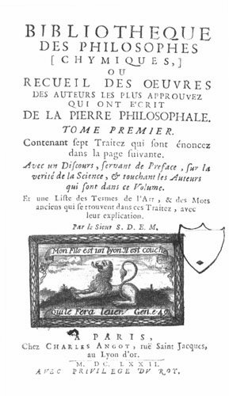
frontispice de la Bibliothèque des Philosophes chymiques
Il existe un Dialogue de Marie et d'Aros [Horus, mais de l'avis même de Chevreul, sur sa critique de l'Histoire de la Chimie d'Hoefer, cet écrit est parodique -] sur le magistère d'Hermès, traduit en français dans la Bibliothèque des philosophes chimiques. Il est attribué à une juive du nom de Marie, laquelle vivait, suivant Lenglet-Dufresnoy, en 470 avant J.-C. Cet écrit est encore apocryphe.
54. Enfin, je dirai qu'il n'existe aucune preuve que Démocrite d'Abdère, le célèbre philosophe grec atomiste, ait été initié aux mystères hermétiques par Ostanes et les prêtres égyptiens. Qu'il se soit livré à quelque opération de céramique ou de vitrification, qu'il ait coloré des composés céramiques ou vitreux en des couleurs diverses, en vert notamment, qu'il ait su amollir l'ivoire en le chauffant, tout cela est possible, mais ne prouve pas, comme on l'a avancé, qu'il savait transmuer des matières terreuses ou vitreuses en émeraudes, et qu'il fût adepte, c'est-à-dire capable d'opérer la transmutation des métaux en or ou en argent. [en six lignes, Chevreul arrive à brosser un tableau complet de l'Art sacré. Il fait mieux que Pontanus - Epitre - qui, de l'aveu de Fulcanelli, avait réussi cet exploit en quinze lignes. Mais personne ne fera mieux qu'Alexandre Sethon pour qui : « la simplicité est le sceau de la vérité » -]
ELLE COMMENCE A LA FONDATION DU MUSÉE D'ALEXANDRIE, DE 285 A 247 AVANT J.-C., ET FINIT AVEC GEBER, QUI VÉCUT TRÈS PROBABLEMENT AU IXe SIÈCLE.
55. Elle comprend en outre les écrits relatifs à l'art sacré, où il n'y a rien de positif quant à la science proprement dite et bien peu de chose quant aux procédés. C'est à la seconde époque que commence en réalité, avec l'alchimie, des recherches dont l'objet repose sur la complexité de la matière.
I. — DISTINCTION DE LA MATIÈRE SIMPLE ET DE LA MATIÈRE COMPOSÉE.
56. Est-il possible de passer facilement de l'histoire de la matière telle que la considéraient les atomistes Platon et Aristote à l'opinion que s'en faisaient les alchimistes, pour qui elle était explicitement composée ? [là encore, il semble que Chevreul fasse une pétition de principe. Nous ne voyons pas en quoi l'attitude « atomiste » de Platon ou d'Aristote les aurait prévenus contre les corps qu'ils trouvaient dans la nature, qui étaient nécessairement composés -] Je ne le pense pas : il est donc indispensable de signaler des difficultés qui, à mon sens, ne l'ont point été.
Si la matière était simple pour les atomistes, les académiciens et les péripatéticiens, s'ils en admettaient l'existence de toute éternité, il s'en faut de beaucoup qu'ils s'en formassent les mêmes idées.
57. Les atomistes envisageaient la matière de la façon la moins complexe, en y reconnaissant une matière proprement dite et une force en vertu de laquelle elle se mouvait. Les atomes n'étaient point uniformes. Les uns, sphériques et à surface polie, glissaient les uns sur les autres et constituaient le feu, l'air et les eaux. Les autres, supposés crochus, susceptibles d'adhérer ensemble, constituaient des solides, de sorte que c'était par des propriétés exclusivement mécaniques qu'on expliquait la diversité des propriétés de la matière. L'existence du vide paraissait aux atomistes indispensable au mouvement des atomes.
58. Platon concevait l'existence de la matière tout autrement que les atomistes, quoique en la considérant avec eux comme existant de toute éternité; mais il admettait que, telle qu'elle affecte nos sens, elle avait été organisée par Dieu ; il y a plus, ce chaos n'était pas inerte, un mouvement l'agitait, mais sans effet déterminé, en un mot, ce mouvement était désordonné. [c'est mettre l'accent sur un point fondamental, complètement négligé dans les études sur l'alchimie : l'aspect instable des réactions chimiques qui s'opéraient dans leur creuset et surtout, l'aspect réversible de ces réactions. Voila qui est à l'origine du terme réincrudation, qui devait prendre, avec les alchimistes du XXe siècle, un essor important -] Comme nous l'avons dit, la matière pour Platon était continue dans ses parties et le vide n'existait pas ; différence considérable entre sa manière de voir et celle des atomistes ; et, avant d'avoir été constituée ou ordonnée par la cause agente divine, elle était, selon lui, dénuée de toute propriété, mais susceptible de les recevoir toutes. Elle apparut à l'homme d'abord sous les formes des quatre éléments ; ensuite une substance éthérée capable de la mouvoir fut produite, et cette substance constitua l'âme humaine.[c'est l'idée géniale des scolastiques du Moyen âge : l'intrusion des concepts chrétiens dans l'oeuvre minérale. Elle n'en devait plus sortir... Vraiment, on mesure à peine combien cette dernière phrase de Chevreul est, pour ainsi dire, providentielle, car c'est bien de cela qu'il s'agit - de ce qui opère - dans le creuset, le petit monde, de l'alchimiste : le fondant, seul, ne sert à rien. c'est une espèce de fou incontrôlable, que l'on nomme le Mercure commun. L'un des secrets de l'oeuvre consiste à « l'animer », ce qui est rendu possible par l'infusion - réalisée au préalable - des chaux métalliques à l'état amorphe. C'est ce que l'on peut lire sous la plume de Chevreul quand il dit « substance éthérée ». Et cette substance éthérée représente le Mercure philosophique, Mercure animé, domestiqué, apprivoisé, qui permet l'accrétion progressive des deux Soufres -]
59. Aristote, moins hardi que son maître Platon, ne s'était pas élevé à la conception d'une matière première sans propriétés, mais, d'accord avec lui, il reconnaissait l'éternité de la matière, la continuité de ses parties et le plein. Il admettait en outre qu'elle devait l'ordre sous lequel elle se manifeste dans le monde actuel à un pouvoir divin ; et l'on ne doit pas s'étonner que le naturaliste qui s'était montré aussi grand que profond dans son Histoire des animaux se soit préoccupé de la forme, dont personne avant lui n'avait compris l'importance dans l'étude des classifications naturelles, alors que la science des actions moléculaires au contact apparent n'existait pas.
60. De l'exposé de l'opinion où la matière est considérée comme simple, passer à l'opinion contraire, n'est donc point une chose facile. La complexité de la matière n'a été adoptée qu'après des siècles ; il a fallu que l'alchimie eût fait son temps, que van Helmont eût exposé les idées les plus extraordinaires sur l'ensemble des êtres qui, selon lui, constituent le monde, que Stahl eût publié la première théorie chimique, que dis-je ? la première hypothèse chimique générale, celle du phlogistique, et enfin que cette hypothèse, après les travaux de Bergmann, de Scheele, de Margraff, de Rouelle, de Macquer, de Priestley, de Cavendish et de Berthollet, eût succombé devant les travaux de Lavoisier, pour que les idées actuelles sur la simplicité et la complexité de la matière fussent adoptées par tous les chimistes sans prévention. C'est avec l'intention d'atténuer la difficulté de passer de l'exposé de l'opinion où l'on admet la simplicité de la matière à l'opinion contraire, qu'avant de commencer l'histoire de l'alchimie où la complexité de la matière est admise explicitement, résumant en deux propositions générales les idées qu'on a aujourd'hui de la matière, je ferai quelque chose d'utile au double point de vue de la clarté et de la précision, pour bien comprendre ce que je dirai de l'alchimie.61. DISTINCTION DE LA MATIÈRE SIMPLE D'AVEC LA MATIÈRE COMPOSÉE.
Quand on ne reconnaît qu'une matière unique et simple, on ne peut attribuer la diversité des formes sous lesquelles elle nous affecte qu'à des propriétés mécaniques ou physiques. Sans la science chimique des actions moléculaires au contact apparent, il est impossible de concevoir nettement la matière simple et la matière complexe. S'il y a longtemps que l'on a parlé d'appliquer l'analyse à la matière complexe pour en séparer les corps constituants, et la synthèse à des corps simples pour en faire des corps composés en les unissant ensemble, c'est à Lavoisier que la science est redevable de l'application raisonnée de ces deux opérations avec l'intention formelle de connaître la nature simple ou complexe de la matière. Il est incontestable qu'on lui doit d'avoir défini :
- 1° le corps composé, celui que l'analyse résout en des corps différents ;
- 2° Le corps simple, celui dont l'analyse est incapable d'en séparer des matières différentes, de sorte que la chimie ne peut soumettre ce corps à l'action d'autres corps que pour en faire des composés.Mais Lavoisier, en génie positif, eut le grand bon sens que, dans cette distinction entre le simple et le complexe, il n'affirmait pas que le corps que l'analyse n'avait pas aujourd'hui réduit en plusieurs corps, était en réalité simple; il exprimait simplement le fait actuel, mais il ne considérait pas comme impossible que ce même corps, soumis quelque jour à de nouvelles tentatives d'analyse, ne se résoudrait pas en différents corps. Il ne s'en tint pas là. Il établit en principe la preuve de l'analyse par la synthèse, et de la synthèse par l'analyse, en recourant dans les deux cas à la balance comme moyen de contrôle.
- 1er exemple. L'analyse chimique a réduit un corps y en 3a + 2b.
Eh bien, la synthèse chimique confirme le résultat si, en unissant 3a avec 2b vous reproduisez le corps y.
- 2ème exemple. La synthèse chimique a produit un composé d en unissant 2b avec 3c.
Eh bien, l'analyse chimique confirme le résultat si elle sépare d'un poids du composé d un poids égal représenté par 2b + 3c.Les corps composés diffèrent les uns des autres par trois causes :
- 1° La nature des corps simples unis ;
- 2° Leurs proportions respectives ;
- 3° Les arrangements moléculaires différents des mêmes corps simples unis dans les mêmes proportions.
Il y a longtemps, et je dirai même avant Lavoisier, qu'on savait que les mêmes corps unis en proportions différentes pouvaient produire des corps différents, et j'ajouterai que des alchimistes ont eu cette opinion sans connaître le moyen de la démontrer. Mais l'influence des arrangements moléculaires dans des corps formés des mêmes éléments unis en même proportion n'a été mis hors de doute qu'aux années 1810 à 1821. Je fus assez heureux pour reconnaître en 1810 la cause qui distingue le fer sulfuré jaune du fer sulfuré blanc, et voici à quelle occasion. Haüy avait pensé à réunir, d'après la correspondance de la forme cristalline, le mispickel avec le fer sulfuré blanc et à séparer celui-ci du fer sulfuré jaune. C'est à cette occasion que je démontrai :
- 1° Que le mispickel était représenté par du protosulfure de fer et de l'arsenic ;
- 2° Que le fer sulfuré jaune avait la même composition élémentaire que le fer sulfuré blanc, et que la différence de leurs propriétés respectives provenait de l'arrangement moléculaire.
Je reconnus plus tard que l'oxygène, l'azote, le carbone et l'hydrogène étaient unis dans les mêmes proportions dans l'albumine fraîche et dans l'albumine cuite ; Et qu'il en était de même de ces quatre éléments constituant le tendon, et la gélatine provenant de ce même tendon bouilli dans l'eau. Ces faits, devenus plus nombreux, ont été rapportés au mot isomérisme, exprimant que les mêmes corps unis dans les mêmes proportions peuvent donner des composés doués de propriétés différentes.
Enfin, plus tard on a reconnu que des corps simples, tels que le soufre, le phosphore, peuvent subir des changements isomériques plus ou moins remarquables. Je cite le diamant et le carbone ou encore le phosphore incolore fusible à 44° et le phosphore amorphe et rouge.II. — CONSIDÉRATIONS GÉNÉRALES.
62. Rien ne met plus en évidence le désordre des idées que la prétendue science alchimique, qui compte des siècles de durée, depuis la fondation du musée d'Alexandrie, de 285 à 247 avant J.-C. jusqu'à nos jours, où il existe encore de malheureux alchimistes, et n'oublions pas qu'un cours de philosophie hermétique, ou d'alchimie dont j'ai rendu compte dans le journal des Savants (année 1851), avait paru à Paris même en 1843. [voir section Cambriel où on lira ce compte rendu -] Exposer une histoire fidèle de l'alchimie dans l'ordre chronologique des ouvrages les plus renommés chez ses adeptes, ne présenterait qu'une suite d'idées disparates, sans liaison aucune, à cause de la diversité des idées sur un même objet, et de la diversité des sujets traités dans un même ouvrage. Ajoutez à ces difficultés que les idées vraies ou justes, et celles encore dont la connaissance présente quelque intérêt, sont loin d'être toujours les plus nouvelles ; en un mot, s'il y a progrès d'un ouvrage à l'autre, il ne tarde point à être interrompu dans l'époque suivante. [de façon générale, on voit qu'il y a deux sortes de traités : les uns traitent de l'alchimie spéculative ; les autres, de l'alchimie pratique. Dans les deux cas, le langage employé est spécial, c'est la cabale hermétique. Pour les ouvrages ayant trait à l'alchimie pratique, on fait la différence entre ceux qui oeuvrent par la voie sèche - la première voie employée - et les autres où c'est la voie humide - postérieure - qui est usitée.]
63. Après de longues réflexions, l'ordre suivant m'a paru préférable à tout autre, parce que, sans être absolument conforme à l'ordre chronologique, il le respecte dans sa généralité. Effectivement, le monde croit que l'alchimie est l'art, ou plus exactement la prétention, de faire de l'or et encore de changer les pierres communes en pierres précieuses; mais nombre de gens ignorent qu'elle a eu plus tard la prétention de triompher des maladies à l'aide de préparations, de médecines, de remèdes qui ont été décorés des noms les plus pompeux, d'élixirs, de panacées, d'arcanes, etc. [le terme élixir veut dire Mercure préparé, c'est-à-dire animé. On ne doit pas le confondre avec cette chimère appelée « élixir de longue vie » Quant au mot arcane, Jung en fait un substantif propre pour la « substance arcane » ou mercurius -]
L'alchimie a donc eu la prétention de satisfaire aux deux plus grands besoins de l'homme : la richesse d'abord, la santé ensuite. Je serai donc fidèle à l'ordre chronologique en parlant successivement :- 1° De l'alchimie appliquée à la transmutation des métaux imparfaits ou communs en or ou en argent ;
- 2° De l'alchimie appliquée à la transmutation des pierres communes en pierres précieuses ;
- 3° Enfin, de l'alchimie appliquée à des préparations propres à assurer la santé de l'homme.Mais cette dernière application ne se lie pas immédiatement aux transmutations des métaux imparfaits en métaux parfaits; elle exigea quelques siècles de préparation, conséquemment elle appartient à la 3ème époque.
64. Pour que les idées alchimiques perdissent de leur généralité, et que la connaissance réelle de la diversité de la matière acquît plus de précision, une science positive devait sortir de travaux poursuivis durant des siècles avec ardeur, dans l'intention pour ceux qui s'y livraient d'atteindre un but doublement chimérique, d'abord celui de la transmutation des métaux vils en métaux parfaits, l'argent et l'or, et des pierres communes en pierres précieuses ; puis celui de la préparation d'une panacée universelle, ou de panacées spécifiques propres à la guérison de chaque sorte de maux qui troublent la santé de l'homme. Ces travaux étaient fondés sur les actions moléculaires qui s'exercent au contact apparent des corps, actions dont l'Antiquité n'eut aucune idée, quoique les hommes en profitassent, sans les connaître, soit pour faire le feu, soit pour préparer le pain et les liqueurs vineuses dans l'économie domestique, soit pour réduire les minerais en métaux, fabriquer des alliages tels que le bronze, des verres incolores et colorés, des émaux, des terres cuites, etc., dans les ateliers de l'industrie. Ce fut donc l'alchimie, poursuivant durant des siècles une double chimère, la production de la richesse et la préparation de panacées à tous maux, qui, après avoir fait connaître des corps qu'elle ne cherchait pas, donna de fréquentes occasions à d'excellents esprits de combattre ses erreurs en établissant la vérité ; et voilà comment le vrai triomphe du faux, au moyen même de la pratique des actions moléculaires à laquelle l'alchimie s'était livrée dans un but doublement intéressé. Voilà la relation de l'alchimie avec la chimie. S'il est vrai que la première ait précédé la seconde, on ne peut dire avec rigueur que la chimie est fille de l'alchimie, parce que le raisonnement seul ne peut faire sortir le vrai du faux. [Fulcanelli pensait que l'alchimie n'avait rien à voir avec la chimie et même que, si cette dernière avait effectivement surgie vers le XVIIe siècle, il s'agissait d'un avatar -]IIème CHAPITRE COMPLÉMENTAIRE.
INDICATION DE QUELQUES OUVRAGES D'ALCHIMIE ÉCRITS DEPUIS LA FONDATION DU MUSÉE D'ALEXANDRIE JUSQU'A GEBER (IXe SIÈCLE).
65. Pour compléter ce que j'ai dit des écrits alchimiques anonymes ou pseudonymes de la première époque, je vais ajouter quelques indications d'écrits relatifs à la seconde, que terminent si bien ceux de Geber. Un grand nombre d'écrits alchimiques parurent depuis la fondation du musée d'Alexandrie jusqu'au IXe siècle, où vécut Geber. Si indubitablement beaucoup de ces écrits sont anonymes ou pseudonymes, il en est un certain nombre qui sont bien l'œuvre des auteurs dont ils portent les noms. Il existe à la Bibliothèque nationale beaucoup de manuscrits relatifs à cette époque dont la plupart n'ont point été imprimés. Je citerai ceux qui l'ont été, et j'indiquerai à chaque nom l'époque à laquelle l'auteur vivait, selon Lenglet - Dufresnoy.
- Comarius (50 av. J.-C. ou 90 10). Manuscrit intitulé : Anonymi expositio in librum Comari philosophi et pontificis, qui Cleopatram docuit sacram et divinam artem lapidis philosophici. (Histoire de la philosophie hermétique, tome III, p. 12.) [il s'agit de Comarios que l'on fait vivre au Ier siècle de notre ère]
La preuve alléguée par Lenglet-Dufresnoy est celle-ci :
« Par quel autre moyen, que par la science hermétique, cette reine aurait-elle dissous et converti en liqueur cette belle perle qu'elle avala dans un repas ? » (Idem, tome I, p.34.)
- Synésius (40 ou 350-431).
Auteur d'un commentaire sur Démocrite d'Abdère. Il a été imprimé. [on trouve aussi un traité intitulé le Vray Livre de la pierre philosophale du docte Synesius, Abbé grec, tiré de la bibliothèque de l'Empereur, réimprimé le 6 avril 1659. Après une introduction, Synesius parle de la Practique en parlant du Mercure ; la première opération est la sublimation ; puis la seconde opération est la déalbation. Enfin, la troisième opération est la rubification. Suit la projection et un épilogue suivant Hermès. Cet ouvrage est emprunt de scolastique et semble à la fois tardif et apocryphe -]- Zosime (410 ou 450).
Un des auteurs grecs qui ont le plus écrit sur l'art hermétique. [Zosime est cité par tous les alchimistes. Jung a consacré l'un des chapitres de ses Racines de la Conscience aux Visions de Zosime, trad. Buchet-Chastel, 1971 ; cf. encore les Écrits authentiques de Zosime, formant le tome IV des Alchimistes Grecs, Les Belles Lettres. Il s'agit du plus ancien des auteurs alchimiques dont nous possédons les écrits authentiques. Il est cité par le Syncelle et par Photius. D'après Suidas, il avait composé vingt-huit livres sur l'alchimie et une vie de Platon. La Collection des alchimistes grecs en renferme des extraits considérables. Mémoires authentiques, Livre de la Vertu, Livre sur la Vertu et l'Interprétation, etc. Une portion non moins étendue de son oeuvre a été conservée dans une traduction syriaque. Plusieurs de ces livres sont consacrés spécialement à l'étude d'un métal déterminé et de ses dérivés en industrie et en orfèvrerie. Mais ils débutent, en général par une sorte de préface mystique, fortement imprégnée de gnosticisme et parfois de magie et remplie d'allégories symboliques qui se sont perpétuées pendant tout le Moyen âge.]
figure mystique de Zosime
- Olympiodore (430 ou 510). Auteur d'un manuscrit intitulé De arte sacra chimicorum.
- Stephanus d'Alexandrie (650 ou 566-646). Auteur d'un traité sur la science hermétique.
CHAPITRE PREMIER. TRANSMUTATION DES METAUX IMPARFAITS EN METAUX PARFAITS, OR OU ARGENT.
— ALCHIMIE AU POINT DE VUE DE LA RICHESSE.
66. Les recherches entreprises pour préparer la pierre philosophale composent presque uniquement les écrits alchimiques depuis l'origine de la prétendue science à laquelle ils appartiennent jusqu'à l'Arabe Geber ou Giaber inclusivement, qui vivait d'après l'opinion commune en 830, et non, comme quelques auteurs l'ont dit, en 780. Il fut précédé d'un certain nombre d'auteurs parmi lesquels on distingue Synésius, Olympiodore, Zosime, Ostanes. Nous donnerons une attention toute particulière à Geber, parce qu'on trouve dans ses ouvrages des idées remarquables, quoiqu'il se soit livré presque exclusivement aux opérations par la voie sèche. Cependant il connaissait la distillation et la distinguait de la filtration. Ce ne fut guère qu'à partir du XIIIe ou du XIVe siècle, où parurent Arnauld de Villeneuve et Raymond Lulle, que commencèrent des publications assez nombreuses sur l'application de l'alchimie à la médecine. Nous avons cru ces remarques nécessaires pour justifier les généralités que nous allons donner sur l'alchimie, en les puisant surtout dans les écrits de Geber, dont la grande autorité comme alchimiste est incontestable.
67. L'alchimie comprend deux parties distinctes :A. La théorie, B. La pratique.
S'il existe quelques traités spéciaux de théorie ou de pratique, le plus grand nombre des ouvrages alchimiques traitent à la fois de la théorie et de la pratique sans distinction explicite.
A. Alchimie au point de vue théorique.
68. S'il est impossible de ramener toutes les théories alchimiques à une expression unique, quoi qu'il en soit, on peut y reconnaître deux pensées différentes.
69. Dans la première pensée les métaux imparfaits sont réputés contenir une certaine quantité de matière propre à constituer de l'or ou de l'argent, et une autre quantité de matière qui, dépassant la constitution du métal précieux, doit être éliminée. Maintenant, on constituera de l'or ou de l'argent avec un métal imparfait en y ajoutant ce qui fait défaut, et en en éliminant ce qui est en excès, la partie grossière, qu'on appelle fèces. La quantité d'or ou d'argent est donc représentée par la matière du métal imparfait qui reste dans le métal parfait, et par ce qu'on y a ajouté.
Et la perte du poids l'est par la quantité de matière du métal imparfait qui en a été éliminée. Voici comment on peut se représenter la réaction :
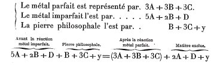
70. S'il est vrai de dire qu'on a fait de l'or avec des matières qui en étaient dépourvues, en réunissant les éléments dans les proportions où, selon les alchimistes, ils constitueraient ce métal, il est incontestable qu'il n'y a pas de transmutation d'un métal imparfait en métal parfait. C'est une opération chimique simple comme on en exécute tous les jours dans les laboratoires de chimie, et qui n'a rien de commun avec la prétention de l'alchimie, qui est de prendre une matière dépourvue d'or ou d'argent et d'en transmuer la totalité de la masse avec une quantité excessivement petite de cette pierre divine qualifiée de philosophale. On ne peut concevoir la prétention de l'alchimie qu'en assimilant la prétendue action de la pierre à celle d'un ferment, comme je vais le dire dans la page suivante. [notez bien que Chevreul envisage ici l'alchimie sous la doctrine scolastique. Dans les premiers temps, nous le répétons, il ne fut question que de teintures métalliques, de verres colorés et de pierres précieuses artificielles. L'Art sacré, selon nous, a consisté en la préparation de pierres précieuses par la voie de nature. Consultez les deux sections Mercure - Soufre - le rôle fermentescible que Chevreul attribue à la pierre philosophale, invention du Moyen Âge, est par contre parfaitement logique, vu dans l'optique du système. Et la comparaison que fait le chimiste par rapport à la pâte à lever le pain est bienvenue -]
Je dois exposer la raison de la lettre y désignant une matière qui se trouve dans la pierre à une certaine époque de la préparation et qui, nuisant à son énergie, doit en être séparée par la volatilisation, comme le lecteur le verra en lisant les alinéas suivants 76 et 77.71. La seconde pensée est tout autre que la première. Il ne s'agit plus d'éliminer d'un métal imparfait une fraction de sa matière qui est étrangère à la composition, soit de l'or, soit de l'argent, et incapable de remplacer cette matière étrangère par une autre qui serait la complémentaire, soit de l'or, soit de l'argent, avec la matière du métal imparfait que l'alchimiste conserve ; il s'agit maintenant de recourir à la pierre philosophale ! Qu'est-ce que cette pierre admirable ? Une composition hermétique, ordinairement pulvérulente, dont une pincée, dit-on, peut changer des quantités indéfinies de métaux imparfaits en argent ou en or.
72. Qui a donné l'idée de cette pierre philosophale ? C'est bien évidemment le levain de pâte, avec lequel on peut faire lever une quantité indéterminée de pâte de farine : en un mot, la pierre philosophale est un ferment : aussi des alchimistes disent-ils explicitement : Pour transmuer le métal imparfait en argent la pierre philosophale doit contenir de l'argent, de même qu'elle doit contenir de l'or pour convertir le métal imparfait en or. C'est ce que dit Isis à son fils Horus dans une prétendue lettre écrite avec l'intention de lui révéler la vertu de la pierre.
73. Je l'avoue, il me serait difficile de citer un écrit où l'opinion conforme à la première pensée théorique de la production de l'or fût nettement exprimée à l'exclusion absolue de l'opinion conforme à la seconde pensée concernant l'action de la pierre comme ferment. Mais pour celui qui étudiera Geber comme je l'ai étudié, il verra que, malgré sa foi à la production de l'or, il a énoncé de fort justes idées en distinguant du simple mélange la mixtion, qui, dans ses idées, correspond parfaitement à la combinaison chimique. Trois choses selon lui exercent de l'influence sur les propriétés d'un mixte : la nature des éléments, leurs proportions respectives (61 2 pp.) et la température à laquelle ils s'unissent. Enfin, après avoir admis deux conditions pour que l'action de la pierre soit efficace, à savoir qu'elle ajoute au métal imparfait ce qui lui manque pour être parfait, et ce qui doit en être éliminé pour qu'il le devienne, il a émis une pensée juste, que dis-je ? supérieure à son siècle et à la plupart des alchimistes qui lui succédèrent dans les siècles qui s'écoulèrent jusqu'à l'époque où la chimie fut établie comme science et l'alchimie reconnue généralement comme chimérique. Quant à la remarque de l'influence de la température, je ne saurais trop louer Geber de cette pensée, par la raison que je ne doute pas aujourd'hui de l'influence qu'elle exerce sur la production des principes immédiats des êtres vivants relativement aux phénomènes que j'ai rapportés au mot cuisson (De la Méthode A POSTERIORI expérimentale, etc., par M. E. Ghevreul. Chez Didot, 1870. Pages 229 à 283.).
74. Cette citation de Geber est exacte, mais il faut se garder d'en tirer toutes les conséquences qui paraîtraient s'en déduire, par la raison qu'en réalité l'auteur était dans l'erreur relativement à la foi qu'il avait de la puissance de l'alchimie. Quoi qu'il en soit, je ne sache pas qu'aucun autre alchimiste ait décrit une suite d'expériences comparables aux siennes, instituées pour savoir si le produit d'une opération hermétique était réellement de l'or ou de l'argent (3ème partie du IIème livre de la Somme de perfection, des Épreuves de la perfection, tome I, page 353.). Il appelle médecine le procédé relatif à la conversion de chaque métal imparfait en'or ou en argent, et le problème est en définitive, conforme au principe de lui donner ce qui lui manque pour être parfait, et de lui enlever en même temps les parties étrangères qu'il renferme de trop pour le devenir. Les propriétés à lui donner sont au nombre de cinq, à savoir :- 1° La netteté ou l'éclat, le brillant de l'or ou de l'argent;
- 2° La teinture ou la couleur ;
- 3° La fusion. Le métal devra rougir avant de se fondre, et, quand la température s'élèvera au-dessus du rouge, il devra paraître bleu, puis d'un blanc resplendissant ;
- 4° La stabilité ou la fixité au feu ;
- 5° Le poids relativement à un volume donné, qui est la densité de l'or ou celle de l'argent.Notons qu'il n'indique que des qualités sans s'expliquer sur le moyen de les communiquer au métal imparfait ; il s'agit donc de synthèse mentale. Geber prend en particulier chaque métal imparfait avec l'intention de voir ce qu'on peut faire pour lui donner la perfection au moyen d'opérations qui sont réellement toutes chimiques, puisqu'on soumet les métaux imparfaits à la chaleur, soit seuls, soit avec des corps qui, instruments chimiques, sont aujourd'hui appelés réactifs.
75. On ne peut apprécier exactement la valeur des opérations de Greber sans y appliquer les principes que j'ai exposés en détail dans mes derniers écrits. En y renvoyant(Introduction, 1, 2, 3. Lettres à M. Villemain, par M. E. Chevreul, sur la méthode en général et sur la définition du mot fait (Garnier frères, 1856). Études des procédés de l'esprit humain dans la recherche de l'inconnu, à l'aide de l'observation et de l'expérience (1874, XXXIXe volume des Mémoires de l'Académie des sciences). La science devant la grammaire. 1er mémoire :
- 1e Section, le substantif et l'adjectif des grammairiens;
- 2e Section, application des notions précédentes à l'étude des sciences de la philosophie naturelle et des sciences morales et politiques ;
- 3° Section, considérations générales induites des deux sections précédentes.),je vais en présenter ce qui me paraît nécessaire pour faire clairement comprendre comment l'auteur arabe a envisagé la transmutation au point de vue expérimental. J'ai posé en principe général : On ne connaît le substantif propre, physique ou métaphysique, que par ses propriétés et leurs relations avec d'autres substantifs (1, 2, 3). Si ces propriétés, ces rapports, sont les éléments de nos connaissances relativement aux substantifs propres, ces éléments, en vertu desquels nous les connaissons, méritent bien la qualification de faits, comme expression des éléments de nos connaissances concernant la certitude. Effectivement, qu'est-ce en définitive qu'une propriété relativement au substantif propre qui la possède ? C'est une unité que l'esprit de l'homme considère à l'exclusion des autres unités, propriétés que possède ce substantif, d'où la conséquence : chaque propriété d'un substantif propre, considérée en elle-même pour la bien connaître, est une abstraction, comme unité séparée par l'esprit d'autres abstractions que l'on ne prend pas alors en considération. Que se propose Geber ? C'est de donner comme complément à chaque métal imparfait ce qui lui manque pour être parfait, c'est-à-dire pour être or ou argent, et ce qu'il lui faut ôter de parties grossières (fèces) étrangères à la constitution du métal précieux. Si à la rigueur Greber ne recourait qu'à la chaleur, à la lumière, et ajoutons aux agents connus aujourd'hui sous le nom d'électricité, de magnétisme, etc., on pourrait jusqu'à un certain point comprendre nettement ses opérations ; mais il a recours à des corps, à des substantifs propres, réactifs, dont chaque espèce possède des propriétés qu'il n'est pas donné à l'homme d'en séparer; conséquemment, dès qu'on met un métal imparfait en contact avec un corps dans l'espérance que ce corps cédera une de ses propriétés au métal imparfait, on se trompe absolument, c'est de la synthèse mentale tout à fait chimérique ; il peut s'y combiner, ou, s'il est complexe, un de ses principes seulement peut s'y unir. S'il y a union, ce sera donc toujours un substantif propre doué de l'ensemble des propriétés qui le constituent espèce chimique déterminée, et non une de ses propriétés essentielles que nous ne pouvons séparer de la matière de ce substantif propre que par une opération de l'esprit, que j'appelle analyse mentale, pour ne pas la confondre avec l'analyse chimique, qui ne porte que sur des substantifs propres appelés espèces chimiques, séparables les uns des autres.
[évidemment, en notre XXIe siècle, que ces pensées doivent paraître, à beaucoup, aussi absconses que les écrits hermétiques eux-mêmes ! Chevreul pousse ici à sa limite extrême les raisonnements des Encyclopédistes du XVIIIe siècle. Ce raisonnement appartient à un monde auquel Chevreul a survécu. Berthelot, déjà, disait de Chevreul que le fil de ses pensées était tortueux. Mais on peut résoudre cette difficulté en imaginant que le chimiste ne fait point autre chose que de la « psychologie chimique » et que ce qu'il attribue à la « synthèse mentale » est absolument congénère de l'idée qu'il se fait d'un « substantif propre » que l'imagination appose à un objet fictif. Notons en passant que ce type de raisonnement se retrouvera au XXe siècle dans la querelle qui opposera les tenants de l'indéterminisme et ceux des variables cachées, dans l'interprétation - causale ou acausale - de la mécanique quantique. Les uns, que d'aucun qualifient de progressistes, dénient toute idée de représentation claire d'une particule - Bohr -, les autres, qualifiés de réactionnaires, en tiennent pour « l'onde à bosse » et soutiennent l'hypothèse du milieu sub-quantique et des phénomènes non linéaires - Louis de Broglie - peut-être reviendrons-nous, un jour, sur la personnalité absolument fascinante de De Broglie...]
76. Voilà, je crois, une explication qui ne laissera aucun doute à l'esprit le plus logique, sur la cause de l'erreur de Geber, et sur les vaines tentatives de ses médecines propres, selon lui, à opérer la transmutation. Effectivement, cette impuissance de l'alchimie une fois constatée et expliquée aussi clairement que je viens de le faire, grâce au principe général qu'on ne connaît le substantif propre que par ses propriétés et ses rapports, grâce enfin aux définitions du mot fait et de la distinction des expressions analyse et synthèse MENTALES d'avec les expressions analyse et synthèse CHIMIQUES, on conçoit donc sans peine maintenant comment les alchimistes persévérant dans leur prétendue science pendant une durée de plusieurs siècles avec une foi toute religieuse, on comprendra tout ce qu'il y a d'erroné dans le chapitre LXIII de la Somme de perfection intitulé Récapitulation de tout l'art. La perfection et l'accomplissement de l'oeuvre ne consiste qu'à rendre le volatil fixe et le fixe volatil.
77. RÉCAPITULATION DE TOUT L'ART.
« Après avoir parlé suffisamment des expériences qu'on peut faire pour examiner la perfection du magistère, et avoir par conséquent satisfait à ce que nous avions promis au commencement de ce livre, il ne nous reste plus autre chose à faire, pour achever notre ouvrage, qu'à mettre dans un seul chapitre tout l'accomplissement de cette divine œuvre, et réduire en peu de mots le procédé du magistère, que nous avons abrégé en cette Somme, et dispersé en tous les chapitres qu'elle contient. Je déclare donc que toute l'œuvre ne consiste qu'à prendre la pierre (c'est-à-dire la matière de la pierre), que l'on doit assez connaître, par toutes les choses que nous en avons dites dans les chapitres de ce traité, et, par un travail assidu et continuel, lui donner le premier degré de sublimation, afin de lui ôter toute l'impureté qui la corrompt, la perfection que la sublimation doit donner à cette matière ne consistant qu'à la faire devenir si subtile, qu'elle soit élevée à la dernière pureté et subtilité, qu'elle devienne enfin toute spirituelle et volatile. Après quoi, il faut la rendre tellement fixe par les manières de fixations que j'ai décrites, qu'elle puisse résister au feu, quelque violent qu'il soit, et y demeurer sans s'enfuir ni s'évaporer. Et c'est là la fin du second degré de la préparation qu'il faut donner à cette matière. Par le troisième degré on achève de la préparer tout à fait, ce qui se fait en sublimant cette pierre (ou cette matière), et par ce moyen, de fixe qu'elle est, la rendant volatile, puis de volatile la faisant fixe une seconde fois, la dissolvant après l'avoir fixée, et étant dissoute la rendant encore volatile, et la refixant tout de même, tant qu'elle soit fusible, et qu'elle transmue les imparfaits, et leur donne la véritable perfection de soleil et de lune à toute épreuve. Ainsi, en refaisant les opérations de ce troisième degré, on augmente la perfection de la pierre, et on multiplie la vertu qu'elle a de transmuer les corps imparfaits. De sorte que ce n'est qu'en refaisant continuellement les mêmes opérations de l'œuvre, qu'on donne la multiplication à la pierre, par laquelle on la rend si parfaite, qu'une de ses parties pourra convertir en véritable soleil et en véritable lune cent parties de métal imparfait, puis mille, et ainsi de suite en augmentant toujours jusqu'à l'infini. Après quoi on n'a plus qu'à faire passer par les épreuves le métal qui aura été transmué pour connaître si le magistère qui en aura fait la transmutation est véritable et parfait. »
[nous voila très loin du courant positif de l'alchimie. Mais ces lignes sont-elles de Geber ? Cela n'est pas assuré, ou du moins l'auteur de la Somme de perfection, qui pourrait être Geber, n'a pas été rapporté par lui-même, mais par un autre Geber, moine religieux du XIIe siècle dont il aurait usurpé l'identité et produit un écrit pseudépigraphique... Dans son Introduction à la chimie des Anciens, Berthelot évoque Geber à de nombreuses reprises et semble lui attribuer pourtant la Somme de Perfection :
« Mais dans Geber, Summa perfectionis, livre I, ch. X et Libri investigationis - IXe siècle - [...], le mot sel ammoniac s'applique à un corps sublimable, tel que notre chlorhydrate d'ammoniaque. Le sens de ce mot a changé au cours des temps. ».
Dans cet autre extrait :
« Le mot ceratio - egkhrwsiV - employé par les traducteurs latins de Geber et qui a eu cours pendant tout le Moyen Âge, exprime cette dernière opération, imitée à la fois des pratiques des peintres anciens et de la fabrication de certains médicaments - cérats - Bibliotheca chemica de Manget, t. I, p. 540, dans le traité de Geber...».
Autre passage :
« La description de ces appareils existe, en traduction latine, dans le second livre de l'ouvrage de Geber, intitulé : De principiis magisterii et perfectione. »
Pour d'autres, Geber n'est rien de plus qu'un nom qui ne s'identifie certainement pas avec celui de Djabir ibn Hajjan : l'influence de la Summa perfectionis, diffusée sous le nom de Geber et actuellement attribuée à Paul de Tarente, donnant une vue d'ensemble de l' « ars alchimiae » sous la forme d'une « somme » scolastique, n'en fut, certainement, que plus grande.
Voir en particulier : E. Darmstaedter. L'alchimie de Geber, Berlin, 1922 ; du même, dans Archeion, Archivo di storia della scienza, 6, 1925, p. 320 sq., 7, 1926, p. 257 sq., 8, 1927 sq., 214 sq., 9, 1928, p. 63 sq., 191 sq., 462 - J. Ruska a réédité ses nombreux travaux dans Das Buch der grossen Chemiker I, Berlin, 1929, p. 18-31 («Dschabir »), p. 60-69 («Geber, Pseudo-Geber»). Le texte traduit l'est d'après W. Ganzenmüller, Alchimie im Mittelalter, p. 208 sq.
On pense à présent que c'est au XIIe siècle qu'apparaît la figure d'un religieux qui se choisit le pseudonyme du savant arabe Djabir. Il semble que ce soit l'auteur d'une version latinisée du Secret des secrets de Rhazès. En effet, dans cet ouvrage qui nous est parvenu sous forme manuscrite, et dont le style est étroitement apparenté à celui de Geber, l'auteur fait allusion à un recueil intitulé La Somme. il s'agit très probablement de la Summa Perfectionis magisterii attribuée à Geber. On relève la même parenté dans d'autres traités, le De Investigatione perfectionis metallorum et le De inventione veritatis. Nous avons développé ce sujet, parce que nous sommes convaincus qu'on attribue à Geber - le premier - des idées qui n'étaient pas les siennes. Or, il ne fait pas de doute pour Chevreul que Geber était unique. On se trouve placé dans un cas semblable à celui des deux Cosmopolite, si ce n'est que Sendivogius était probablement un homme malhonnête...Voici encore quelque notes sur Geber par Berthelot, in Archéologie et Histoire des Sciences, Mémoires de l'Académie, t. XLIX, n°2 :
Geber ou plus correctement Djaber est le plus célèbre des alchimistes arabes ; mais aucune de ses œuvres authentiques n'était connue avant la publication que j'ai faite, avec le concours de M. Houdas, des Traités manuscrits arabes des Bibliothèques de Leyde et de Paris qui portent son nom. Tous les écrits latins attribués jusqu'ici à Geber sont l'oeuvre de pseudoépigraphes et n'ont aucun rapport avec ses Ouvrages authentiques : c'est ce que j'ai établi par l'étude comparative des uns et des autres dans le premier et le troisième Volume de mon histoire de la Chimie au Moyen Âge, en montrant que l'histoire de la Science a été complètement faussée jusqu'ici par ces attributions inexactes. Je n'ai pas à y revenir en ce moment. Cependant, en poursuivant l'examen des manuscrits latins alchimiques existant à la Bibliotlièque Nationale de Paris, j'ai rencontré un Traité anonyme, portant le titre de Livre des soixante-dix (Liber de septuaginta), titre qui figure dans la liste des Ouvrages arabes du véritable Geber indiquée par le Kitab-al-Fihrist, liste dont la traduction est donnée dans le Tome III de mon Histoire de la Chimie au Moyen Âge, pages 32 et suivantes. A la page 34 se trouve l'indication des titres de la plupart de ces soixante-dix Livres ou Chapitres.Ces digressions sont nôtres. Toutes ces citations intercalées ne figurent pas dans le texte de Chevreul]
Or, en dressant la liste de ces titres, parallèlement aux titres de l'Ouvrage latin (la Chimie au Moyen Âge, t. I, p. 322), j'en ai constaté l'identité. Les doctrines qui y sont exposées sont d'ailleurs les mêmes que celles du Djaber authentique et de l'Alchimie attribuée à Avicenne. Il est permis d'en conclure que nous possédons réellement dans le Livre des soixante-dix la traduction latine du texte arabe, aujourd'hui perdu; traduction en grande partie mutilée d'ailleurs, comme le montrent de nombreuses et importantes lacunes.
Elle est écrite dans un style barbare et rempli de fautes de tout genre, attribuables en partie aux copistes, mais aussi au traducteur, qui y a inséré un grand nombre de mots arabes mal transcrits et qu'il ne comprenait pas. Je n'ai pas entrepris d'en rectifier ni le style, ni l'orthographe, ni la grammaire; mais j'ai essayé de donner un sens aussi bien défini que possible à ces textes, en en réglant la ponctuation. Cette traduction, telle que nous la possédons ici, semble en outre interpolée par places, surtout vers la fin. Malgré toutes ces imperfections, elle mérite d'autant plus attention que ce serait là le seul Ouvrage authentique de Geber parvenu jusqu'à nous dans une tradudion latine; sous réserve bien entendu des textes encore inconnus pouvant exister dans d'autres manuscrits. En raison de cette circonstance, il m'a paru intéressant d'imprimer, à tilre de document, le Livre latin des soixante-dix, comme complément des textes arabes publiés dans mon troisième Volume de l'histoire de la Chimie au Moyen Âge. Afin d'en rendre l'étude plus facile, j'ai souligné un certain nombre de titres et de mots caractéristiques, tels que les titres des Livres ou Chapitres, titres dont plusieurs oubliés sont représentés par leurs explicit finaux; lesquels seront également soulignés. De même les litres des autres Ouvrages de Geber. signalés au Kitab-al-Fihrist, ou cités au cours de l'Ouvrage actuel, et dont la citation constitue une des preuves de son authenticité. De même encore les mots symboliques : sang, œufs, cheveux, sperme, etc., dérivés du symbolisme gréco-égyptien des prophètes cités dans Dioscoride et dans le Papyrus V de Leyde, ainsi que de ceux des alchimistes; comme il résulte, expressément d'ailleurs, d'un texte de l'Alchimie d'Avicène (La Chimie au Moyen Âge, t. I, p. 303). Toute cette nomenclature a joué un grand rôle dans les écrits des alchimistes latins du Moyen Âge : les symboles ayant été parfois pris au pied de la lettre; tandis que dans la plupart des cas l'interprélation mal connue de leur sens caché jette une grande obscurité sur le caractère réel des pratiques et opérations. J'ai souligné surtout ces mots lors de leur apparition, au début des Chapitres où sont développées les manipulations où ils figurent comme matières premières, ou comme produits. Enfin j'ai encore souligné l'apparition des mots et des doctrines relatifs à l'élément radical des choses, aux doubles propriétés, occultes et apparentes, des différents métaux et autres substances, à la doctrine des quatre éléments et aux interprétations et applications subtiles qu'en donne l'Alchimie : doctrines qui jouent un si grand rôle chez les Arabes et chez leurs disciples occidentaux. Ces diverses indications sont indispensables pour jalonner en quelque sorte le plan du Livre des soixante-dix. Les mots illisibles seront remplacés par des points. [...]Berthelot78. Cette longue citation ne montre-t-elle pas toute la foi de Geber en sa science ? Ne montre-t-elle pas comment cet esprit, si judicieux et si sage, en partant de la première pensée concernant l'opinion la plus raisonnable, la moins mystérieuse, de la pierre philosophale, s'est peu à peu pénétré de la seconde pensée et est arrivé enfin à indiquer comme dernier progrès de la pierre philosophale celui où une quantité finie de celle-ci a acquis la propriété de transmuer des quantités indéfinies de métaux imparfaits, qui est bien l'idée du ferment le plus puissant attribué à la pierre ? Il importe de faire remarquer un fait sur lequel nous reviendrons en parlant de l'application de l'alchimie à la médecine relativement au rôle que l'on attribue à la quinte-essence. Ce sont les lignes que je reproduis ici :
« Et, par un travail assidu et continuel, lui donner le premier degré de sublimation, afin de lui ôter toute l'impureté qui la corrompt. La perfection que la sublimation doit donner à cette matière ne consistant qu'à la faire devenir si subtile, qu'elle soit élevée à la dernière pureté et subtilité, qu'elle devienne enfin foute spirituelle et volatile. » [C'est ce qui est exprimé dans l'une des figures du Rosarium Philosophorium, cf. Aurora consurgens II pour une explication]
8ème figure du Ros. Phil.
L'impureté qui la corrompt justifie donc l'introduction de la lettre y dans la composition que j'ai attribuée à la pierre philosophale (69).
79. Si Geber a été aussi loin de son point de départ, relativement à sa première pensée sur la transmutation (69, 70) et à l'opinion qu'il a professée en dernier lieu sur l'accroissement de la puissance de la pierre comme ferment à mesure qu'on augmente le nombre de sublimations et de fixations auxquelles on la soumet, il n'est point étonnant qu'il ait suivi l'exemple des autres alchimistes en justifiant l'obscurité de ses écrits relativement à la préparation de la pierre. Je crois intéressant au but que je me propose, en traçant ce résumé d'alchimie, de reproduire le texte même de Geber :« Mais, pour ôter toute sorte de prétexte aux calomniateurs de nous accuser de mauvaise foi et de n'avoir pas agi sincèrement en ce traité, je déclare ici premièrement qu'en cette Somme je n'ai pas enseigné notre science de suite, mais je l'ai dispersée ça et là en divers chapitres, et je l'ai fait ainsi à dessein, parce que, si je l'avais mise par ordre et de suite, les méchants, qui en feraient un mauvais usage, l'auraient apprise aussi facilement que les gens de bien, ce qui serait une chose tout à fait indigne et injuste. Je déclare en second lieu que, partout où il ce semble que j'ai parlé le plus clairement et le plus convenablement de notre science, c'est là où j'en ai parlé le plus obscurément et où je l'ai le plus cachée. Je n'en ai pourtant jamais parlé par allégorie ni par énigme ; mais je l'ai traitée et je l'ai enseignée en paroles claires et intelligibles, l'ayant écrite sincèrement et de la manière que je l'ai sue et que je l'ai apprise par l'inspiration de Dieu, très-haut, très-glorieux et infiniment louable, qui a daigné me le révéler, n'y ayant que lui seul qui la donne à qui il lui plaît, et qui l'ôte quand il lui plaît. »
80. Ce passage est d'autant plus remarquable que l'ouvrage est terminé par un exposé que je ne reproduirai pas en ce moment, mais plus tard (84), en parlant de l'alchimie au point de vue pratique, par la raison que cet exposé ne comprend que des procédés des opérations MANUELLES ; mais décrits à quelle intention ? Celle d'apprendre à l'alchimiste qui les mettra en pratique s'il n'a pas été dupe de quelque erreur, s'il a pris l'apparence pour la réalité. Effectivement, supposez vrai tout ce que Geber a dit de la préparation de la pierre, alors, à mon tour, je serai vrai en disant que Geber a procédé dans sa Somme de perfection de la manière la plus sévère comme la plus exacte, puisque, fidèle à la méthode A POSTERIORI expérimentale, il a donné le moyen de reconnaître si l'alchimiste a atteint le but qu'il s'était proposé, à savoir le vrai, et non pas le faux (86). Et l'épreuve qu'il prescrit est si exacte, qu'en mettant Geber de côté, il serait bien difficile, aujourd'hui même, de nier qu'une matière remise par un homme quelconque à un chimiste exercé n'est pas de l'or, lorsque ce chimiste aurait constaté que cette matière avait soutenu les dix épreuves indiquées par Geber, les plus convenables à constater les propriétés caractéristiques de l'or.
B. — ALCHIMIE AU POINT DE VUE PRATIQUE.
81. Dans le résumé que je fais de l'histoire de la matière on ne s'étonnera pas de la grande place donnée à l'alchimie : car, toute chimérique qu'elle est, on ne peut nier que les justes critiques dont elle a été l'objet ont donné naissance à la science chimique, dont le caractère essentiel est la réduction de la matière en des types définis par leurs propriétés, qui sont appelés espèces chimiques; dès lors cette grande place a sa raison d'être pour toute personne curieuse d'étudier l'origine de la chimie et de connaître la partie pratique de l'alchimie dont le caractère n'a rien de commun avec les aspirations chimériques de sa partie théorique. Or, pour la connaître d'une manière précise, il faut élaguer de cette partie pratique tout ce qui est hermétique, en d'autres termes ce qui concerne la confection de la pierre et la transmutation par action purement hermétique. La partie pratique réellement scientifique concerne la description des appareils et des moyens d'en faire usage par des opérations qu'on peut distinguer des précédentes, parce que, toutes positives, elles rentrent dans le domaine de la chimie ; [mais il faut retenir tout ce qui a trait au travail combiné du verre, des teintures métalliques et de la préparation des pierres gemmes artificielles -] je vais donc distinguer deux catégories d'opérations pratiques, des opérations hermétiques et des opérations chimiques qui seules sont véritablement du domaine de la science.
§ I. — DES OPÉRATIONS HERMÉTIQUES.
82. Il suffit de rappeler le passage de Geber que j'ai reproduit textuellement (77, 79) pour voir que rien de sérieux, de fondé, ne peut être déduit des opérations que j'ai qualifiées d'hermétiques, puisque, de l'aveu même des auteurs qui se reconnaissent adeptes, c'est-à-dire capables d'opérer la transmutation, ils avouent avoir caché leurs véritables procédés, afin de dérouter les lecteurs. Pourquoi, dira-t-on, écrivent-ils ? Ils écrivent pour des hommes de bien qui ont été préparés à recevoir les secrets de la transmutation ; alors comment ces hommes de bien ne les ont-ils pas reçus de leurs maîtres adeptes ? Pourquoi alors recourir à des livres mensongers, si, de siècle en siècle, les adeptes se répètent, tous avouant que la plus grande partie de leur vie s'était passée dans l'impuissance, lorsque Dieu leur a communiqué la science de la transmutation ? On ne s'explique pas comment les erreurs de l'alchimie ont encore des partisans, quand on raisonne bien... Mais, si le fait est le contraire de la raison, reconnaissez alors qu'il existe beaucoup d'hommes qui préfèrent l'erreur à la vérité.
§ 2. — DES OPÉRATIONS CHIMIQUES.
83. Passons maintenant à la partie matérielle de l'alchimie, concernant les fourneaux, les appareils, les instruments, etc., servant à l'exécution des opérations relatives aux actions moléculaires des corps, qui s'exécutaient dans l'économie domestique et dans l'économie industrielle des arts chimiques. Eh bien, les laboratoires alchimiques n'ont été longtemps que des ateliers en petit où l'on exécutait des opérations du ressort des actions moléculaires. Il ne faut pas oublier que les philosophes grecs ne soupçonnèrent jamais la science qui devait sortir de l'étude de ces actions, et que, excepté les travaux manuels des beaux-arts, ceux de la sculpture et de la peinture, ils ne faisaient aucun cas des travaux manuels exécutés dans l'économie des arts industriels. Et ce peu d'estime pour les travaux manuels tint longtemps les chirurgiens et les apothicaires dans une position subordonnée aux médecins.
84. Les appareils d'usage dans les ateliers de l'industrie et de l'alchimie ont été longtemps bornés aux opérations dans lesquelles la chaleur agit sur des matières sèches, en en exceptant pourtant les appareils où la chaleur agit sur des liquides ; ceux-ci sont du domaine de la voie humide et les premiers le sont du domaine de la voie sèche.
85. Dans les premiers siècles de l'alchimie, les procédés ont appartenu exclusivement à la voie sèche, et ce n'est qu'à l'époque où les acides minéraux ont été connus que les matières d'origine organique ont été soumises aux actions moléculaires, et que l'alchimie a pu procéder par la voie humide. En lisant attentivement la Somme de la perfection de Geber, on se convainc que tout ou presque tout ce qu'il décrit appartient à la voie sèche. Je dis presque par la raison qu'il connaissait parfaitement la distillation au moyen de laquelle on sépare un liquide volatile des fèces qu'il renferme, et qu'il la distinguait parfaitement de la filtration.
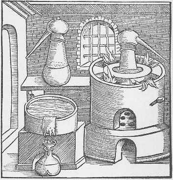
fourneau à distillation d'un traité de Geber86. Rien ne peut donner une idée plus avantageuse du savoir pratique de Geber que les descriptions d'opérations pratiques qui sont en dehors de sa théorie alchimique ; rien ne donne en effet une idée plus avantageuse de son esprit méthodique que la troisième et dernière partie du second livre de la Somme concernant les épreuves de la perfection convenables. Comme je l'ai dit plus haut, en les répétant fidèlement on pouvait savoir si l'alchimiste avait réussi ou non dans ses transmutations des métaux imparfaits en métaux parfaits, or ou argent. Geber commence par rappeler les propriétés physiques des métaux précieux. Il insiste avant tout sur la densité, ou, pour se servir de ses expressions, le poids pris dans des volumes égaux. C'est l'application de l'admirable principe d'Archimède relativement au problème de la couronne. Il prescrit encore de reconnaître la couleur, la ductilité, etc., autres propriétés physiques dont les métaux précieux sont doués. Il décrit ensuite dix opérations avec une clarté remarquable. Indiquons-les rapidement. [cf. aussi section chimie et alchimie -]
- 1° La coupellation. L'or et l'argent seuls des métaux la soutiennent, après qu'on a ajouté du plomb aux métaux fondus ;
- 2° La cimentation (cémentation). Chauffer trois jours et trois nuits au rouge, sans fusion, des lamelles du métal à essayer recouvert d'un cément formé de matières telles que vitriol, sel ammoniac, verdet, auxquelles on ajoute un peu de poudre de brique, et peu de soufre, si l'on veut. On humecte le tout d'urine d'homme et on enduit chaque lamelle de ce mélange. Les métaux précieux seuls résistent ;
- 3° Rougir le métal au feu. Les métaux parfaits seuls rougissent avant de fondre, et, la température s'élevant, ils brillent d'une belle lumière bleue, puis blanche du plus vif éclat ;
- 4° Les métaux imparfaits qui, comme le cuivre et le fer, rougissent avant de se fondre, ne présentent pas la belle couleur de l'or et de l'argent ;
- 5° L'exposition à des vapeurs acides. Geber présente des lamelles de métal au-dessus d'une liqueur aigre, pontique et acide. Les seuls métaux parfaits or et argent ne s'altèrent pas sous l'influence des vapeurs aqueuses et acides ;
- 6° Rougir les métaux et les plonger dans de l'eau où l'on a dissous un sel ou de l'alun. Les métaux parfaits seuls ne sont point altérés ;
- 7° Si les métaux parfaits peuvent se sulfurer dans la vapeur chaude du soufre, l'or et l'argent seuls, réchauffés (avec le contact de l'air), reviennent à leur premier état ;
- 8° et 9° La calcination et la réduction. Les métaux parfaits seuls, soumis successivement à cette double opération, n'en éprouvent aucun changement ;
- 10° L'action du mercure. Les métaux parfaits sont les plus disposés à s'amalgamer. Or, quand on essaye la transmutation des métaux imparfaits, il est bon d'essayer s'ils ont gagné en aptitude à s'unir au mercure.87. On n'aurait qu'une idée incomplète des écrits de Geber concernant la pratique des opérations hermétiques et des opérations du ressort de la chimie en ne parlant que de la Somme de perfection ; car, dans le Liber investigationum magisterii, publié avant elle, il décrit un grand nombre de préparations, et, dans le Liber fornacum, publié après elle, il parle des fourneaux, des moyens de s'en servir et de préparations hermétiques.
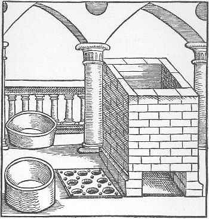
fourneau de calcination du Liber fornacum88. Un Traité d'alchimie porte son nom, mais ne paraît pas devoir lui être attribué selon quelques critiques, et j'avoue que je suis frappé de l'objection qu'ils élèvent en demandant comment l'auteur de ce traité, parlant de l'acide chlorhydrique (esprit de sel) et de l'eau régale, ces puissants agents de la voie humide, comment, si Geber en était l'auteur, il aurait négligé de parler de leur énergie dans ses écrits antérieurs, ou comment, s'étant tu lui-même, il n'eût pas expliqué son silence dans le Traité d'alchimie, s'il en était réellement l'auteur ? En définitive, Geber se montre sous deux aspects fort différents au point de vue de l'alchimie.
A. Sous l'aspect scientifique.
On trouve dans la Somme de perfection l'opinion que j'ai énoncée aux alinéa 69 et 70 sous le titre de première pensée. C'est l'idée vraiment scientifique qu'on pourrait se faire de la production de l'or ou de l'argent si ces métaux, au lieu d'être simples, étaient formés de soufre, de mercure et d'arsenic, et que chacun de ces trois composés le fût des quatre éléments. [si l'on remplace le mot métal par celui de minéral, on peut trouver un sens positif aux trois principes de l'Art sacré -] Geber est encore heureusement inspiré en prescrivant dans les opérations hermétiques de soumettre le produit à des épreuves (86) pour savoir en définitive si l'on a trouvé la vérité ou l'erreur. Enfin, il était dans le vrai en parlant de l'influence de la nature des corps et de leurs proportions respectives dans les mixtes, qu'il ne confondait pas avec le mélange (73). [par exemple, on trouve dans une pierre précieuse, le rubis, le saphir, le Mixte parfait, incarnant des substances point simplement mélangées mais combinées -]
N'est-ce pas difficile à concevoir que l'homme qui, au IXe siècle, avait des idées si justes, les abandonne absolument pour professer en définitive les chimères de l'alchimie vulgaire qui sont absolument contradictoires avec les idées précédentes (A) ? Geber admet donc les quatre éléments : le feu, l'air, l'eau et la terre. Ces quatre éléments constituent le soufre, le mercure et l'arsenic, les trois principes immédiats des métaux (152). Il considère la pierre philosophale comme un ferment capable de changer les métaux imparfaits en métaux parfaits. En outre, il admet qu'à force de réitérer successivement la volatilisation de la pierre ou quelqu'une de ses parties et sa fixation, deux opérations contraires, on augmente l'activité de cette prétendue merveilleuse pierre. Il n'existe rien de plus contradictoire en alchimie que Geber envisagé sous ces deux aspects. [cette contradiction serait-elle levée si l'on examinait les écrits dont on soit sûr qu'ils sont de la main du premier Geber - Liber de Septuaginta -, confrontés à ceux du seond Geber, lequel a vraisemblablement écrit la Summa perfectionis ? On serait porté à le penser...]
CHAPITRE II. ALCHIMIE AU POINT DE VUE DE LA RICHESSE. — TRANSMUTATION DES PIERRES COMMUNES EN PIERRES PRÉCIEUSES.
89. Je ne connais pas de recherches suivies entreprises avec l'intention de transmuer les pierres communes en pierres précieuses qu'on puisse comparer à celles qui n'ont pas cessé d'occuper les alchimistes dont le but était la transmutation des métaux imparfaits en métaux parfaits. Évidemment l'alchimiste qui, en s'adressant à une personne disposée à le payer sur la promesse qu'il lui faisait de la rendre riche, comprenait bien mieux la promesse de le devenir avec de l'argent ou de l'or, que de le devenir au moyen de la transmutation d'un caillou, non en diamant, mais en pierre précieuse comme un rubis, une topaze, une émeraude... mais sans pouvoir affirmer précisément ce que serait le caillou transformé. Or l'alchimiste, se trouvant dans la nécessité de recourir à un bailleur de fonds pour travailler, pensait donc avec raison qu'il se le rendrait plus accessible en lui promettant la transmutation des métaux en or ou en argent qu'en lui proposant la transmutation des pierres communes en pierres précieuses. Voilà l'explication, il me semble, du silence que le plus grand nombre des alchimistes ont gardé sur la transmutation des pierres, tandis que tous savaient se faire comprendre lorsqu'ils proposaient la transmutation métallique.
Quoi qu'il en soit, je devais rappeler comment tous les esprits occupés d'alchimie étaient disposés à recourir à des moyens de transmutation quelconques quand il s'agissait de satisfaire au besoin de la richesse.[c'est, pour nous, le chapitre le plus important du dernier ouvrage de Chevreul, celui où il manifeste de la manière la plus formelle, en même temps qu'il fait comprendre, comment et pourquoi ces deux courants ont prévalu. Voyez la section précédente où nous donnons le § 89 en le commentant davantage -]
ELLE COMMENCE AVEC LE Xème SIÈCLE ET SE TERMINE EXCLUSIVEMENT A LA SECONDE ALCHIMIE DONT BECHER EST L'AUTEUR. BECHER VÉCUT AU XVIIème SIÈCLE, DE 1635 A 1682. [N.B. : nous avons systématiquement corrigé Becker en Becher -]
Cette époque comprend l'application de la chimie à la médecine et celle de l'alchimie à la santé de l'homme, un très-grand nombre d'écrits alchimiques, les premiers travaux purement chimiques, et des écrits qui commencèrent à combattre les illusions et les erreurs des alchimistes.
90. Nous avons réparti en trois chapitres les prétentions des alchimistes.
Ier chapitre. — La transmutation des métaux imparfaits en métaux parfaits.
IIème chapitre. — La transmutation des pierres communes en pierres précieuses.
IIIème chapitre. — La préparation des élixirs pour assurer la santé de l'homme.
Depuis Geber jusqu'à l'écrit de Raymond Lulle sur la quinte-essence il s'est écoulé quatre siècles au moins. Observant autant que possible l'ordre chronologique, il n'est point étonnant que le troisième chapitre, concernant l'alchimie considérée autant que possible en elle-même, appartienne à la troisième époque et non à la seconde. C'est la conséquence des travaux exécutés depuis Geber jusqu'à Raymond Lulle. En effet, il a fallu que des médecins arabes, successeurs immédiats de Geber, aient axé leur attention sur le parti que les médecins pouvaient tirer de l'alchimie pour préparer les esprits à recourir aux remèdes alchimiques.
IIIème CHAPITRE COMPLÉMENTAIRE
RAPPELANT QUELQUES NOMS ILLUSTRES ET DES NOMS PLUS MODESTES QUE L'HISTOIRE DE L'ALCHIMIE CONSERVE DANS SES ARCHIVES.
91. Sans exagérer l'importance des chapitres complémentaires ajoutés à ce résumé de l'histoire de la matière, je crois devoir en joindre un à la 3ème époque de l'histoire des connaissances chimiques pour indiquer dans l'ordre chronologique l'existence des grandes illustrations scientifiques et des noms moins illustres, mais que l'alchimie conserve dans ses archives à des titres quelconques. Citons les noms en commençant par les plus notables des Arabes qui, depuis Geber jusqu'à Raymond Lulle, se sont occupés de médecine et d'alchimie.
- Razès ou Rhasis, qui mourut dans un âge avancé, en 928 ou 980. Il passe chez les Arabes pour le premier médecin qui ait appliqué l'alchimie à la médecine. On dit qu'il mourut dans le premier tiers du Xe siècle ou un siècle après Geber.
- Farabim ou Alfarabius, mort assassiné en 954. II a été considéré par les Arabes comme un grand philosophe, savant en toute science, littérateur distingué et familiarisé avec la culture de la musique même.
- Salmana (1000).
- Avicenne (né en 980, mort en 1036). Célèbre en médecine et en philosophie, il passait pour adepte.
- Aristote (pseudo-). Alchimiste, se disait disciple d'Avicenne ; plusieurs de ses écrits ont été attribués au philosophe grec Aristote.
- Adfard [1, 2, 3, 4, 5, 6,] (1050 ou 954). Arabe, philosophe alexandrin, passait pour adepte, et ses contemporains attribuaient ses grandes richesses à sa science hermétique. Il fut le maître de Morien, d'origine romaine.
- Morien (né à Rome, peut-être en 980, mort après 1045). Il quitta sa famille pour étudier la science hermétique en Egypte sous Adfard, qui l'initia à la préparation de la pierre. Adfard mourut, et Morien se rendit à Jérusalem où il se fixa dans un ermitage pour y mourir en chrétien. Il passe pour avoir vu Calid, soudan de l'Egypte, dans deux occasions, et dans la dernière lui avoir communiqué le secret de la pierre (Lenglet -Dufresnoy). [cf. bibliographie et Entretiens de Calid et Morien ; voir aussi idée alchimique, II]
- Artefius. Il vécut probablement dans le XIIe siècle. Il cite Adfard et est cité par Roger Bacon. Or Adfard est du XIe siècle et Roger Bacon du XIIIe. [le Livre Secret d'Artéphius est très réputé et Fulcanelli le cite comme un des rares donnant des indications exactes sur le Mercure - cf. bibliographie]
- Roger Bacon, né en 1214, mourut en 1248 suivant Laland, en 1284 suivant Pissseus, et, suivant l'opinion commune, en 1294.
- Albert le Grand (1193 ou 1206, il mourut en 1280).
- Aristaeus [1, 2, 3, 4,] (1200 ?). Auteur de la Tourbe des philosophes.
- Saint Thomas d'Aquin (1227- 1274).
- Arnauld de Villeneuve (1231 ou 1240, 1310 ou 1311).
- Raymond Lulle [1, 2] ( 1235 - 1315). [cf. infra]
- Jean de Meung, [1, 2, 3, 4, 5, 6, 7,] auteur d'une suite du Roman de la Rose (mort en 1320 ?).
- Jean de Rupescissa (vivait certainement en 1357). [cf. infra]
- Bernard le Trévisan [1, 2, 3, 4] (1406-1490).
- Isaac le Hollandais [1, 2, 3, 4, 5, 6, 7,] (vivait au XVe siècle). [Chevreul dit le plus grand bien d'Isaac le Hollandais. N'est disponible sur internet que son traité sur l'Oeuvre de Saturne - site hermétisme et alchimie ]
Notes de Ferguson sur Isaac [Bibliotheca chemica I, pp. 412-415 :
Little seems to be known about the persons called Hollandus. By most authorities Isaac is regarded as the father and John Isaac as the son, but Manget inverts this and calls John Isaac the father and Isaac the son. Boerhaave says they were natives of Stolk, and Van der Aa of Stolkwijk in Krimpenaarwaard. Scbmieder gives reasons for believing that they lived early in the fifteenth century, and Van der Aa says that the younger Hollandus lived about 1440; others (such as Sweertius, Athena Belgicae, Antw. 1628) put them at the end of the sixteenth century, or even, as Bergmann does, at the beginning of the seventeenth. Neri, when about to describe a paste to imitate gems, says he took it when he was in Flanders from Isaac Hollandus. Now though Neri was there in all likelihood towards the end of the sixteenth or in the early yean of the seventeenth century, his words hardly imply that Hollandus was alive at that time, and that Neri got the process from him direct. But there is no impossibility in it. There is also such a want of unanimity in assign, ing the writings to their respective authors, that one is almost disposed to question whether instead of two persons there may not have been one only. This seems to be the result arrived at by Ladrague who enters all the writings under John Isaac, and takes no notice of Isaac. Borel and Gmelin, though both recognising father and son, make no attempt to sort the titles, but put them under the authors conjointly. Leng-let Dufresnoy, however, followed by Schmieder, has made the attempt; but comparison of their allotment with the above titles, taken from the books themselves, will show either that they have confused the persona, or that in the copies they consulted, the names of the authors were different from what they are in the above.The analogy of the writings to those of Basilius Valentiuus has been pointed out by some writers, and Van der Aa, who tikes the fifteenth century as their time, goes the length of saying that not only Paracelsus has whole passages which might have been transcribed from Hollandus, but even Boyle had got credit for what Hollandus had known previously.The writings which pass under their authorship have been commended by Boerhaave, and Isaac is said to have been skilful in enamelling and in imitating precious stones.
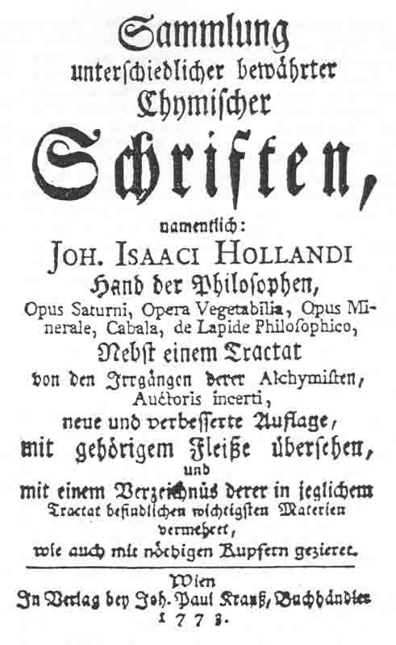
- Basile Valentin. [1, 2, 3, 4] Excepté le nom que portent plusieurs traités, tout est problématique sur la personne de l'auteur de ces traités. Il vivait probablement au XIVe ou au XVe siècle. [c'est le plus bel exemple de « synthèse mentale » des alchimistes, car le moine d'Erfurth n'a sans doute pas existé -]
- Philippe Ulstade, auteur du Ciel des philosophes (1500). [remarquable ouvrage disponible sur le serveur Gallica de la bnf - Ulstade ou Ulstedt y parle beaucoup de la chélidoine et de « l'antimonie - antemonium -]
- Henri-Cornélius Agrippa [1, 2, 3, 4, 5,] (1486-1534).
- Drebellius (1551). [in Divers traitez de la philosophie naturelle. Sçavoir, La Turbe des Philosophes, ou le code de verité en l'Art. La Parole Delaissée de Bernard Trevisan. Les deus traitez de Corneille Drebel Flaman. Avec le Tres-Ancien Duel des Chevaliers. Nouvellement traduits en François, par un docteur en medecine. 12° Paris: Jean d'Houry 1672 - Mémoire sur une nouvelle machine à plonger, Paris, 1811
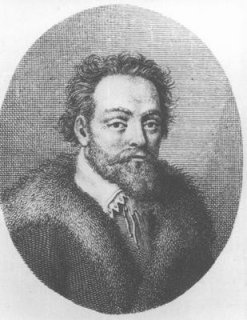
Cornelius Drebel (1572-1634)
physicien et mécanicien, né en 1572 à Alkmaër (Hollande), mort à Londres en 1634. II était précepteur des fils de l'empereur Ferdinand II et membre de son conseil privé, lorsqu'il fut pris et dépouillé, pendant la guerre de Trente ans, par les troupes de l'électeur palatin Frédéric V, gendre de Jacques I, roi d'Angleterre. Rendu à la liberté par l'intercession du roi d'Angleterre, il se fixa à Londres, où il passa le reste de sa vie. Drebbel inventa, vers 1621, le thermomètre qui porte son nom : c'est un thermomètre à air, composé d'un vase plein d'air terminé par un tube contenant de l'eau : l'air, en se dilatant, déplaçait la colonne d'eau dans le tube. On lui attribue, mais à tort, l'invention du microscope et du télescope. Il passa de son temps pour un magicien, il paraît avoir connu la fantasmagorie. Drebbel a laissé deux ouvrages en hollandais, qui ont été trad. en français sous le titre de Traités de la nature des Éléments et de la Quintessence, Paris, 1672. Ces traités ont été publiés dans l'anthologie Divers Traitez de la Philosophie Naturelle. On lui doit aussi la première machine sous marine qui se présentait comme une cloche à plongée ; ainsi qu'une teinture écarlate qu'il préparait à partie de l'étain. ]
- Jean Fernel de Montdidier, médecin du roi de France Henri II (1497-1558). [
Jean Fernel appliqua la méthode de Ramus à la médecine, et se rendit par-là digne du nom de réformateur. Il était d'Amiens (Mézeray, Histoire de la France, vol. II p. 1129. — Oc est incertain de la date de sa naissance. Guy Patin (Lettres, vol.I. ép. 117. p. 453)-rapporte des témoignages irrécusables qui constatent que Fernel mourut en 1558, a l'âge de cinquante -deux ans, en sorte qu'il serait né en 1506. Mais de Lalande ( Hist. de l'Acad. des Sciences, ann. 1787. p. 116) prétend qu'il naquit en 1485. (Il est reconnu qu'il est né à Montdidier, dans le diocèse d'Amiens.), s'appliqua dans son jeune âge aux langues savantes, à la logique et aux mathématiques, et acquit des connaissances extraordinaires dans toutes ces parties (Le premier il fixa les degrés de latitude à 50, 70 toises, et il écrivitune Cosmothéorie. (in-fol. Paris, 1528).-Comparez, sur sa vie Plantius, de vita Fernelii, en tête de ses ouvrages. - Bayle, vol. II. p. 452. - Teissier, vol I, p. 291 - Goulin dans les Annales des Sciences de Gottingue, ann. 1777, p. 392 .— Gruner's Almanach etc. . c'est-à-dire, Almanach pour les Médecins , année 1789. p. 180.). Ce fut à regret qu'il accepta la charge de médecin du roi, parce qu'elle paraissait devoir trop l'éloigner de ses études. De même que Ramus, il secoua le joug des préjugés, exposa d'excellens principes dans un style plus pur et dans un ordre plus méthodique que ses prédécesseurs, adopta les idées qui lui paraissaient bonnes , et rejeta celles qui lui semblaient fausses, qu'elles eus sent été émises par Galien, par Aristote ou par Hippocrate. C'est de cette manière qu'il parvint à introduire un ordre inconnu depuis long-temps, et à rétablir la liberté de penser qui avait tant souffert du despotisme des scholastiques. Dans sa physiologie, il réfute entre autres l'opinion de Galien sur les ouvertures du péritoine, et le passage des testicules au travers de ces orifices. Il prouve par ses propres autopsies cadavériques, que cette membrane ne fait que s'allonger sans jamais se déchirer. Contre l'assertion d'Aristote, il soutient que l'âme a son siège dans le cerveau, et que les nerfs prennent leur origine dans la substance de ce viscère ; mais il attribue encore aux artères l'usage de contenir un esprit particulier : il fait consister, avec les anciens scholastiques, les tempéramens dans un mélange exact et juste de divers ëlëmens, prétend que les femmes ont réellement une liqueur séminale et des testicules, et veut que le foie soit le seul organe préparatoire du sang. Les élémens sont de vrais corps, et non de simples qualités, puisqu'ils conservent la forme et la substance dans le mélange. On ne doit donner le nom de parties du corps qu'à celles qui sont nourries dans le même temps que lui, et destinées à l'accomplissement des fonctions : d'où il conclut que les cheveux, les ongles, la graisse, etc., ne doivent pas être rangés parmi les parties du corps. Dans sa pathologie, il considère les solides, les fluides et les fonctions. La cause éloignée réside dans les humeurs, la maladie elle-même dans les solides, et les symptômes dans les fonctions. On doit chercher la cause des maladies dans le corps, et non dans les humeurs altérées par l'affection. Il applique de même la méthode de Ramus à la pathologie entière. La forme de la maladie est la species morbi in materiam impressa et inducta, la cause finale, la lésion et le dérangement des fonctions, et la cause efficiente, celle qui provoque la maladie du dehors. Il divise ces causes efficientes en prédisposantes, productrices et contenantes. « Je ne puis, dit-il, pardonner aux modernes de confondre la cause contenante ou prochaine avec la maladie. » Sa pyrétologie est entièrement galénique. Il croit trouver dans le mésentère la cause de la dyssenterie bilieuse, de la diarrhée, de la mélancolie, de la cachexie, du marasme et de toutes les fièvres lentes. Parmi les bonnes observations qu'il a recueillies, se distingue celle d'une affection chronique déterminée par la dé- générescence cartilagineuse du cardia, et celle des inflammations latentes qui succèdent aux plaies de tête. Il règne beaucoup d'ordre dans sa thérapeutique, mais elle renferme peu de remarques nouvelles. Dans un autre ouvrage sorti de sa plume, on reconnaît un philosophe profond qui se conforme, à la vérité, au langage des péripatéticiens, mais qui
ne demeure pas servilement attaché aux principes de cette école, et cherche à pénétrer plus avant. -
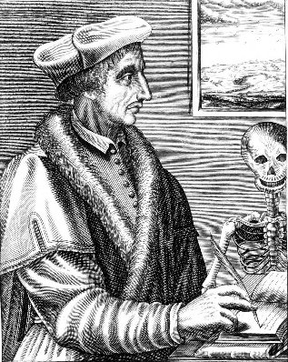
Ionnes Fernelius (1497-1558)
tiré de Kurt Sprengel, Histoire de la Médecine, tome III, chap. II, influence de la philosophie de Ramus, pp. 23-25 ]
- Jean-Baptiste Porta, né, dit-on, en 1550, mort en 1615. Savant fort distingué par la variété de ses connaissances, comme le témoignent de nombreux ouvrages dont aucun n'est à proprement parler alchimique ou chimique. La raison principale pour laquelle nous le plaçons sur cette liste, est l'étude qu'il a faite de ce qu'on a appelé les signatures, genre de connaissance que je rattache au principe des semblables qui depuis Platon a été appliqué à tant de sujets divers. Porta l'a considéré surtout au point de vue de la matière médicale, c'est-à-dire aux analogies de forme, de couleur, de linéaments présentant des dessins, etc., que des corps offraient à la vue; d'après ces ressemblances appelées signatures on tirait des conclusions relatives à l'usage qu'on pouvait faire de ces corps en médecine comme remède ; de là, par exemple, le motif pour lequel la pulmonaire était prescrite aux pulmonaires, d'après les taches de ses feuilles rappelant celles du poumon. [en somme, un ancêtre de l'homéopathie... Porta a écrit aussi sur la préparation des pierres précieuses ; cf. prima materia, Mercure de Nature -]
- André Libavius [1, 2, 3, 4, 5, 6, 7, 8,] (mort en 1616), chimiste distingué. [cf. liqueur fumante de Libavius, à base de chlorure d'étain -]
- Ange Sala (vivait encore en 1633).
- Oswald Crollius, [1, 2, 3,] partisan de Paracelse (mort en 1609).
- Michel Mayer [Maier], auteur d'un grand nombre d'ouvrages (1619). [le nombre d'ouvrages de Maier pose, d'ailleurs, à notre avis, le problème de leur appartenance. L'Atalanta fugiens a-t-elle été écrite par Maier ?]
- Georges Agricola, savant sérieux; son ouvrage sur les mines est une œuvre très remarquable (1494-1555).
- Jean Rey [1, 2, 3, 4, 5,]; il publia son ouvrage le plus remarquable en 1630 sous le titre d'Essais; il y donne une démonstration de la pesanteur de l'air ; il mourut en 1645. [Jean Rey est une figure tout à fait singulière. Dans une autre section, on a vu que Hallopeau se posait la question de savoir si la chimie moderne n'avait pas débuté avec Jean Rey, précurseur direct de Lavoisier et qui même, peut-être, l'avait déjà prévenu. Dans le même temps, Chevreul n'hésite pas à le placer parmi les derniers alchimistes -]
- Robert Flud [sic] (1638). [1, 2, 3, 4,]
- Denys Zachaire vivait en 1556, sous Henri II. Les récits de sa vie sont intéressants et rappellent ceux de Bernard le Trévisan.
- Guillaume Gratarolle [sic], auteur d'un recueil d'écrits alchimiques (1558).
- Gaston de Claves (1590). [1, 2, 3, 4, 5,]
- Bernard-Gabriel Penot, alchimiste. [1, 2, 3, 4, 5,] Il mourut à l'hôpital (1591) et écrivit contre Paracelse.
- Alexandre Séthon, dit le Cosmopolite; il mourut, dit-on, en Pologne en 1603.
- Jean Béguin (1606), auteur d'un traité de chimie estimé.
- Jean-Baptiste van Helmont (1577-1644) [1, 2, 3, 4, 5, 6, 7, 8, 9, 10, 11, 12, 13, 14, 15, 16, 17,]
- Rodolphe Glauber (né en 1604, mort en 1668 ou 1670) ne cessa pas de publier une foule de traités excellents de chimie. [1, 2, 3, 4, 5, 6, 7, 8, 9, 10, 11, 12, 13, 14, 15, 16, 17, 18, 19, 20, 21, 22, 23, 24, ]
Jean Rodolphe Glauber
- Athanase Kircher (1663).
- Herman Conringius.
- Robert Boyle (1668). [1, 2, 3, 4, 5, 6, 7, 8, 9, 10, 11, 12, 13,]
- Nicolas Lefèvre [sic] (1669).
- Olaüs Borrichius, [1, 2, 3, 4, 5, 6, ] historien et alchimiste, réputé adepte (1626 à 1690).
ALCHIMIE AU POINT DE VUE DE LA SANTÉ.
92. Lorsqu'on croyait à l'admirable vertu de la pierre pour transmuer les métaux imparfaits en métaux parfaits, et qu'on pouvait alors, disait-on, éliminer l'impur du pur, une idée bien simple et bien naturelle se présentait à l'esprit : c'était l'existence d'une préparation analogue à la pierre, qui serait capable de chasser du corps humain malade quelque chose d'impur, cause de la maladie ; préparation qui, comme la pierre, pourrait agir encore à la manière d'un ferment capable de transformer une matière impure en matière pure, et perfectionner même le corps humain. Sous ce rapport, l'alchimie était une doctrine du progrès bien plus prononcée, et, pour parler le langage du jour, bien plus accentuée, que celle que j'ai entendu professer, après 1830 : certes ! elle l'était bien davantage, puisque la nouvelle préparation hermétique, non seulement redonnait la santé à l'homme qui l'avait perdue, mais elle pouvait, ajoutait-on, rajeunir la femme en lui rendant la fécondité que l'âge lui avait enlevée. Or je ne sache pas que les professeurs de la théorie du progrès en 1830 aient fait de telles promesses à leurs adhérents.
93. Geber distinguait parfaitement les minéraux, y compris les métaux, d'avec les êtres vivants, la mixtion forte et serrée des premiers et la composition faible, mais bien plus parfaite, des êtres vivants, grâce à l'âme sensible des animaux, et à l'âme végétative des plantes; l'âme mystérieuse, pensait-il, venait ou de la quinte-essence ou du premier agent. Nous n'avons pas la faculté de faire des plantes et des animaux, ni même de les perfectionner, dans l'impossibilité où nous sommes de leur donner l'âme, cause de leur perfection (Bibliothèque des philosophes chimiques, tome I, pages 113 et 114.). C'est parce que les métaux n'ont pas d'âme et que leur perfection dépend de la nature et de la proportion de leurs éléments, de la mixtion même résultant de l'action et de la passion de ses qualités, mixtion qui n'est que l'assemblage des premières qualités, qu'il nous est possible de perfectionner les imparfaits par la transmutation (C'est à la page 115 que Geber emploie le mot quinte-essence.). [on ne s'est pas assez avisé du fait qu'il existait un moyen simple de procurer une âme aux métaux : les faire passer au creuset -] Cette âme mystérieuse, invisible, insaisissable, cause de la perfection de la nature vivante, conduisait naturellement l'esprit de l'alchimiste à donner plus d'importance à ce qui était volatil qu'à ce qui ne l'était pas, et à considérer la sublimation comme une opération d'un ordre supérieur parce qu'elle réduisait un corps en vapeur et qu'elle le purifiait de ce qui était fixe. Mais cette idée, il faut le reconnaître, n'était pas d'accord avec la transmutation, puisque, d'après Geber lui-même, un métal soumis à la transmutation n'était considéré ne l'avoir été avec succès qu'à la condition d'avoir été fixé, c'est-à-dire d'avoir acquis plus de stabilité au point de vue de la volatilité et de sa résistance à l'action que nous considérons aujourd'hui comme émanant des corps énergiques, l'oxygène, entre autres. De cette idée de l'importance de la volatilité faisant retour à la transmutation, on arrivait à une idée contraire, à celle de la fixité dans le métal imparfait transmué en métal parfait, puisque la condition du succès de l'alchimiste était que le métal imparfait transmué eût la fixité du métal parfait, qu'il rougît au feu avant de se fondre, qu'il ne se réduisît pas en fumée par une température prolongée, qu'il ne s'altérât pas, en un mot, et qu'en se fondant, après avoir rougi, il présentât, par des températures croissantes, une couleur bleue, puis une blancheur éblouissante.
94. C'est bien l'opposition de ces deux idées, la volatilité et la fixité, qui conduisit Geber à résumer l'art alchimique en prescrivant d'opérer successivement la volatilisation et la fixation, et de faire dépendre le degré de perfection de la pierre du nombre de fois qu'on la soumettrait à cette double opération.
95. La pensée d'étendre l'idée alchimique à la santé ne s'est assurément manifestée à l'esprit de l'alchimiste que postérieurement à celle de se procurer de l'or au moyen de la pierre philosophale. Mais les idées de Geber que je viens d'exposer relativement à la distinction des minéraux et des êtres vivants, le mot quinte-essence qu'il a prononcé en parlant de l'origine de l'âme (Bibliothèque des philosophes chimiques, tome I, Somme de perfection, page 115.), les idées si raisonnables qu'il a énoncées sur la transmutation des métaux, en distinguant ce qu'il fallait ajouter et ce qu'il fallait en éliminer (69), enfin ce qu'il a dit de la nécessité de chasser l'impur du pur, au moyen d'une préparation appelée pierre philosophale, ont dû conduire des hommes préoccupés des maladies qui accablent l'humanité, et particulièrement les médecins, à chercher des préparations capables de rétablir la santé de ceux qui l'avaient perdue, tout à fait analogues à ce qu'était la pierre philosophale pour se procurer de l'or.
Une fois que des alchimistes, des médecins, se seront engagés à la recherche de remèdes que je désignerai désormais par la dénomination de panacée pour la distinguer de la pierre philosophale destinée à se procurer de l'or, on concevra sans peine l'intimité des deux sortes de recherches, surtout en ne perdant jamais de vue l'inanité des efforts, commune aux deux sortes de recherches. Nous avons vu l'étroite liaison établie entre le volatil, le spirituel (94), la quinte-essence (95), l'âme végétative et l'âme sensitive par Geber, alchimiste pur : nous avons vu, en outre, comment il avait été conduit par la théorie hermétique à vouloir concilier deux choses inconciliables : la volatilité considérée surtout dans les êtres vivants comme quinte-essence, et l'âme même considérée dans les êtres vivants d'une part, et d'une autre part la fixité des métaux parfaits; enfin nous avons vu Geber opposant cette fixité à l'instabilité des métaux imparfaits, susceptibles d'être altérés par tant d'agents dépourvus d'action sur les métaux parfaits ; mais Geber, s'arrêtant à ces idées, n'a point pensé à appliquer l'alchimie à la santé de l'homme. [l'idée à retenir, de tout cela, réside en ce qu'il est facile de donner une âme aux métaux imparfaits qui sont habités par une sorte de spritus corruptus qu'il convient de rectifier. Ce qui se fait par l'opération de la quadratura circula]
96. Je ne sache pas qu'avant Raymond Lulle [1, 2] on se soit occupé sérieusement de la recherche d'une QUINTE-ESSENCE, capable de ramener à la santé un homme attaqué d'une maladie ou d'une affection très-grave. Raymond Lulle, né en 1235, mourut martyr en 1315. On dit qu'à l'âge de 59 ans, en 1294, il fut initié aux mystères de l'alchimie par Arnauld de Villeneuve. Je m'arrête ici pour parler du traité de la quinte-essence composé primitivement de deux livres ; il est en effet le premier ouvrage où il soit question d'une manière spéciale de la quinte-essence eu égard à sa préparation, et surtout à ses diverses sortes relativement à la diversité des matières d'où elle est tirée. Cette diversité est l'origine des préparations dites remèdes spéciaux, auxquels on a donné les noms superbes de panacées, d'arcanes, etc., etc., pour frapper l'attention de tous les hommes qu'une maladie ou une affection spéciale fait recourir à des remèdes dans l'espérance d'y trouver la fin de leurs maux.§ II. RAYMOND LULLE. — 1235 - 1315
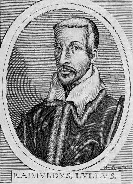
Raymond Lulle, portrait idéalisé
97. Les dernières éditions du traité de la quinte-essence de Raymond Lulle se composent de quatre livres ; les premières ne comprennent que le premier et le deuxième livres qui, communs à toutes les éditions, sont les seuls dont je parlerai. Les idées relatives à l'importance de la volatilité, considérée comme propriété de la matière qui la possède y exprimées par Geber, sont reproduites par Raymond Lulle, mais avec de grands détails, car Geber a écrit le mot, mais sans en développer le sens.
98. A prendre à la lettre les paroles de Raymond Lulle, il se serait aperçu, sinon le premier, mais un des premiers, de la valeur de la quinte-essence, et il y aurait été conduit par des raisonnements déduits de l'admirable vertu de la pierre philosophale. Mais, avant la quinte-essence, il aurait admis l'existence d'une préparation propre à changer les pierres vulgaires en pierres précieuses, [on retrouve là encore cette idée primitive de l'alchimie, et cette idée de quintessence associée dont parle aussi D'Espagnet dans sa Philosophie Naturelle restituée -] et plus tard serait venue la quinte-essence, pour la santé de l'homme ; mais il ne veut pas d'équivoque. Dieu, en chassant Adam du paradis terrestre, à cause de sa curiosité pour connaître l'arbre de vie, et en l'empêchant d'y rentrer désormais par le chérubin armé d'un glaive flamboyant, lui a interdit à toujours l'immortalité. Dès lors Raymond Lulle s'explique de la manière la plus catégorique sur la quinte-essence; incapable de donner l'immortalité, son action est bornée à guérir des maladies, à maintenir la santé, peut-être même à rajeunir, mais un terme a été fixé à la vie de chaque individu ; le moment arrivé, l'homme succombe.
99. Voici comment Raymond Lulle comprend la vertu de la quinte-essence pour assurer la santé de l'homme. Les quatre éléments et les corps qu'ils constituent sont tous impurs, et dès lors altérables et corruptibles : conséquemment, le corps de l'homme, formé des quatre éléments, est altérable et corruptible, et l'altération et la corruption causent la maladie. Introduire dans le corps malade des médecines altérables et corruptibles, pour le guérir, c'est, au contraire, entretenir la maladie, la continuer. Que faire donc ? Introduire une médecine inaltérable, incorruptible, en un mot une quinte-essence. Or Raymond Luile reconnaît cette vertu au produit de la distillation du vin qu'il nomme eau ardant, l'âme, l'esprit du vin, l'eau de VIE ! Effectivement, le vin fortifie ; pris en excès, il enivre; eh bien, l'eau de VIE, séparée de la partie altérable et corruptible du vin, fortifie, et, prise en excès, enivre ; c'est donc en elle que réside la vertu du vin, elle en est donc la QUINTE-ESSENCE. Elle n'a aucune des propriétés des quatre éléments. Mise dans un flacon hermétiquement fermé, elle se conserve indéfiniment : et en outre elle conserve la chair, les poissons qu'on y plonge, etc., etc. Telles sont donc les propriétés caractéristiques d'une quinteessence, selon Raymond Lulle.
100. Mais la quinte-essence, eau DE VIE, est-elle comparable à la pierre philosophale ? est-elle UNE, comme le croyaient la plupart des alchimistes purs? Non, Raymond Lulle, en commençant la préparation de la panacée par la distillation du vin, a eu évidemment l'intention de donner un exemple clair, compréhensible à tous, de l'idée qu'on doit se faire de la quinte-essence, et certes il ne pouvait mieux choisir.
Mais dans le fond de sa pensée la quinte-essence du vin, l'eau de VIE, était une sorte de quinte-essence, et non un principe unique. En fait, il existait autant de quinte-essences spécifiques qu'il est possible de retirer par la distillation de produits volatils analogues à celui qu'on retire du vin. Ces préparations sont l'objet du premier livre, et la distillation du vin précède toutes les autres. Le deuxième livre de la quinte-essence a pour titre : DE APPLICATIONE QUINTAE ESSENTIAE ad corpora humana. Secundus liber huius voluminis, qvi appellatvr de remediis ultimatis generalibus ad commodum corporis nostris, conditus.En un mot, il n'entend pas par quinte-essence un remède unique, mais des remèdes spécifiques compris dans le mot générique QUINTE-ESSENCE. J'insiste sur ce fait, parce qu'il est le point de départ du système des remèdes spécifiques de Paracelse.
§ III - JEAN DE RUPESCISSA. 1357.
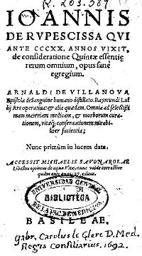
frontispice d'une édition du De consideratione quintae essentie rerum omnium
101. Un cordelier du nom de Rupescissa, noble d'extraction, qui vivait certainement au XIVe siècle, puisqu'on sait qu'il fut mis en prison par ordre du pape Innocent VI, en 1357, publia un traité sur la vertu et propriété de la quinte-essence de toutes choses. Une traduction française, par du Moulin, parut en 1581. Sauf quelques pages du commencement qui ne sont pas la reproduction du traité de Raymond Lulle, le reste de l'ouvrage en reproduit toutes les idées et presque toujours dans les mêmes termes. Je parle des deux livres des premières éditions de Raymond Lulle (97), et je m'étonne de ne pas savoir qu'avant moi on en ait fait la remarque. Je n'ai donc rien à dire du traité de la quinte-essence de J. Rupescissa ; cependant, après avoir reproduit les idées de Raymond Lulle, que tout individu humain est condamné par Dieu à mourir et que la quinte-essence n'a que le pouvoir de le maintenir en bonne santé, ou le guérir des maladies qui peuvent l'atteindre jusqu'au terme que Dieu a fixé à sa vie, il y a un passage relatif à la quinte-essence, que je vais citer (Page la de la traduction. Je recommande au lecteur les pages 12, 13, 14, qui la précèdent.).
« Nous respondons fidellement aux choses susdites (page 12, 13 et 14) : qu'il faut chercher une chose qui soit de telle nature enuers les quatre qualités desquelles nostre corps est composé, comme est le ciel au respect des quatre éléments. Or les philosophes ont appelé le ciel la quinte essence à l'esgard des quatre éléments : car le ciel en soy est incorruptible et immuable : ne receuant point en soy des mutations ou impressions estrangères : si ce n'estoit par le commandement de Dieu : pareillement aussi la chose que nous cherchons, au regard et respect des quatre qualités de nostre corps, c'est la quinte essence, en soy incorruptible, si elle demeuroit éternellement; et n'est point chaude ; ny seiche avec le feu; ny humide ny froide avec l'eau; ny chaude ny humide avec l'air; ny froide ny seiche avec la terre: mais c'est quinte essence, valant aux choses contraires, tout ainsi que le ciel incorruptible ; car, quand il est de besoin, il espanche de la pluye humide, aucunes fois chaude, aucunes fois froide, et autres fois seiche. Telle est la racine de vie, la quinte essence, laquelle le très haut Dieu a créée en nature afin qu'elle puisse ayder aux nécessités du corps, jusques au dernier terme que Dieu a constitué de nostre vie. »
102. Plusieurs motifs m'ont déterminé à reproduire le passage qu'on vient de lire.
Il montre que l'auteur, considérant le corps de l'homme comme formé des quatre éléments, ne prend pas ceux-ci pour des substantifs propres, puisqu'il réduit chacun d'eux à une seule propriété qui le caractérise, chaleur, fraîcheur, humide, sécheresse. En cela, il a partagé l'opinion de plusieurs savants qui ont pris pour guide l'analyse et la synthèse mentales, quand il aurait fallu parler conformément à l'analyse et à la synthèse chimiques. Le mot quinte-essence est attribué au ciel par quelques philosophes, puis par Jean de Rupescissa, philosophes qui regardent la quinte-essence comme un cinquième élément, très-pur, immuable, incorruptible, et différant par là même des quatre éléments qui, dans l'esprit de Rupescissa, sont impurs et corruptibles.[mais, aussi paradoxal que cela paraisse, la quinte essence telle qu'elle doit être comprise par cabale, loin d'être très pure et immuable, représente ce qu'il y a de plus « corrompu » envisagé dans le monde minéral et métallique sous le rapport qui en est reflété dans l'esprit humain. Car les idées de l'homme sur l'or et l'argent ne sont-elles pas, elles aussi, des synthèses mentales ? Et peut-on prétendre que ces idées soient accessibles à « l'analyse chimique » comme Chevreul semble le comprendre ? Seuls deux métaux, l'or et l'argent, ne peuvent accéder à l'état de quinte-essence : ils sont, soit incorruptibles, soit tellement corrompus qu'ils en paraissent purs et immuables. Cela, il faut bien le dire, pose un problème philosophique qui semble avoir été négligé par les critiques et historiens qui se sont penchés sur la philosophie hermétique - Envisagé de ce point de vue, il apparaît d'autant plus remarquable que les deux mouvements primitifs de l'alchimie, l'un chimérique - la transmutation métallique - et l'autre positif - la transformation des pierres communes en pierres précieuses - se soient précocement séparés et que l'un ait supplanté l'autre dans l'esprit des lecteurs des traités de l'Art sacré. Car, n'en doutons pas, les Adeptes ne sont pas responsables de cette ambiguïté de l'interprétation. Non, ce sont les lecteurs eux-mêmes qui, par la synthèse mentale, ont dévoyé les doctrines que professent les Adeptes. Ils en ont tiré la substance mentale qui, au fond, reflétait leur propre esprit, le mercantilisme. C'est la raison pour laquelle, nous avons dit en préambule de nos sections sur l'Idée alchimique, que les textes se défendaient eux-mêmes. Voyez à cet égard l'Hermès Dévoilé de Cyliani... ]
Le dernier motif est que nous verrons bientôt Paracelse se séparer de Rupescissa et de Raymond Lulle relativement aux propriétés des quatre éléments que posséderait, selon lui, la quintessence (106).
§ IV. — PARACELSE. 1493 - 1541.
103. A mesure que nous nous éloignons de Geber et que l'idée alchimique fait des progrès pour tenter la guérison des maladies de l'homme, les idées abstraites occupent plus de place dans les écrits, les idées relatives aux propriétés résultant de la volatilité des corps, de la mobilité et toutes celles qui semblent soustraire la matière à nos sens, en s'adressant surtout à l'imagination, occupent de plus en plus les esprits, et évidemment l'attention des médecins alchimistes, fixée sur les phénomènes de la vie, a une grande influence pour amener ce résultat. L'un d'entre eux, du nom de Paracelse, apparaît ; Suisse de nation, il saisit avec une extrême habileté le parti qu'il peut tirer de son double titre de médecin et d'alchimiste, des circonstances où il se trouve, et voit sans illusion la disposition où se trouvent ses contemporains pour bien accueillir des innovations promettant la richesse et la santé; il voit bien que les germes sont partout et n'attendent que l'homme qui saura les développer... Il sait, comme alchimiste et comme médecin, que Jean Isaac le Hollandais, et Basile Valentin, ont donné au sel une importance qu'il était loin d'avoir avant eux en conséquence des travaux alchimiques opérés par la voie humide ; il sait que l'antimoine a donné des remèdes énergiques à la médecine, et dès lors son plan de novateur en médecine est arrêté. [nous l'avons déjà dit : l'attribution à Paracelse du principe Sel est une erreur à la fois historique et doctrinale. Car Paracelse n'a jamais été alchimiste. Voyez le Trésor de Paracelse à ce sujet -] Ce n'est point à une médecine expectante, ni à la médecine de Galien, qu'il se livrera ; loin de là, il déclarera l'impuissance de celle-ci ; aucune expression ne lui manquera pour la flétrir; il n'épargnera ni l'injure ni le sarcasme à ceux qui la pratiquent ; ce qu'il veut, c'est la médecine héroïque ; elle fixe l'attention des hommes ; quelques succès éclatants, inattendus, ferment la bouche aux mécontents; car l'audace plaît au public, même en médecine ! Paracelse calcule juste, et l'avenir le prouve. Il saisit à merveille ce que le livre des quinte-essences de Raymond Lulle lui offrait d'avantages. Dès son début, il comprit clairement que la quinte-essence ne pouvait être UNE (100) comme la pierre philosophale ; qu'elle ne devait pas être une panacée unique propre à tous les maux,; qu'au contraire, il devait y avoir autant de quinte-essences que les hommes comptent de maux. C'est donc avec un esprit prévoyant et supérieur qu'il distingua pour ses intérêts l'avantage des quinte-essences spécifiques, sur une quinte-essence une, analogue à ce qu'est la pierre philosophale, et le nom de monarque des arcanes qu'il reçut de ses admirateurs prouve qu'il avait calculé juste.
104. Mais le but n'était pas atteint encore : il fallait faire comprendre à tous la grandeur de l'idée qu'il voulait éveiller par le nom de quinte-essence. Il y parvint en exposant à sa manière la distillation du vin déjà pratiquée et décrite par Raymond Lulle (100) et ensuite par Rupescissa (101-102). Il ne se borne pas à l'idée si simple et si frappante qui fait naître les expressions de quinte-essence, d'eau ardant, d'esprit de VIN, d'eau de VIE, données au produit volatil du vin, représentant sous un volume réduit les deux propriétés caractéristiques du liquide fermenté : la force qu'il donne au corps humain quand il est pris en quantité modérée, et l'ivresse quand il est pris en excès. Il recourt à l'opposition, à la comparaison des contraires, au flegme, liquide aqueux qui passe après la quinte-essence, l'esprit de vin; il est insipide, aqueux, sans propriété organoleptique marquée. Le résidu fixe solide du vin reste dans la cucurbite de l'alambic ; il l'appelle caput mortuum, et tous les deux n'ont rien de comparable à l'eau de VIE. Les contrastes sont donc frappants.
105. Paracelse, en homme scientifique, envisage au point de vue le plus général tous les produits d'origine organique qui sont volatils, odorants; en les considérant comme des quinte-essences spécifiques, il en compose des mélanges auxquels il donne les noms d'élixirs, d'arcanes, etc. Les quinte-essences spécifiques qu'il obtient ainsi donnent des flegmes, des caput mortuum, qui viennent se ranger à côté de ceux qu'il a retirés du vin, et enfin, il augmente le nombre des principes immédiats, le soufre, le mercure, le sel, le flegme et le caput mortuum; à cet égard, Paracelse rentre dans le domaine de la science proprement dite.
106. Il y rentre encore, après avoir pris pour une des bases de sa doctrine les quinte-essences qui appartiennent à Raymond Lulle, car Rupescissa les lui a prises sans le citer, en quoi Paracelse l'a imité(Lorsque j'écrivais ces lignes sur les plagiats de Paracelse, et que j'exprimais mon étonnement qu'ils n'eussent pas été relevés, j'avais oublié une critique qu'en avait faite Bernard Penof. L'ayant retrouvée dans la Physique souterraine, je la reproduirai textuellement en parlant de Becher (voyez 174).).
Mais Paracelse a prévenu en partie la critique en n'admettant pas, avec Raymond Lulle et Rupescissa, que les quatre propriétés caractéristiques des éléments, la chaleur, la froidure, l'humidité et la sécheresse, fussent étrangères à la quintessence ; loin de là, elles en font partie essentielle, avance-t-il. Nous avons vu (101) comment Rupescissa avait usé de l'analyse et de la synthèse mentales en séparant les qualités caractéristiques des quatre éléments : chaleur, froidure, humidité et sécheresse, pour en doter la matière du corps humain, et comment, en parlant des quatre éléments du feu, de l'air, de l'eau et de la terre, il les déclare impurs et conséquemment corruptibles. [les Quatre éléments forment, selon la théorie d'Aristote et d'Empédocle, tous les Mixtes possibles. On ne voit pas pourquoi ils seraient impurs...Il s'agit de « briques » fondamentales. Mais c'est le poids relatif de certains d'entre les quatre qui doit déterminer le degré de pureté. Voyez à cet égard le traité du pseudo Valentin : les Choses Naturelles et Supernaturelles - Quant à la quintessence, on a vu que le degré de pureté qu'elle contient varie en fonction des métaux - Ainsi, la quintessence de l'or et de l'argent apparaît-elle, selon le cas, comme nulle ou égale à UN -] Ces opinions justifient donc l'importance que nous attachons à la distinction de l'analyse et de la synthèse CHIMIQUES d'avec l'analyse et la synthèse MENTALES. Ainsi tous les attributs dont l'ensemble constitue chaque élément, SUBSTANTIF PROPRE, disparaissent pour n'en laisser considérer qu'un seul qui en est l'attribut caractéristique pour l'alchimie. Rupescissa considéra la quinte-essence comme une substance pure et dès lors incorruptible. Paracelse use de l'analyse et de la synthèse mentales à l'instar de Rupescissa; mais, d'une manière inverse, il sépare les qualités caractéristiques des quatre éléments pour en doter la quinte-essence. C'est donc une preuve que j'ai eu raison de dire que les alchimistes n'ayant aucune idée exacte de l'analyse et de la synthèse chimiques les confondaient avec l'analyse et la synthèse mentales, lorsqu'ils jugeaient convenables d'ôter à un substantif propre une de ces propriétés pour en doter un autre. La distinction de l'analyse et de la synthèse CHIMIQUES d'avec l'analyse et la synthèse MENTALES est donc capitale dans l'histoire de l'esprit humain.
107. Je crois avoir parlé suffisamment de Paracelse dans ce résumé de l'histoire de la matière, mais, si j'eusse été plus bref, j'ai tout lieu de penser que je n'aurais pu parler de l'influence que ses idées ont certainement exercée sur deux hommes dont l'histoire de la matière ne peut taire les noms : van Helmont d'abord et G.-E. Stahl ensuite.ARTICLE PREMIER. — LE MONDE DE VAN HELMONT.
108. Je ne reproduirai pas ce que j'ai dit ailleurs de van Helmont
(Journal des Savants, 1850, cah. de février, page 74 ; cah. de mars, page 136; Comptes rendus des séances de l'Académie des sciences, année 1864, tome LIX, page 976, année 1868, tome LXVII, page 501, Van Helmont; 1872, tome LXXIV, page 409, Van Helmont; 1876, tome LXXXI, page 307 et 360, théorie de la combustion de Van Helmont; sur son blas et les espèces chimiques et les espèces vivantes.);
il me suffit de renvoyer le lecteur à l'atlas dont cet opuscule est le texte
(Histoire des principales opinions que l'on a eues de la nature chimique des corps de l'espèce chimique et de l'espèce vivante, tableau n° 4, 39e volume des Mémoires de l'Académie des sciences. L'ouvrage que le lecteur a sous les yeux est précisément le texte de l'atlas qui a paru en 1869, texte qui n'a été écrit qu'en 1877; le lecteur peut suivre les pensées publiées en 1869 et se convaincre qu'elles ne sont pas en contradiction avec celles de 1877.).
<>Il y verra l'ensemble des vues de van Helmont dans la planche n° 4. Le caractère fondamental de la doctrine de van Helmont est le spiritualisme porté à un degré auquel personne ne l'a élevé. L'auteur, ai-je dit, n'admet que deux éléments, l'air et Veau, et ces éléments sont passifs. L'air lui-même n'est pas élastique. S'il semble diminuer de volume, c'est qu'il est comprimé par une créature neutre, dit van Helmont, intermédiaire entre la substance et l'accident; il l'appelle magnale. Si celui-ci cesse de presser, l'air se dilate. L'être actif est donc le magnale et non l'air. [le magnale définit, en somme, la pression atmosphérique et peut être considéré comme le lointain ancêtre de la loi d'Avogadro] Il y a simple conjonction entre les deux êtres, et non combinaison.
109. L'eau, comme l'air, est passive et incompressible sous la pression d'une force qui agit de l'extérieur sur elle ; mais, matière pesante de toutes les espèces chimiques, elle présente les propriétés que nous reconnaissons, que nous opposons à tous les substantifs propres physiques quand nous les distinguons les uns des autres, alors qu'elle n'est pas combinée, mais conjointe avec un principe-esprit, appelé par van Helmont archée. Ce principe-esprit étant la cause de la diversité des espèces chimiques, c'est dire qu'il existe autant d'espèces d'archées que l'on compte d'espèces chimiques.
110. Si je n'avais pas autant écrit sur van Helmont, comme tout lecteur curieux de connaître les détails de ses doctrines en recourant aux sources principales que j'ai indiquées dans la note de l'alinéa 108 pourra s'en convaincre, je me serais cru obligé d'en exposer l'ensemble, mais en le faisant je m'écarterais évidemment du but de cet ouvrage dont l'objet essentiel est un résumé de l'histoire des opinions principales dont la matière proprement dite a été l'objet. Il me suffira, après avoir rappelé que van Helmont n'admet que deux éléments, l'eau et Vair, de dire qu'avec ses idées absolues il n'admet pas la combinaison, même entre l'eau et l'air, qu'il ne reconnaît que des conjonctions à l'égard de ces deux éléments de l'air avec le MAGNALE, et de l'eau avec des principes-esprits appelés ARCHÉES doués de l'activité et d'une sorte de conscience des actes qu'ils doivent exécuter. Ce qui me reste à faire, c'est de lier les QUATRE CATÉGORIES d'êtres que je qualifie d'IMPONDÉRABLES avec les DEUX CATÉGORIES de CORPS dits aujourd'hui PONDÉRABLES, celle des éléments, l'air et l'eau, et celle des productions séminales, comprenant les minéraux, les végétaux, les animaux et les gaz, qui ne sont que de l'eau avec un reste d'archée, êtres tout à fait différents par leur constitution de l'air qui, je le répète, est un élément, impuissant à s'unir à quoi que ce soit, sinon à cet être que van Helmont appelle magnale. La pesanteur de l'air était-elle connue ou inconnue de van Helmont ? je ne puis l'affirmer; quoi qu'il en soit, l'ouvrage de J. Rey où cette propriété de l'air est démontrée avait paru quinze ans avant sa mort.111. Que le lecteur jette les yeux sur le tableau n° 4 de l'atlas, il verra la disposition des SIX CATÉGORIES d'êtres que je viens de rappeler. Les êtres impondérables des quatre premières catégories sont en caractères rouges, et les êtres pondérables, pesants, les seuls matériels des six catégories, sont en caractères noirs.
Quatre catégories, sur six, consacrées aux êtres et aux choses qui sont du domaine de l'esprit, témoignent de la supériorité que van Helmont attribue à l'esprit sur la matière.- A la 1ère catégorie appartient la substance absolue, l'âme immortelle.
- A la 2ème catégorie, les accidents habitant dans les êtres, ce
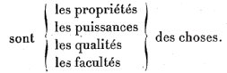
Le mot accidents donné aux propriétés, etc., des choses montre encore l'importance que van Helmont attache à l'être relativement à ses attributs; carie mot accidents donné aux attributs que l'être peut avoir ou ne pas avoir montre l'importance qu'il attache à l'être. Or, dans ma manière de voir, je ne puis connaître l'être, le substantif propre, que par ses attributs, conséquence absolue de la méthode A POSTERIORI expérimentale telle que je la définis.
- A la 3ème catégorie appartiennent des êtres neutres, intermédiaires entre la substance et l'accident; ils ont l'être des organes et des propriétés ; tels sont-- la puissance vitale de l'âme des plantes,
-- l'âme sensitive des animaux et de l'homme,
-- le magnale, la cause de l'élasticité de l'air,
-- le feu et la lumière,
-- le ferment immortel,
-- le lieu.112. Le spiritualisme apparaît au plus haut degré dans l'âme que van Helmont reconnaît aux plantes, aussi bien que dans la faculté végétative qu'Aristote leur reconnaît. Il en est de même de l'âme sensitive qu'il reconnaît à l'homme et aux animaux ; c'est l'âme sensitive de l'homme qui souffre des maladies, c'est elle qui subit l'action des remèdes, enfin c'est sur elle encore que s'exerce l'influence des astres. Quant à l'âme immortelle, il ne la reconnaît qu'à l'homme seul. Ajoutons qu'il admet l'âme immortelle dans tous les individus de l'espèce humaine.
113. Si le magnale est tout à fait étranger au spiritualisme proprement dit eu égard à l'homme, il témoigne combien van Helmont est prévenu contre la matière en lui refusant toute sorte de force. Ainsi l'air, l'exemple le plus frappant qu'on puisse citer pour donner une idée de l'élasticité parfaite, serait, comme je l'ai déjà dit, pour van Helmont dénué de cette propriété ; celle-ci ne serait, selon lui, qu'apparente ; la véritable cause résiderait dans le magnale. Ajoutons que van Helmont, sans tomber dans l'astrologie judiciaire, reconnaît l'influence du ciel sur les objets terrestres, et cette influence, qu'il appelle blas, s'exerce avec d'autant plus d'efficacité que le magnale, en comprimant davantage l'air, ouvre une voie plus large pour que le blas agisse sur la terre.
114. Le feu comprend la chaleur et la lumière, Dieu le donne à l'homme pour ses besoins comme le magnale : créature neutre, n'étant ni substance, ni accident, le feu se place entre ces derniers. Il n'est pas matière, car il pénètre les corps de toutes parts, et l'on sait que deux matières ne peuvent occuper le même lieu ; or le fer rouge a toutes les propriétés du feu, car il est brûlant et lumineux. Or le feu éclaire, il échauffe, il sèche, il détruit toutes les semences. Il n'a pas besoin d'aliment, opinion que nous verrons tout à fait opposée à celle de Becher (184).
115. Le ferment immortel joue un grand rôle dans la doctrine de van Helmont. J'en reparlerai bientôt en traitant de la 4ème catégorie.
116. Le lieu. Je ne sache pas que van Helmont ait attaché une importance au lieu comparable à celle que lui a attribuée Platon.
117. La 4ème catégorie comprend les principes esprits au
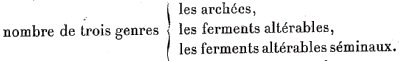
Van Helmont considère comme synonymes les expressions archée, agent séminal, esprit séminal. Loin d'admettre, avec Aristote, que la forme soit une cause, il la considère comme un simple effet, dont la cause est une archée; car c'est cette archée qui donne à l'eau à laquelle elle se conjoint la forme que doit avoir l'espèce de corps résultant de la conjonction. En définitive, l'archée représente le principe dynamique, et l'eau à laquelle elle est unie le principe absolument passif de la conjonction. C'est donc le premier principe, l'archée, qui est la cause de toutes les propriétés que présentent la conjonction, dont elle (l'archée) est partie constituante. [ces questions d'archée et de blas pourraient paraître oiseuses. Il n'en est rien. Elles déterminent les qualités élémentaires que les alchimistes attribuaient à leurs substances. L'archée, par exemple, peut être défini comme le médiateur entre l'Eau et la Terre ; quant au blas, on pourrait y voir le sens de la correspondance entre les planètes et les métaux ; mais l'allusion est plus furtive - ]
118. Mais, pour être clair et compréhensible dans un résumé aussi bref que celui que j'écris, il faut parler des archées relativement à leurs diversités spécifiques, puis revenir sur le ferment immortel, qui appartient aux créatures neutres de la 3ème catégorie, et, après en avoir parlé au point de vue général, en parler au point de vue de la diversité, et finir ensuite par l'examen des ferments altérables de la 4ème catégorie.
ARTICLE PREMIER. — LE MONDE DE VAN HELMONT

119. Faire l'histoire des archées serait écrire l'histoire de toutes les espèces de minéraux, de plantes et d'animaux que l'on connaît, et j'ajoute de toutes les espèces chimiques qui constituent un corps et qu'on peut considérer comme en étant les principes immédiats. Dans l'impossibilité de le faire, je me bornerai à dire quelque chose des archées de l'homme et des animaux, des plantes et des minéraux d'après van Helmont.
- Les archées de l'homme et des animaux sont lumineuses.
- Les archées des plantes ont la forme d'un liquide ou d'un suc.
- Les archées des minéraux, moins mobiles que les précédentes, se rapprochent de l'état solide. Cependant van Helmont ne pense pas que ces archées des plantes et des animaux ne puissent pas être quelquefois lumineuses.L'influence de l'opinion si générale d'après laquelle on reconnaît quelque chose de plus élevé à ce qui est raréfié qu'à ce qui est solide, à ce qui est mobile qu'à ce qui est fixe, a agi évidemment sur l'esprit de van Helmont dans cette manière d'envisager les attributs des archées ; et ces distinctions s'accordent encore avec ce que nous avons dit de la distinction des quatre éléments correspondant chacun à un des quatre états de l'agrégation de la matière, y compris l'état impondérable. L'archée qui se trouve dans la semence d'un animal travaille à préparer la matière à recevoir les formes du corps auxquels cette semence donnera naissance. Elle établit un lieutenant-archée dans chaque partie de l'être, afin de veiller incessamment au développement de cette partie. En définitive, cette idée de van Helmont est identique à celle d'Anstote rapportée plus haut, où le grand philosophe explique comment la permanence des formes organiques est conservée par la génération. — Je dirai plus loin comment le rapprochement que je fais maintenant s'accorde avec l'interprétation que je donne des sources où van Helmont a puisé les idées qui l'ont conduit, je ne dis pas à son système, mais à son hypothèse du monde, représentée par le tableau de l'atlas n° 4.
Du ferment immortel de la 3ème catégorie.
- a) Au point de vue général.
- b) Au point de vue de ses espèces.- a) Au point de vue général.
120. Le ferment immortel est un genre qui comprend autant d'espèces de ferments qu'il existe d'espèces d'archées à l'état abstrait. Le ferment considéré comme principe, est répandu dans les lieux où Dieu a voulu qu'il y eût des semences propres à développer des corps ; il affecte la forme lumineuse. Principe dynamique comme l'archée, il lui est supérieur en puissance. Effectivement :
- D'abord, il agit extérieurement sur une semence pourvue de son archée. C'est lui qui, l'éveillant pour ainsi dire, l'excite à l'action dont Dieu l'a chargé pour rendre la semence susceptible de se développer avec la forme spécifique que l'archée doit maintenir.
- Ensuite, sa puissance est telle qu'en présence de l'eau, matière de tout corps, il peut engendrer la semence à laquelle il correspond; c'est en cela surtout que sa puissance est bien supérieure à celle de l'archée.Si l'on ne peut nier que van Helmont ait puisé l'idée de son ferment dans l'idée de puissance que les alchimistes attribuaient à leur pierre philosophais, il lui a donné une grande extension, puisque le ferment, dans la pensée des derniers alchimistes, devait contenir de l'or ou de l'argent pour être efficace ; or, suivant eux, cette efficacité tenait à l'âme que l'alchimiste communiquait à la pierre. Or, van Helmont faisait résider la cause de la vie dans une archée qui tenait elle-même son activité d'un principe dynamique dépourvu de toute partie matérielle. [rappelons que selon notre hypothèse, l'Âme est le principe tingeant de la pierre et qu'elle est en quantité beaucoup plus réduite que le Corps -]
- b) Ferment immortel au point de vue de la pluralité.
121. Van Helmont admet autant d'espèces de ferments immortels qu'il existe d'archées spécifiques. Celles-ci ont leur siège dans les espèces de corps qu'elles constituent, tandis que les ferments immortels appartiennent au monde extérieur.
Chaque espèce de corps a une semence pourvue de son archée spécifique capable de propager cette espèce de corps sous l'influence de l'action excitante du ferment qui y correspond. Une application de l'action des ferments spécifiques faite par van Helmont explique très-bien sa pensée ou plutôt son hypothèse.
- Une contrée est fertile parce que Dieu y a mis les ferments spécifiques qui correspondent aux semences des plantes que l'homme y cultive.
- Une contrée est stérile au contraire où Dieu n'a pas répandu les ferments correspondants aux semences que l'homme voudrait y cultiver. Van Helmont étend cette vue à certains pays eu égard non plus a des semences de plantes, mais à des insectes et même à des minéraux.Ferments altérables de la 4ème catégorie.
122. Si van Helmont accorde à un ferment immortel de produire avec de l'eau la semence qui correspond à ce ferment, il refuse au produit, si j'ai bien compris sa pensée, de donner lieu à des ferments inaltérables. Je cite un exemple : l'homme et la femme imposent un ferment, et la semence donnera lieu à un enfant. Eh bien, ce ferment est détruit après avoir satisfait à l'acte pour lequel il avait été produit. [de même, dans la préparation de la Pierre, le Mercure est promis à disparaître pour laisser place à plus jeune que lui. C'est ce que Jung appelait le Mercurius senex -]
123. Paracelse a désigné sous le nom de leffas une vapeur chaude qui, s'exhalant de la terre, est capable de faire croître des herbes et des plantes. Et van Helmont le considère comme un ferment doué de la faculté de déterminer la germination de toutes les plantes dépourvues de semences visibles. Le leffas, devenu visible sous la forme d'une fumée, se condense, passe du jaune au vert et se transforme en diverses plantes. Il peut arriver que le leffas, en se condensant en certains lieux, se couvre d'une peau produite par des ferments qui s'y trouvaient à l'état latent.
124. Les ferments altérables ne sont pas les seuls ; van Helmont en signale d'autres que je désignerai par l'expression de ferments-odeurs, trop extraordinaires pour ne pas en parler, car, au point de vue de l'histoire, il est nécessaire que l'on sache comment un homme qui a nom van Helmont a conçu l'art d'interroger la nature par l'expérience.[...] cf. section Chevreul, critique de Hoefer, II où est reproduit le passage non cité, Journal des Savants, 1850, p. 115 -
125. Si van Helmont se refuse à admettre, avec les partisans de l'horoscopie, l'influence des astres sur la science, la profession, la fortune des hommes, il ne regarde pas comme impossible que Dieu ne soit point opposé à ce que les étoiles soient signes et présages des choses contingentes, dans le cas où leurs indications ne sont point de simples menaces; chaque homme, chaque ville, chaque province, chaque royaume peut avoir son étoile. Les faits concernant les révolutions des temps, des jours, des années, sont du ressort des planètes et du soleil. Les événements, les tragédies de la vie humaine , le sont des étoiles fixes. [André Barbault poursuit cette tradition avec ses recherches en Astrologie mondiale -]
126. Maintenant, comment les rapports s'établissent-ils entre le ciel et la terre?
C'est au moyen du blas, dont nous avons parlé en traitant du magnale; plus celui-ci présente de vide, et plus la communication est facile et l'action du ciel efficace ; c'est par le blas que le ciel agit sur l'état météorologique de la terre, et par le blas que l'action du ciel se manifeste sur l'homme, qui a lui-même un blas intérieur. Enfin, van Helmont reconnaît aux valétudinaires la faculté de prédire les changements de temps.
- Le soleil avance le développement des semences.
- La lune, au contraire, s'oppose à ce développement ; elle altère les puissances séminales, elle amène la décomposition des cadavres, et convertît les eaux en leffas.
127. Enfin, van Helmont reconnaît aux diables le pouvoir de prédire l'avenir; les anges doivent cette faculté à Dieu, qui l'accorde encore à quelques hommes.ARTICLE SECOND — ORIGINE DES IDÉES DE VAN HELMONT SUR LE MONDE.
128. Longtemps je me suis demandé à quelle source van Helmont avait puisé les idées qui le conduisirent à imaginer un monde si différent de celui que nous connaissons ; et comment, en n'admettant que deux éléments, l'eau et l'air, il leur refusait toute propriété active; car l'air même, prétendait-il, manquait d'élasticité spontanée. Mes dernières recherches sur l'histoire des connaissances chimiques et sur l'alchimie, et mes études des opinions professées par les philosophes grecs, atomistes et académiciens, m'ont fait mieux comprendre les traités des quintes essences de Raymond Lulle et de Jean Rupescissa, ainsi que leur influence sur les doctrines de Paracelse; et l'ensemble de ces études, en m'ouvrant les yeux, m'a montré l'origine des opinions de van Helmont.
129. Ce qui m'a d'abord frappé, dans mes lectures relatives aux philosophes grecs qui ont traité de la matière, a été de voir comment les atomistes, adoptant la discontinuité de la matière, ont été conduits à admettre la réalité du vide, et comment les académiciens et les péripatéticiens, adoptant la continuité des parties de cette même matière et le plein, c'est-à-dire des opinions diamétralement opposées, se sont accordés cependant sur l'éternité de la matière. Mais ce qui m'a donné beaucoup à penser, c'est l'analogie des opinions, quand ce n'est pas l'identité, lorsqu'il s'est agi de la cause du mouvement. Ainsi, qu'est-ce que le chaos ? C'est la matière sans le mouvement, a dit Anaxagoras; c'est la matière avec le mouvement désordonné, a dit Platon, Qu'est l'arbre sans le mouvement ? Du bois mort. Qu'est l'animal sans le mouvement ? C'est le cadavre. [ces réflexions permettent de se faire une idée de ce que les alchimistes recouvrent par l'opération de l'animation du Mercure -]
130. Mais qui donne le mouvement à ce caillou, qui n'est pas vivant comme le sont le végétal et l'animal ? Qui le donne à l'arbre mort et au cadavre de tout animal qui a vécu, et qui ne se meut plus spontanément ? Comme le caillou, tous ont besoin d'une force du dehors pour changer de place ou de position s'il s'agit de quelques-unes de leurs parties seulement. Les atomistes répondent : Chaque atome a en lui une force motrice, et, comme ils ne connaissent que des forces mécaniques et le feu, ils ne vont pas au-delà de dire qu'il existe des atomes sphériques à surface polie obéissant à la moindre force et des atomes crochus qui, grâce à leur forme, s'accrochent les uns aux autres pour constituer des molécules. Les premiers atomes représenteront l'air et surtout le feu, tandis que les autres, l'eau et surtout la terre. Pour l'atomiste, chaque atome devait donc avoir une force motrice qui lui était inhérente.
131. Si van Helmont paraît avoir eu du penchant à admettre la structure atomique de la matière, conformément à l'opinion de Démocrite, etc., incontestablement son genre d'esprit a été sympathique aux idées spéculatives de Platon et d'Aristote les plus élevées concernant l'organisation du monde : car l'homme qui, contrairement à l'observation immédiate, a admis la passivité de l'air, et qui avec Thalès a dit :« Tous les corps sont formés d'eau, »
<>et qui, pour en expliquer l'immense variété, recourut d'abord à des CRÉATURES NEUTRES telles que le magnale, le feu et la lumière, le ferment immortel, et ensuite à des PRINCIPES ESPRITS, archées et ferments altérables, a dépassé toutes les limites des hypothèses spiritualistes, et, lecteur, ne confondez pas ces hypothèses avec les idées spiritualistes.
132. Revenons à Platon et à Aristote, dont on a parlé dans la première Époque du Résumé de l'histoire de la matière; revenons-y, afin d'examiner l'influence qu'ils peuvent avoir exercée sur les opinions de van Helmont. S'il y a quelque chose de vrai dans l'opinion commune d'après laquelle Platon est considéré comme plus spiritualiste qu'Aristote, et cela parce que la part de la métaphysique proprement dite est plus grande dans son œuvre qu'elle ne l'est dans celle d'Aristote, eu égard aux sujets de chaque œuvre qui sont en dehors de la métaphysique, ce serait une erreur d'en conclure qu'Aristote serait plus près que Platon du matérialisme telle que cette expression est comprise de nos jours.
133. Que le fondateur de l'Académie se soit plus occupé de Dieu que le fondateur du Lycée, et que les attributs de sagesse, de justice et de bonté reconnus par Platon l'aient conduit à faire de la Divinité une Providence, et répondent mieux que le Dieu d'Aristote à l'idée que nous nous faisons de l'Être suprême doué de la science et de la puissance absolues, je ne le contesterai pas; mais j'affirmerai qu'on ne trouvera pas plus dans les écrits d'Aristote que dans ceux de Platon des propositions favorables au matérialisme. [on peut dire que l'Idée alchimique est plus en rapport avec les concepts platoniciens qu'aristotéliciens -]
134. Est-il possible de dire qu'Aristote n'a pas été aussi frappé que Platon de l'impossibilité d'expliquer le mouvement dans le monde sans recourir à une substance autre que celle qui constitue les quatre formes sous lesquelles apparaît la matière perceptible aux sens de l'homme ? L'un de ces grands esprits a-t-il montré sur cette question une conviction moindre que l'autre ? Évidemment non. Tous les deux admettent l'éternité de la matière, reconnaissent pour cause de l'organisation sous laquelle nous l'observons l'intervention de Dieu ; il y a plus, des agents intermédiaires entre la Divinité et les êtres perceptibles à nos sens. [mais il est possible que le concept de quintessence soit plus en accord avec les idées défendues par Platon que par Aristote -]
135. N'est-ce pas la profonde conviction de la nécessité de l'existence d'un pouvoir suprême qui a inspiré au génie d'Aristote les quatre natures définies comme il l'a fait dans les êtres perceptibles à nos sens (50 C)? En réfléchissant aux progrès de la science et en se reportant au temps d'Aristote, était-il donné à cet esprit, si profondément observateur et analyste, si pénétrant, avec l'idée dominante d'une matière simple, de ne pas recourir à la forme qui se présentait comme cause immédiate de la différence des êtres perceptibles aux sens de l'homme ? La troisième nature, en laquelle résidait une première cause de mouvement, douée encore de la faculté de resserrer l'union de la matière avec la forme, était encore une condition d'assurer l'existence de l'être. Mais le déiste, en imaginant la quatrième nature, mettait le comble à son œuvre en se montrant alors l'élève fidèle du fondateur de l'Académie, son maître, car cette quatrième nature veillait sans cesse à ce que l'être, dont elle était partie intégrante, conservât les facultés que le grand organisateur du monde lui avait données comme partie d'un ensemble harmonieux dont le but était le BON !
136. Quelle que soit l'opinion que l'on ait sur le sujet que je viens de traiter, je ne puis considérer comme superflue la revue des idées précédentes, avant de revenir à van Helmont; car les esprits désireux d'approfondir l'étude d'un objet quelconque savent combien peut être erroné ce principe d'après lequel beaucoup de gens déclarent comme non existant ce qu'ils ne comprennent pas, surtout quand il s'agit de choses ressortissant de la région la plus élevée de la raison humaine. Voyez donc quelles réflexions suggère l'inanité des efforts des Pythagore, des Démocrite, des Platon, des Aristote pour traiter les questions qu'ils ont abordées ! et prononcez si nous sommes plus qu'eux en mesure de les traiter aujourd'hui, avec quelque chance de succès, après les immenses progrès des sciences depuis Galilée, et alors que nous connaissons la science des actions moléculaires au contact apparent, absolument ignorées de ces grands esprits , alors que nous connaissons les sciences de l'électricité et du magnétisme, dont la connaissance qu'ils en avaient se réduisait à deux faits : l'attraction du fer par l'aimant, et celle des corps légers par l'ambre jaune frotté ! Évitons les déceptions, dont les inconvénients sont le découragement; et pour cela profitons du secours de la méthode A POSTERIORI expérimentale, qui assure sans cesse notre marche en nous faisant distinguer le vrai du faux lorsque notre confiance en elle est égale à sa puissance ! En définitive, si les atomistes crurent suffisant, pour se rendre compte des phénomènes du monde, d'admettre une force motrice dans chaque atome, tandis que les académiciens et les péripatéticiens, plus disposés à se laisser aller à l'abstraction morale, scientifique, et, pour être vrai, imaginative, s'occupèrent davantage de l'entendement, de l'âme, de l'intelligence, des idées, en un mot, de ce que nous comprenons dans le mot de psychologie; si en outre ils admettaient l'union intime de l'âme avec la matière, ils étaient loin de confondre l'une avec l'autre, de nier l'existence de la première, en définitive, d'être matérialistes dans le sens moderne du mot. Les philosophes de la Grèce, tout en reconnaissant l'éternité de la matière, étaient loin de nier l'existence d'une puissance divine, l'existence de Dieu !
137. On ne peut bien connaître van Helmont et s'expliquer son système d'idées (Voir le tableau n° 4 de l'Atlas.) qu'en se pénétrant bien des deux dispositions prédominantes de son esprit :- 1° Sa disposition à adopter des idées nouvelles, et son éloignement des idées anciennes, soit en médecine, soit en toute autre chose donnée en maître avec la parole absolue de l'école ;
- 2° Sa disposition au spiritualisme religieux. Mais, quoique catholique ardent, disant sans hésitation que la création du monde avait duré sept jours, et non six; comme on le lit dans la Genèse. Eh ! pourquoi ? C'est que, n'admettant dans la nature que deux éléments, l'eau et l'air, ces éléments avaient dû être créés au premier jour, avant tout autre corps.N'oublions pas que van Helmont admettait, en principe, que ces deux éléments, l'eau et l'air, étaient privés de toute activité, et que l'air, type de l'élasticité, devait cette propriété au magnale, et n'était pas susceptible de s'unir avec l'eau, tandis que celle-ci, affectait toutes les formes de la matière perceptible à nos sens, une fois conjointe aux diverses archées auxquelles elle peuvait s'unir.
138. Comment van Helmont a-t-il été conduit à un système spiritualiste dont la science ne peut rien citer de comparable comme expression extrême de la méthode à priori ? Je ne crois pas me tromper en interprétant ainsi ses raisonnements. Il s'est dit : Les Grecs ont admis des causes motrices, des forces spirituelles dans tout ce qui est animé ; mais, dans les idées du plus grand nombre, ces causes, ces forces étaient inhérentes à la matière, quoique Pythagore et Platon aient paru admettre la métempsycose, et dès lors la séparation de l'âme de sa partie matérielle, et qu'il ait semblé vraisemblable à Aristote, au dire de Colonna, que l'âme enveloppait le corps humain plutôt qu'elle résidât dans l'intérieur du corps même, et cela parce que, la mort survenant, il lui semblait plus vraisemblable que l'âme se séparât de l'extérieur au lieu de l'intérieur du corps. Quoi qu'il en soit, ce n'est que depuis le christianisme (je ne parle pas du bouddhisme) que la distinction de l'âme d'avec la matière est devenue commune et qu'on a reconnu une âme spéciale à chaque individu de l'espèce humaine. Van Helmont s'est dit encore :Les Grecs ont admis l'union des causes motrices et des forces spirituelles intimement unies à la matière : Les chrétiens sont unanimes à distinguer les premières de la seconde ; eh bien, avec les Grecs, je considérerai la matière, isolée de la partie spirituelle, comme absolument inerte, et je ferai résider les forces motrices et spirituelles dans des principes archées qui seront conjoints à l'eau pour ce que les modernes qualifient d'espèces chimiques, lesquelles, ayant toutes l'eau pour principe matériel commun, seront distinguées les unes des autres par la nature de leurs archées respectives. Les espèces d'animaux et les espèces de plantes se distingueront entre elles par leurs archées. Chaque espèce aura une archée spécifique et des lieutenants archées pour chaque partie de l'espèce ; c'est ainsi que la forme de l'espèce sera maintenue dans l'espace et dans le temps.
C'était à Paracelse que van Helmont avait emprunté le mot archée. [on peut dire, en toute logique, que l'équivalent moderne de l'archée est le code génétique -]
139. Enfin les ferments mettaient le comble à l'édifice du spiritualisme élevé par van Helmont. On peut remarquer maintenant que la pensée du ferment était parfaitement d'accord avec Aristote pour assurer la conservation des formes spécifiques, puisque, à chaque archée spécifique intimement conjointe avec l'eau, correspondait un ferment
spécifique agissant de l'extérieur sur ce liquide avec une puissance dont l'intensité pouvait aller jusqu'à produire l'archée de son espèce. Il y avait là quelque chose d'analogue à ce qu'Aristote attribuait à l'entéléchie, qui, à son sens, maintenait la forme de chaque espèce, correspondant au germe destiné à la propager dans l'espace et dans le temps. [voir à ce sujet la Philosophie Naturelle restituée de D'Espagnet -]TROIS SAVANTS DU XVIIe SIÈCLE QUI TRAVAILLÈRENT AUX PROGRÈS DE LA CHIMIE.
§ I — JEAN-RODOLPHE GLAUBER. 1604-1668.
140. De tous les savants dont nous avons examiné l'oeuvre jusqu'ici, aucun ne peut être comparé à Glauber, eu égard aux faits dont il a enrichi la science. Sans doute il croyait à l'influence des astres sur la production des métaux terrestres. Il a parlé d'une âme de l'or et de quatre-vingt-dix-neuf centièmes au moins de ses parties grossières. Certainement il ne doutait pas de la puissance de l'alchimie, mais il est vrai aussi qu'il n'a jamais perdu son temps en se livrant à des opérations hermétiques. De 1648 jusqu'à l'année de sa mort, il se livra à de nombreuses publications dans la plupart desquelles on trouve des choses nouvelles et presque toujours utiles. Il décrit un nombre considérable de procédés variés et d'appareils utiles. On lui doit le procédé de chauffer l'eau par circulation, les bains de vapeur, la carbonisation du bois en vase clos, et le moyen de recueillir les produits volatils qui s'en dégagent et se condensent en liquides connus aujourd'hui sous la dénomination d'acide acétique empyreumatique ou pyroligneux. Il prescrit l'eau sucrée d'acide chlorhydrique comme limonade ; il recommande l'eau d'acide chlorhydrique pour attendrir les viandes et conserver les légumes. Il savait qu'en acidulant légèrement l'eau embarquée pour les voyages de long cours, on en prévient la corruption produite par la réaction de la matière organique soluble du bois de chêne des tonneaux sur les sulfates que les eaux peuvent contenir. Glauber décrit la préparation d'un grand nombre de chlorures sous la dénomination d'huiles métalliques. Il fait connaître la préparation du chlorure d'antimoine en distillant le sulfure de ce métal avec le sublimé corrosif, et explique bien la réaction des corps mélangés. Il savait préparer l'acide sulfurique, l'acide sulfureux. Il retira de l'eau minérale de Neustadt, près de Vienne, le sulfate de soude à l'état de beaux cristaux hydratés qu'on nomma sel admirable de Glauber. Il reconnut l'identité de ces cristaux avec le résidu de la distillation du sel marin mêlé à l'acide sulfurique. [ce sel est congénère de celui qui est utilisé dans les synthèses cristallines, le tartre vitriolé -]
141. Glauber publia un livre composé de six parties sur la prospérité de l'Allemagne. Il parle des avantages que le pays retirerait de la conversion du plomb en céruse, celle du cuivre en vert de Venise, de la fabrication du verre avec le sable et l'alcali des cendres, etc., etc. Il parle encore des avantages des nitrières artificielles ; il pensait qu'un peu de nitre, ajouté à une terre convenablement préparée, agissait comme ferment pour augmenter la quantité du salpêtre en peu de temps. Il conseille de faire usage de l'extrait concentré du jus de raisin en l'ajoutant au moût dans les années où le raisin manque de matière sucrée. Pour plus de détails, je renverrai le lecteur au Journal des Savants de 1850, page 298, où j'ai parlé de Glauber. [nous donnerons peut-être des extraits des Livres sur les fourneaux de Glauber ; le 4ème donne des détails très intéressants sur la conception que se faisait Glauber des métaux et de l'alchimie -]
§ II — ROBERT BOYLE. 1626-1691.
142. Le nom de Robert Boyle, un des partisans de la malheureuse famille des Stuarts, fils de Richard, comte de Gork et d'Orrery, ne peut être omis dans ce résumé : car le savant illustre qui le porta fut un des premiers qui protestèrent par des raisons puisées dans les sciences expérimentales contre les chimères de l'alchimie : protestation d'autant plus remarquable et plus forte qu'elle compose un livre intitulé le Chimiste sceptique, ouvrage digne de fixer l'attention par les vérités qu'on y trouve; mais le temps n'a pas confirmé toutes les propositions qui y sont énoncées.
Robert Boyle s'élève contre la théorie des quatre éléments, et encore contre l'opinion des alchimistes qui reconnaissent le soufre, le mercure et l'arsenic ou le sel comme les principes immédiats des métaux. Il repousse encore les idées de van Helmont, de ses archées et de ce que, suivant lui, il n'existerait que deux éléments matériels, l'air et l'eau. Robert Boyle pense que, probablement, il existe plus de quatre éléments dans la nature, et qu'il en est de volatils qui se dégagent sous l'influence du feu par les joints des vaisseaux. Il est porté à croire que les quatre éléments sont complexes; si l'eau était simple, il ne comprendrait pas comment les matières végétales (principes immédiats) seraient si variées dans leurs propriétés, réflexion d'une parfaite justesse.
143. Robert Boyle était partisan de l'hypothèse atomique ; il croyait encore que les atomes, les molécules, les corpuscules à l'état de repos ou à l'état de mouvement devaient présenter des phénomènes fort différents.
144. II avait distingué la combinaison du mélange, d'une manière bien plus précise que ne l'avaient fait les alchimistes. On peut juger d'après cela combien le Chimiste sceptique de Robert Boyle présente d'intérêt, et cependant je ne suis point entré dans des détails dont un grand nombre se font remarquer sous plusieurs rapports.
145. Mais le temps n'a pas confirmé toutes les propositions qu'il a avancées. Par exemple, il savait que certains métaux augmentent de poids par la calcination ; mais il n'en connaissait pas la véritable cause, qui est la fixation du gaz oxygène atmosphérique par affinité chimique pour le métal. Il ne l'attribuait même pas à l'union de l'air atmosphérique, comme l'avait dit Jean Rey dès 1630. Robert Boyle expliquait le fait par la fixation du feu qui, pénétrant dans tous les vaisseaux portés au rouge, s'unissait au métal, erreur démontrée, puisque aucun métal porté au rouge dans le vide ou dans un milieu dépourvu d'oxygène n'augmente de poids.
146. Robert Boyle avait une idée juste de la combinaison chimique, en d'autres termes, d'un fait absolu bien défini par la science. Il cessait d'être vrai lorsqu'il s'agissait de l'interprétation du fait (absolu) en l'expliquant ainsi ; les corpuscules acides, disait-il, ont la forme piquante et tranchante, de là leur saveur aigre, tandis que les corpuscules alcalins, pourvus de cavités, reçoivent les corpuscules, comme une gaîne reçoit la lame d'un poignard, exemple remarquable d'une erreur dont l'origine était alors très répandue, et la conformité parfaite avec la tendance d'esprit qui portait Boyle à expliquer beaucoup de phénomènes chimiques et organoleptiques par des causes purement mécaniques. Je restreins mes citations à celles-là. Je renverrai le lecteur, pour les détails, au Journal des Savants de 1850, page 284. Il y trouvera l'indication d'un grand nombre de faits du ressort de la chimie pure qui ajoutent beaucoup au mérite de Robert Boyie envisagé au point de vue spécial de la chimie, sans faire intervenir l'habileté du physicien expérimentateur.
§ III. — JEAN KUNCKEL DE LOEWENSTERN. 1630-1702.
147. Kunckel, contemporain de Glauber et de Becher, se rapproche de Glauber par la nature de ses travaux pratiques et exacts. S'ils ne sont pas aussi nombreux ni aussi variés que ceux de ce dernier, ils sont remarquables surtout par la justesse d'esprit de leur auteur qui se prononce avec énergie contre les doctrines alchimiques; en cela il suivit l'exemple de Robert Boyle, et certes le baron d'Holbach [cf. Sol sine veste] a jugé trop sévèrement la valeur du chimiste et de l'observateur qui avait porté son attention sur des sujets fort différents de la chimie. Je fais allusion à ses études des instincts et des mœurs des animaux. Enfin, pour rentrer dans le domaine de la chimie, j'ajouterai que Kunckel comme Robert Boyle ont eu, chacun de son côté, le mérite de se procurer le phosphore, d'après les renseignements les plus vagues qui leur étaient parvenus sur la manière dont Brande l'avait retiré de l'urine.
148. Mais, la part faite à ce que je reconnais de louable dans les écrits de Kunckel, je ne parlerais pas de lui dans le résumé de cet opuscule, consacré aux faits principaux d'une histoire de la matière, si Kunckel, auquel on refuse avec raison d'avoir fait preuve d'idées théoriques ou philosophiques dans ses écrits, ne me donnait pas l'occasion de citer un exemple de la disposition de certains praticiens, qui, remarquables par la fidélité et l'exactitude avec lesquelles ils décrivent des procédés avec l'intention d'en assurer le succès à ceux qui les répéteront, éprouvant le besoin de remonter à la cause des effets qu'ils observent dans la pratique de ces procédés, se laissent aller alors à un penchant très-fâcheux pour la science, qu'il faut signaler, la source en étant dans l'abus de l'analyse et de la synthèse mentales. C'est l'exemple blâmable qu'a donné Kunckel, en imaginant des êtres qu'il a nommés calidum, frigidum, viscosum, semence ou sperma pour expliquer la cause d'effets ou de phénomènes qu'il a observés dans ses opérations chimiques. Cet exemple de mots créés pour expliquer des phénomènes, et qui n'expliquent rien, loin d'être une cause de progrès le retarde, et les preuves n'en ont été que trop fréquentes dans l'alchimie pour ne pas insister sur leurs fâcheuses conséquences, lorsqu'il s'agit surtout d'un savant contraire en réalité aux chimères de l'alchimie.ELLE COMPREND
JOACHIM BECHER QUI VÉCUT DANS LE XVIIe SIÈCLE, DE 1635 A 1682, ET GEORGES-ERNEST STAHL QUI VÉCUT DU XVIe AU XVIIe SIÈCLE, DE 1660 A 1734.
Elle comprend :
Les écrits de Becher constituant une nouvelle alchimie comptant :
- 1° Un genre d'ÉLEMENT HUMIDE : eau et air;
la [terre] vitrifiable ;
- 2° Un genre de TERRE : l'inflammable ; la mercurielle.[le cas posé par Becher est tout à fait singulier dans l'histoire des sciences et de la philosophie hermétique. On n'a pas d'exemple où l'on a substitué à trois éléments réputé simples, le Mercure, le Soufre et le principe Sel - Corps ou Arsenic des Anciens, bien que Fulcanelli dise que l'Arsenic est le Soufre - dans l'ancienne théorie de la matière, une autre théorie tout à fait semblable où l'on reprend des concepts semblables : la terre vitrifiable est analogue à l'Arsenic ; la terre mercurielle au Mercure. Enfin, la terre inflammable est analogue au Soufre. L'eau et l'air semblent servir de médiateurs entre ces trois terres. Par là, on voit d'ailleurs que Becher reprend à son compte les deux éléments de Van Helmont -]
Les écrits de Stahl établissent l'hypothèse du phlogistique, après avoir emprunté à Becher sa terre inflammable.
JEAN-JOACHIM BECHER, 1635-1682.
149. Il naquit à Spire, en 1635, et mourut, en 1682, à Londres. La variété de ses connaissances contribua beaucoup à lui faire une grande réputation en physique, chimie, médecine, et en ce qu'on désigne aujourd'hui par la dénomination de physique du globe; on trouve effectivement dans son ouvrage le plus connu, sa Physique souterraine, un exposé très-détaillé des eaux souterraines et de l'origine des fontaines. S'il prête à la critique, on ne refusera pas à l'auteur des connaissances positives quant à l'importance de la distinction des couches terrestres au point de vue de leur perméabilité ou imperméabilité à l'eau, et à l'époque où il vivait son autorité comme hydraulicien n'était pas contestée. Il est peu d'hommes à l'égard desquels mon opinion ait varié autant que sur Becher, non sur la réalité de sa réputation, mais sur l'appréciation des éléments divers, causes de cette réputation : et certes, si l'histoire de l'alchimie dans ses rapports avec les sciences n'avait cessé de m'occuper durant de longues années, il m'eût été impossible de motiver les idées que je me fais aujourd'hui de sa réputation.

frontispice de la Physica SubterraneaUne partie de cette réputation tient à des critiques fondées et énergiques, qu'il fit des souffleurs, des alchimistes, des médecins galénistes et des aristotéliciens, critiques justes et appréciables par tous les hommes doués d'un esprit raisonnable ; mais de fait, à mon sens, il existait dans la pensée d'un certain nombre d'alchimistes des plus distingués une idée fort juste, qu'il ne comprit pas : elle est relative à la distinction de deux ordres de combinaisons chimiques, je me sers des expressions actuelles pour plus de clarté ;
- 1) de combinaisons dites du Ier ordre, supposées résulter de l'union des quatre éléments, feu, air, eau et terre,
- 2) de combinaisons dites du 2ème ordre, formées de deux ou plusieurs de ces composés quaternaires, lesquels aujourd'hui en sont dits les principes immédiats. Voilà précisément la distinction qui, dans l'atlas dont l'opuscule que j'écris est le texte, se trouve énoncée dans le deuxième tableau. Et pourtant, en principe, Becher admettait quatre ordres de composés : les mixtes, les composés, les décomposés et les surcomposés.Les dernières études dont Becher a été l'objet m'ont fait penser que la meilleure manière de le faire connaître tel que je le juge aujourd'hui est de partager en trois sections l'examen de ses opinions.
Ière SECTION. Elle comprend la critique de l'alchimie, telle qu'elle était généralement envisagée avant lui, et cela me donne l'occasion de la reprendre et de résumer les critiques que j'en ai faites conformément à la méthode à posteriori expérimentale et à la distinction de l'analyse et de la synthèse chimiques d'avec l'analyse et la synthèse mentales.
2ème SECTION. Elle comprend les critiques que Becher a faites des alchimistes, ses prédécesseurs, ainsi que de savants et de personnes appartenant à différentes professions.
3ème SECTION. J'expose une alchimie, imaginée par Becher, fort différente de l'ancienne. Elle comprend un élément humide, l'air et l'eau, et trois terres, la vitrifîable, l'inflammable et la mercurielle, alchimie que je montre être aussi chimérique que l'ancienne.
PREMIERE SECTION. ALCHIMIE ANTERIEURE A BECHER-
150. Dès à présent je sens la nécessité de démontrer par des textes originaux d'écrits d'une autorité incontestable chez les alchimistes, que la distinction de deux ordres de combinaisons, à savoir la composition prochaine, immédiate, qui donne lieu à l'expression moderne de principes immédiats séparés par l'analyse dite immédiate, pour la distinguer de l'analyse dite élémentaire, laquelle porte exclusivement sur la détermination de la nature et de la proportion des corps simples ou éléments constituant un principe immédiat, que cette distinction, répétai-je, a été faite par Geber et les alchimistes les plus renommés (78)
[à titre d'exemple, prenons l'analyse immédiate d'une action du nitre sur de l'huile de vitriol. La réaction terminée, on se retrouve avec une terre, une eau qui d'abord est passée à l'état volatil et du phlegme pour employer la terminologie de l'époque. L'analyse élémentaire permettra de déterminer que la terre est du tartre vitriolé, c'est-à-dire du sulfate de potasse ; que l'eau obtenue dans le récipient est de l'aqua sicca ou acide nitrique - eau forte - et que le phlegme n'est que de l'eau qui apparaît en début de réaction -]:
mais, au point de vue rationnel, elle n'avait pas alors, en alchimie, la confirmation de l'expérience comme elle l'a aujourd'hui. Dans l'histoire de l'esprit humain, telle que je l'envisage, n'est-il pas du plus grand intérêt de montrer comment une succession d'esprits, professant les idées les plus chimériques durant des siècles, ont avancé quelques idées vraies, qui, à une époque où la science sévère commençait à être en progrès, ont été méconnues de certains esprits téméraires, doués cependant de quelques facultés intellectuelles incontestables ? C'est donc l'importance de cette distinction, faite pour la première fois, sans démonstration à la vérité expérimentale, qu'il convient de mettre hors de doute pour juger à la fois et Becher et Stahl.
151. La Table d'émeraude, attribuée à Hermès trismégiste, le prince des philosophes, a été l'objet d'un commentaire dont l'auteur a pris le titre de d'Hortulain, jardinier, dit-il, ainsi appelé à cause des Jardins maritimes (Bibliothèque des philosophes chimiques, nouvelle édition, année 1741, Tome I, page 5.).Je reproduis le chapitre III, intitulé :
La pierre a en soi les quatre éléments.
« Et comme toutes choses ont été et sont venues par la méditation d'un, il donne ici un exemple disant comme toutes choses ont été et sont sorties d'un, c'est à sçavoir, d'un globe confus, ou d'une masse confuse, par la méditation, c'est-à-dire par la pensée et création d'un, c'est-à-dire de DIEU tout-puissant, ainsi toutes choses sont nées, c'est-à-dire sont sorties de cette chose unique ; c'est-à-dire d'une masse confuse, par adaptation * » (Idem. Le mot adaptation se lit en italiques page 5.) ;
[comme nous l'avons montré dans l'analyse de la Table d'Emeraude, Hortulain a fait une erreur dans lecture du mot meditatione, puisque le texte indique mediatione, ce qui signifie que ces choses sont venues par la médiation, par le moyen, etc. ce qui modifie tout à fait l'interprétation. Il est curieux que Chevreul n'ait pas relevé cette erreur -]
* Je ne puis me défendre, en lisant le mot adaptation, de faire remarquer la fréquence de son emploi actuel dans le sens d'idées prétendues nouvelles. Évidemment il est employé par Hortulain dans le sens dont on comprenait alors les causes finales, comme preuves de l'existence de Dieu. Aujourd'hui qu'il existe une tendance à attribuer tout phénomène à sa cause immédiate, il arrive que, pour rester dans le vrai, il faut distinguer deux sortes d'esprits. Les uns appartiennent au matérialisme. Ne croyant pas à l'harmonie du monde, tout étant l'effet du hasard, la cause immédiate leur suffit. Les autres, croyant à l'intervention d'un pouvoir divin, pensent que le phénomène qui rentre dans ce qu'on appelle l'adaptation, et dont on a reconnu la cause immédiate, se rattache comme fait particulier aux causes finales, dont la cause première réside dans une puissance divine.
« c'est-à-dire par le seul commandement et miracle de Dieu. Ainsi notre pierre est née et sortie d'une masse confuse, contenant en soi tous les éléments, laquelle a été créée de Dieu, et, par son miracle, notre pierre est sortie et née. » [cf. Tabula smaragdina -]
Conformément à l'opinion alchimique, la pierre étant un ferment doué conséquemment de la faculté de transmuer les métaux imparfaits en sa propre matière, les alchimistes, en reconnaissant en elle les quatre éléments, admettaient que ces quatre éléments étaient arrangés par Dieu même pour jouir de la même faculté.
D'après un manuscrit que je possède, j'ai tout lieu de penser que l'auteur désigné sous le nom d'Hortulam était un docteur en droit qui vivait au XVe siècle ; il se nommait Jean Grasse (Joannes Grasseus). [cf. Dyas Chymica Tripartita, Tractatus aureus, Arca Arcana ou la Cassette du Petit paysan] Outre le commentaire de la Table d'émeraude, il est aueur de l'Arche de l'Arcane, ou Secret des souverains mystères de la nature. Jean Vauquelin, seigneur et patron des Yveteaux, fait mention de Grasse dans un recueil par extrait de quelques philosophes adeptes que je possède, manuscrit daté de 1700.
152. Geber compte trois principes des métaux : le soufre, l'arsenic et le vif-argent. Il dit (Bibliothèque des philosophes chimiques, tome Ier, page 147, nouvelle édition, 1741.) :« Ces principes ont néanmoins, en général, cela de commun entre eux, que chacun d'eux est d'une composition très-forte, et d'une substance qui est uniforme et homogène ; parce que, dans leur composition, les plus petites parties de la terre sont tellement et si fortement unies avec les moindres parties de l'air, de l'eau et du feu, que nulle d'entre elles ne peut être séparée d'aucune des autres dans la résolution qui se fait de tout le composé. »
<>Et, lecteur, permettez-moi d'ajouter, entre parenthèses, ce sont des principes immédiats dont il n'est pas donné à l'homme de connaître la nature élémentaire par l'expérience. Quoi qu'il en soit, la conception de Geber, tout à priori qu'elle est, découle d'une idée chimique bien différente de celle que nous avons citée en parlant du Timée de Platon (36). Il ajoute ensuite (Idem, Geber ajoute ensuite page 150.) :« Nous avons dit en général quels sont les principes naturels des métaux ; il faut maintenant en traiter en particulier. Ainsi, comme il y a trois principes, nous ferons un chapitre de chacun, dont le premier sera du soufre, le second de l'arsenic, et le troisième de l'argent vif. »
153. Je cite encore le passage suivant du livre de la Philosophie naturelle des métaux de messire Bernard, comte de la Marche Trévisane (né en 1406, mort en 1490) (Bibliothèque des philosophes chimiques, tome II, pages 351, 352.).
« ... Car les quatre éléments sont la première matière des choses créées. Ils disent vrai, que la première matière sont les quatre éléments; mais c'est-à-dire, ils sont la première matière de la première matière ; c'est à savoir les élémens tous quatre, ce sont les choses de quoi sont faits le soufre et le vif-argent, lesquels sont la première matière des métaux; raison pourquoi ? car les quatre élémens sont aussi bons pour faire un asne et un bœuf, comme pour faire les métaux. Car premier il faut que les élémens se fassent par nature vif-argent et soufre, devant que les élémens puissent être la première matière des métaux. Comme par exemple quand un homme est composé, il n'est pas composé des quatre élémens, qui sont encore élémens; mais déjà nature les a transmuez en la première matière de l'homme. Aussi, quand nature a transmué les quatre élémens en mercure et soufre, alors est la première matière des métaux propre. Pourquoi ? car fasse nature après tout ce qu'elle voudra sur cette matière, c'est à sçavoir mercure et soufre, ce sera toujours forme métallique. Mais auparavant, et durant qu'ils étoient encore quatre élémens, et que ce n'étoit point encore argent - vif ni soufre ; nature eût bien pu faire de ces quatre élémens un bœuf, une herbe, ou un homme, ou quelque autre chose. Ainsi, il appert clairement que les quatre élémens, qu'ils veulent dire, ne sont point la première matière des métaux ; mais le soufre et vif-argent sont appeliez la propre et vraie première matière des métaux. Et, si ce qu'ils disent étoit vrai, il s'ensuivroit que les hommes, les métaux, les herbes, les plantes et bêtes brutes, ce seroit toute une chose, et n'y auroit nulle différence. Car si cela étoit vrai, les métaux ne seroient que les quatre élémens, et ainsi tout seroit une chose, ce qui seroit concéder un grand inconvénient. Et par ainsi, il appert clairement que les quatre élémens demeurans ainsi ne sont point la première matière des métaux. » [Bernard le Trévisan avait parfaitement compris que c'était par pure allégorie que les philosophes affirmaient que la Pierre était constituée des Quatre Eléments ; cf. les Douze Portes de Ripley qui constituent un bon exemple de cette forme de pensée -]
Rien n'est plus explicite que ce passage écrit par un des hommes les plus estimés qui se soient occupés d'alchimie. Je ne veux point exagérer le mérite de Bernard, comte de la Marche Trévisane, en lui faisant dire quelque chose de précis, quand il y aurait à interpréter ou même à corriger peut-être ce qu'il a avancé ; mais, en prenant sa pensée à la lettre, il y a une élévation d'idées sur la conception de la combinaison chimique qui me paraît supérieure à celle qu'on pourrait lui comparer, soit en prenant ceux qui l'ont précédé et ceux qui l'ont suivi, tels que Becher et même Stahl, relativement à ce que ceux-ci ont dit de l'existence de plusieurs sortes de composés (voir Becher, 149 et Stahl, 200). Certes, au quinzième siècle, où l'alchimie brillait de tout son éclat, les métaux étaient dans les idées de tous des corps distincts d'un ordre plus élevé que le reste des minéraux en en exceptant les pierres précieuses. [voir à cet égard le § 89, fondamental dans tout ce que dit Chevreul -] Une conséquence naturelle que Bernard, dont toute la vie fut alchimique, admit, c'est qu'ils n'étaient pas formés immédiatement des quatre éléments, mais de soufre et de mercure, lesquels étaient formés immédiatement des quatre éléments. N'était-ce pas une idée grandiose et en avant du quinzième siècle, d'après laquelle il considérait relativement aux quatre éléments les êtres vivants, comme il avait considéré ces mêmes quatre éléments relativement aux métaux ? N'était-ce pas dire : l'homme, les animaux et les plantes sont formés immédiatement de principes que, nous modernes, qualifions d'immédiats, et que nous distinguons en deux catégories d'origine, en qualifiant les uns d'organiques et les autres d'inorganiques, parce que ceux-ci sont puisés par l'être vivant dans le monde inorganique, tandis que les autres sont formés par l'être vivant même ?
154. Citons enfin un long passage de Colonna, auteur d'un grand nombre d'écrits philosophiques et d'alchimie (41) remarquables par l'érudition et la clarté des idées. Je l'extrais du deuxième volume d'un ouvrage sur les Opinions des anciens philosophes. L'auteur, malgré son esprit et son érudition, croyait à l'alchimie (Des principes de la nature suivant les opinions des anciens philosophes, tome II, pages 125 et 126, édition 1725.). Il traite de la force agente formant le monde : c'est l'éther qui lui semble avoir été le premier corps et la plus simple forme, puis viennent les quatre éléments corporels.« Après l'éther viennent les quatre éléments corporels, ou pour mieux dire leurs qualités; c'est-à-dire le chaud, le froid, le sec et l'humide. L'école explique fort bien, à mon avis, ce point de doctrine, disant que nous ne connaissons point d'élément simple et pur : mais que ceux qui s'offrent à nos sens, ce n'est toujours qu'un mélange de toutes les quatre qualités ou corps élémentaires ; car, par exemple, notre feu que nous voyons, et que nous touchons, n'est pas la qualité pure et simple du feu, dont les propriétés sont de mouvoir, pénétrer, échauffer, de seicher; étant visible qu'il y a des feux dont l'un est plus chaud, plus pénétrant, plus desseichant, et, en un mot, l'un plus actif que l'autre : ce qui arrive, parce que le feu que nous avons étant formé de bois, par exemple, ce bois est lui-même composé des qualités terrestres humides et aériennes. Cependant, comme dans ce feu la qualité chaude prédomine sur les trois autres, nous la comptons comme vrai feu et comme un élément. De même, l'eau de la mer ou des rivières n'est pas le véritable élément humide ; car cette eau contient ou le sel de la terre, ou la même terre en qui est la qualité seiche, tout à fait opposée à l'humide. Cette eau contient aussi la chaleur du feu et quelque portion de celle de l'air : ainsi, on ne peut pas dire que l'eau de la mer ou des rivières soit le pur élément humide; cependant, comme, dans l'eau commune, l'humidité domine beaucoup sur les autres qualités, on là considère comme l'élément humide. Il en faut dire autant des deux autres éléments sensibles, et faire abstraction des qualités des autres, qualités qui sont mêlées avec eux, et considérer les qualités principales comme celles qui prédominent dans les éléments sensibles, qui sont leurs productions...»
[ce qu'écrit Colonna peut être repris par n'importe quel alchimiste cité par Chevreul. Ceux-ci, rappelons-le, n'ont eu en vue que les qualités qui se rattachaient à la doctrine des Quatre éléments sans que pour autant ils en aient conclu que c'était les Quatre éléments eux-mêmes qu'il fallait prendre pour la matière de la pierre - Geber ne dit pas autre chose -]
Ce passage de Colonna, complément des citations de Geber et de Bernard, a une grande valeur, à mon sens, parce qu'il émane d'un auteur que je considère depuis longtemps comme l'organe le plus élevé de l'éclectisme alchimique, et qui était doué au plus haut degré de l'autorité de le faire valoir. Cette disposition le rendait plus favorable aux idées anciennes qu'aux idées contemporaines; je n'en citerai qu'un exemple. Colonna, après avoir exposé sa manière d'envisager les éléments tels que la nature nous les offre, et dit l'impossibilité où l'on est de les considérer comme types définis par leurs propriétés essentielles à cause de l'état de mélange où ils sont, en conclut la nécessité d'avoir égard aux propriétés caractéristiques de chacun d'eux, à savoir le chaud, le froid, le sec et l'humide. Il s'accorde réellement en cela avec Platon, en prenant pour guide l'analyse et la synthèse mentales et non l'analyse et la synthèse chimiques, et se montre ainsi en désaccord avec l'opinion de Becher qu'il aurait pu connaître personnellement. En effet, Colonna, en considérant le feu produit dans nos foyers, le regarde comme tout à fait complexe, puisque, formé de bois, il doit contenir des qualités terrestres, humides et aériennes, tandis que nous verrons plus loin que Becher considère le feu comme un ferment qui convertit le combustible en sa propre, substance (184), et ici son opinion est en parfait accord avec celle des anciens alchimistes.
155. Mais je ne dois pas en rester là : Becher a employé trop fréquemment le mot principe, avec des sens divers et quelquefois avec des sens différents de ceux qu'on lui donne généralement, pour qu'il n'y ait pas lieu de prévenir plus d'un malentendu, en exposant les sens divers que le mot principe peut présenter dans les écrits de chimie. Les citations précédentes prouvent donc que des alchimistes ont attribué au mot principe prochain le sens qu'on lui donne généralement aujourd'hui, avec l'intention de distinguer un ordre de combinaisons formées d'un composé uni, soit à un autre composé, soit même à un corps simple; de sorte que l'analyse immédiate ou prochaine consiste à séparer sans altération le composé, ainsi que le composé ou le corps simple uni au premier. Dans l'opinion de Becher, le principe prochain était un principe contenu dans un composé, lequel principe était en puissance d'agir, l'occasion arrivant qu'il se trouvât en présence d'un certain corps susceptible de subir l'action du premier. Je dois faire remarquer que l'expression en puissance, dont se sert Becher, fort usitée dans la scolastique, est loin d'être contraire à la science chimique moderne ; à la condition qu'en s'en servant, on définisse le sens précis qu'on lui donne. [on voit bien, en effet, qu'il puisse s'agir d'une substance qui agit par un effet de présence. Chevreul a signalé de semblables réactions chimiques mais personne d'autre n'en a parlé depuis...] D'où la différence de sens. Dans le premier cas, il s'agissait d'une action accomplie entre deux corps qui s'étaient combinés de manière à être séparés, et encore de composés qui se trouvaient unis ou mélangés, et que l'on séparait les uns des autres sans en altérer la composition élémentaire, tandis que, dans le second cas, le mot prochain concernait une action future qui s'accomplissait dans une circonstance déterminée lorsqu'elle se présenterait. Enfin, Becher a employé le mot principe en l'associant aux épithètes formel et matériel, et il importe d'autant plus de rappeler cette distinction, qu'elle a de l'analogie à la fois avec le sens de principe immédiat, tel qu'il est compris aujourd'hui des chimistes, et avec le sens des mots forme et matière, employés par Aristote.
« Les principes matériels, dit Becher, sont de deux sortes : les uns très-éloignés, comme l'eau et la terre ; les autres très-prochains, comme la semence spécifique de chaque individu ; il y en a d'intermédiaires, tels que les premiers mixtes dont provient la semence. Aristote expose tout ceci par la forme et la matière ; par l'une il entend l'agent; par l'autre, le patient » (Physica subterranea, lib. I, sect. III, cap. i, n° 5.).
[là encore, il n'est pas difficile, si on a lu nos Principes, de voir dans l'agent et le patient les deux matières dont parle Fulcanelli, lorsqu'il examine la cheminée alchimique du château de Terre-Neuve - en termes clairs, l'agent est le Soufre ou Âme, c'est-à-dire le principe tingeant de la Pierre, celui qui a été préalablement sublimé dans le Mercure ou peut-être serait-il plus approprié de dire dissous. Quant au patient, c'est l'Arsenic des Anciens, appelé aussi Corps, que Paracelse a repris à son compte pour en établir le principe Sel -]
Je ne reproduirai pas les remarques auxquelles m'ont conduit les termes d'admiration dont s'est servi G.-E. Stahl en parlant de Becher, ni la preuve qu'il a donnée de la sincérité de son jugement en publiant le Specimen Beckerianum en 1700. Si quelque chose honore le sens moral de Stahl, c'est assurément ce témoignage public de grande estime pour un savant distingué sans doute, qui avait parlé le premier de la terre inflammable, dont Stahl tira le phlogistique. Tout erronée qu'était la prétendue théorie qu'il rattachait à ce nom, il y avait un pas immense de fait pour la véritable théorie de la combustion, lorsqu'un homme de génie interpréterait des faits précis, rigoureusement définis par la science. Lavoisier, comme on le verra bientôt, fut cet homme.
156. Il s'en faut donc de beaucoup que mon jugement soit conforme à celui de Stahl relativement aux écrits de Becher ; et, après avoir étudié sa Physique souterraine dans une traduction manuscrite dont je suis en possession, qui malheureusement n'a jamais été imprimée, je ne puis me refuser de croire à quelque exagération de la part de l'auteur du phlogistique ; aussi ne dout[ais]-je pas qu'avec le sens moral et la science dont il a fait preuve, il eût pu restreindre la louange qu'il a donnée à l'auteur de la Physique souterraine sans encourir le reproche des amis de Becher, d'avoir, par un sentiment d'envie, caché la source où il avait puisé l'idée du phlogistique. J'ai trop loué ailleurs le sentiment qu'il avait exprimé en faveur de Becher, et j'estime trop le génie de Stahl pour hésiter en ce moment à dire ce que je pense de l'un et de l'autre, après les études récentes que j'ai faites de leurs écrits respectifs.
157. L'élévation des idées générales de Becher, eu égard à celles de ses prédécesseurs, est incontestable, et ses critiques des alchimistes, des souffleurs, des médecins galénistes et des aristotéliciens, quoique énergiques et vraies dans l'ensemble, ne peuvent être pourtant considérées sur quelques points comme fondées, ainsi que nous le verrons plus loin, parce qu'elles concernent des opinions qui n'étaient pas en réalité celles des auteurs auxquels le critique les attribue. Qu'a fait Becher ? Précisément ce qu'il a reproché aux souffleurs, aux alchimistes, aux médecins galénistes, aux aristotéliciens. Après avoir critiqué l'hypothèse des quatre éléments, le feu, l'air, l'eau et la terre, et celle des trois principes immédiats des métaux, le soufre, le mercure, et le sel substitué à l'arsenic de Geber par Isaac le chimiste hollandais, Basile Valentin et Paracelse, il a émis des hypothèses plus vagues que les anciennes et prêtant plus à la critique que celles qu'il combattait (194). Le lecteur ne peut comprendre en quoi consiste cette critique, par la raison que, au fond, Becher a la même opinion que les alchimistes sur la nature complexe du soufre, du mercure et du sel : sa critique réelle tombe sur l'emploi qu'ils ont fait du mot principe, en parlant de corps composés, application absolument fausse, selon Becher, par la raison que le mot, principe comprend exclusivement ce qui est premier, en d'autres termes, qui, n'ayant pas de précédent, ne peut avoir que des conséquents. Dès lors, principe, donné à la matière, est nécessairement synonyme du mot élément, et c'est en conséquence de cette manière de voir que Becher a considéré les métaux comme formés de ses trois terres : la vitrifiable, l'inflammable et la mercurielle. D'après ce que j'ai dit de la distinction de deux ordres de composés, des composés considérés comme formés immédiatement d'éléments, et des composés formés d'un composé et d'un autre composé, ou même à la rigueur d'un élément, il serait superflu d'insister désormais sur l'importance de cette distinction, parce qu'on a compris ce qu'elle dénote en progrès de la part des alchimistes, en faisant abstraction, bien entendu, de toute idée hermétique, car, je le répète, aujourd'hui tous les savants étant d'accord pour considérer les métaux comme des corps simples, les opinions de Becher et des alchimistes sur les métaux qu'ils considéraient comme complexes, sont erronées. [Evidemment, cette réflexion de Chevreul est à présent fausse mais on est descendu d'un « niveau » de réalité à un autre. Est-on certain, avec les quarks, d'avoir atteint le niveau « 0 » de la réalité ? Rien n'est moins sûr...] Mais, en reconnaissant la justesse en général des critiques de Becher, en en appréciant le fond, et en tenant compte enfin de sa manière d'exposer ses propres idées sur la transmutation des métaux, j'aperçois qu'il tombe lui-même dans les erreurs qu'il reproche aux autres avec tant de force ; de sorte que, s'il a mis en relief leurs idées, chimériques, il expose à son tour, sur le même sujet, des opinions qui au fond ne sont guère moins exactes que celles qu'il a critiquées, et, sous ce rapport, la différence est grande entre Becher d'une part, convaincu de la transmutation, et, d'une autre part, Kunckel, Robert Boyle et les savants leurs contemporains qui combattirent l'alchimie comme une chimère. [il est singulier, du point de vue que nous exposions en introduction à l'Idée alchimique, de considérer les doctrines successives, prises dans l'ordre chronologique. Au départ, c'est le travail des teintures métalliques, la préparation des verres colorés et des pierres précieuses artificielles qui a prévalu. Puis un tournant s'amorce au Moyen Âge : la scolastique médiévale s'empare des idées alchimiques, invente la pierre philosophale et désormais, c'est la doctrine des transmutations, qui plus est par la voie humide, qui va prévaloir pendant trois siècles. ]
158. En résumé, quelle explication peut-on donner des erreurs des alchimistes ? C'est d'avoir prétendu opérer la transmutation en argent et en or des métaux imparfaits, par des procédés de pure imagination, sans en avoir vérifié les résultats par le contrôle sévère, si remarquable, que Geber lui-même avait prescrit (86), et c'est encore d'avoir reconnu eux-mêmes que, pour ne pas faire profiter les méchants de leur art divin, ils ne décrivaient qu'imparfaitement leurs procédés. Évidemment, un tel aveu était l'opposé dé ce qui constitue la véritable science. [on ne voit pas en quoi les discours des alchimistes étaient aux antipodes de la science. Ils annonçaient, dans leurs traités, de la façon la plus honnête, qu'ils leurraient les lecteurs avides d'or en leur faisant miroiter les transmutations, évidemment chimériques. Ce qui ne les empêchait pas de parler, à peine à mots couverts, des possibilités de transformation des pierres communes en pierres précieuses -]Avec les qualités intellectuelles que je me plais à reconnaître à Becher, et sa croyance à la réalité de la transmutation, Je serais étonné qu'il n'eût pas fait lui-même explicitement la distinction des quatre éléments constituant les trois principes immédiats des métaux, le sel, le soufre et le mercure ; si je n'avait pas remarqué le fait, si fréquent dans l'histoire de l'intelligence, que des hommes d'un mérite incontestable méconnaissent, s'ils ne veulent pas reconnaître explicitement des distinctions faites avant eux, afin d'avoir une occasion de présenter des distinctions différentes, mais appartenant en réalité au fond des mêmes idées.
DEUXIÈME SECTION. CRITIQUE DES ALCHIMISTES, DE SAVANTS ET DE PERSONNES DE PROFESSIONS DIVERSES PAR BECHER.
159. Depuis que je connais la Physique souterraine, je n'ai pas douté que beaucoup de ses lecteurs n'aient jugé son auteur un esprit supérieur, d'après les critiques souvent fondées et quelquefois piquantes qu'il a faites des aristotéliciens, des médecins galénistes, des souffleurs, des alchimistes, des astrologues ou planétistes, enfin de Paracelse et du vieux Van Helmont. Plus d'un lecteur qui n'aura pas vu tout l'ouvrage, ou qui ne lui aura pas donné l'attention nécessaire pour le bien connaître, pourra compter Becher parmi les chimistes sensés qui, à l'exemple de Kunckel et de Robert Boyle, n'ont pas cessé de considérer l'alchimie comme absolument chimérique et comme étant véritablement le contraire de ce qu'est la science. Voici le jugement que porte Becher de Paracelse : Paracelse, le chef et le coryphée de ces écrivains, se tourmente tellement sur les principes des subterrestres, qu'il ne sait où donner de la tête : enfin il se retranche sur les trois fameux principes, sel, soufre, mercure ; nous en dirons bientôt notre sentiment ; d'ailleurs, Paracelse n'en est plus l'inventeur, Bernard Penot l'accuse de plagiat dans son Denarium medicum. Voici comment il s'en explique :
« Paracelse a tiré mot pour mot de l'œuvre végétal d'Isaac, Hollandais, ses trois fameux principes : sel, soufre et mercure ; il a puisé dans le même ouvrage sa doctrine sur la séparation des quatre éléments ; dans Arnaud de Villeneuve, ses gradations des médecines, dans l'art opératif de Raymond Lulle ses archidoxes ; dans Rupescissa ses arcanes et ses secrets : en un mot il n'a rien en propre que ses vices et ses erreurs. Les synonymes dont il se sert, il les a pris dans le savant Garland, Anglais ; il a pillé plusieurs choses dans Trithème. Si quelqu'un lit Arnaud et Raymond Luile dans son art opératif, il verra aussitôt que Paracelse a tronqué les écrits de ces auteurs et se les est appropriés. Lisez leur Franca, vous remarquerez aisément qu'il en a extrait sa chirurgie. Pourquoi ne.cite-t-il pas Arnaud dans son chapitre sur la paralysie, dans celui où il traite de son galbanet, dans celui où il parle des maladies tartareuses ? Combien d'autres traits que j'abandonne à la recherche des gens habiles ! Ennuyé de la vie présente, je vous enseigne les moyens de parvenir à des connaissances plus utiles et plus faciles; ne cherchez d'autre Elie artiste que le Hollandais Isaac : voilà ce que nous dit Penot. Il n'a pas fait sa cour aux paracelsistes, mais peu m'importe (Physica subterranea, lib. I, sect. 3, cap. 1, n° 6.). »
En copiant cette citation et ce jugement même que portent de Paracelse Becher et Bernard Penot, je reconnais partager leurs opinions. [Alexandre Koyré a une autre idée de Paracelse. Voyez le Trésor pour approfondir le sujet -]
160. Becher, au fond, n'est pas partisan des doctrines d'Aristote, mais dans ses critiques on distingue celles qu'il adresse directement à ce grand homme de celles qui frappent ses partisans les aristotéliciens; beaucoup de ces critiques concernent des sujets dont Aristote ne pouvait s'être occupé, étranger qu'il était aux actions moléculaires. Le tort des aristotéliciens a été de formuler des principes d'après les plus légères observations, de donner des noms définis à de simples conjectures, et de s'en servir pour admettre ou rejeter, sans autre examen, ce qui arrive à leur connaissance ; de là cette conclusion de Becher :
« Quand l'esprit le plus subtil travaillerait pendant un an à faire des spéculations, quand les dissertations seraient conçues dans les plus beaux termes, s'il contredit la nature, toute son éloquence s'évanouit dans la pratique (l'expérience) ; c'est une fumée qui se dissipe, le vide paraît, et toute la spéculation s'évanouit (Chapitre III de la 4e section, axiomes généraux sur le mélange, n° 1.). »
Et ailleurs, après avoir cité Empédocle :
«... Laissons donc les disciples d'Aristote disputer sur les mots; c'est là leur étude, leur science et le fond de leurs ouvrages. On peut impunément se moquer d'eux et leur donner l'inutile plaisir d'expliquer des opérations réelles par des mots vides de sens (verba inania)...»
Enfin, pour le complément de sa critique, il faut lire le paragraphe 100, auquel je renvoie le lecteur (Chapitre III de la 5e section, de la solution des métaux, qui est la liquéfaction, n° 99 et 100.). Il combat encore les aristotéliciens sur l'importance qu'ils attachent à la forme. Il leur reproche leurs jeux de mots, leurs logomachies, et il commence un paragraphe par ces mots : « Abandonnons ces savants vermisseaux...» (Chapitre Ier, de la 5° section, n° 50 et 51.).
161. Il écrit les phrases suivantes contre les médecins-galénistes :« ... Je ne m'arrêterai pas aux explications que les galénistes donnent de leur mixtion, ce serait un travail aussi pénible que de nettoyer les écuries d'Augias (Physique souterraine, édition de Leipsik M DCC XXXIX, section quatrième, chapitre I, n° 5.). Les galénistes ne vous parlent que d'urine ; ils ne savent que cela, et ils n'en connaissent même pas l'analyse et le mélange; en effet, où l'auraient-ils appris, puisque Aristote et Galien n'en font aucune mention et que personne ne les enseigne dans les écoles ?...» (Chapitre D., de la quatrième section, méthode pour acquérir la science du mélange, n° 17, 18, 12.).
162. Becher ne perd pas l'occasion de décrier les souffleurs, les alchimistes, livrés exclusivement aux pratiques de la pierre philosophale dans un intérêt absolument personnel; Il leur reproche de ne soupirer qu'après l'or et de ne connaître que de nom l'étude spagirique (Ibid.).
163. L'auteur de la Physique souterraine ne s'élève pas avec moins de force contre les astrologues ou planétistes ; non-seulement il les combat dans les meilleurs termes et en alléguant les raisons les plus fortes, mais il proteste encore contre leur prétendue science au nom de ses propres observations (Ibid.). Il revient encore sur ce sujet en disant :« Nous reléguons bien loin de notre physique ces astrologues ou planétistes qui, à chaque métal ou à chaque espèce de minéral, assignent une planète pour auteur ou pour cause formatrice ; il y en a d'assez impudents parmi eux...(Chapitre VI de la quatrième section, n° 8.). » [c'est par cabale qu'il faut prendre les avis des alchimistes sur l'association des métaux et des planètes. Il ne faut pas oublier qu'il s'agit d'astres et que se ne sont point les métaux communs qui sont traités, mais les chaux des métaux, c'est-à-dire leurs âmes...Cf. humide radical métallique et zodiaque alchimique -]
164. J'ai parlé des critiques qu'il fait de Paracelse (159). Je vais citer celles qu'il fait du vieux van Helmont (165); mais, auparavant, je répondrai à quelques reproches que Becher fait à Paracelse. Si, en parlant de Paracelse (103), j'ai insisté sur l'habileté avec laquelle il s'était emparé des idées d'autrui propres à appeler l'attention publique sur sa personne et ses écrits selon lui, si même, après avoir exprimé mon étonnement du silence qu'on avait trop souvent gardé sur ses plagiats, j'ai reproduite (159) avec satisfaction un passage de Bernard Penot cité par Becher (Physique souterraine, chapitre Ier de la troisième section, n° 6.), qui s'était depuis longtemps effacé de ma mémoire, passage d'autant plus intéressant que Bernard Penot avait passé la plus grande partie de sa vie à la recherche de la pierre, et que c'est la pratique même (l'expérience) qui l'avait éclairé sur la chimère de cette recherche; si je n'hésite pas à approuver les critiques dont Paracelse est justement l'objet, il en est autrement des reproches que Becher lui adresse d'avoir considéré le soufre, le mercure et le sel comme les éléments de toutes choses (Physique souterraine, chapitre Ier de la troisième section, n° 6.). La vérité est que Geber, avec la plupart des alchimistes, les considérait, et j'ajoute à tort, comme des corps composés des quatre éléments : le feu, l'air, l'eau et la terre, lesquels constituaient le soufre, le mercure et le sel, principes immédiats des métaux. Mais enfin, Paracelse, alchimiste, ne peut être passible du reproche d'avoir admis ce qui l'était généralement par les alchimistes dont le nom faisait autorité, et Geber passait avec raison pour l'être.
165. Voyons les critiques que Becher fait de van Helmont :« Plusieurs savants, peu contents des raisonnements de Paracelse, ont consulté d'autres écrivains ; ils se sont surtout attachés à Helmont, notre contemporain ; ils le regardent comme le porte-guidon. Cet auteur, persuadé de la sûreté de ses principes, a inventé je ne sais quelles archées, qu'il aurait aussi bien fait d'appeler des chimères (Les archées sont de Paracelse (138). Voir en outre ci-dessus la Physique souterraine, chapitre Ier de la troisième section, n° 6.); on peut dire qu'il n'a fait que changer de genre de folie ; en accusant l'école de donner dans des futilités, il en présente d'une autre espèce. Mais, comme les trois principes dont nous parlions dans l'instant, qu'ils soient de Isaac Hollandais ou de Paracelse, sont plus en vogue que les archées de van Helmont, examinons-les plus particulièrement (Idem, chapitre Ier de la quatrième section, n° 6.). »
Voilà pour la théorie. Voici pour la pratique :
« Je ne sais que dire du vieux Helmont ; il en est qui prétendent qu'il n'a pas même su guérir une simple fièvre. Il mourut, dit-on, à Gauson, n'ayant pas eu la hardiesse d'appeler les médecins à son secours ; il les avait si fort décriés, qu'il n'osa avoir recours à eux. Il aima mieux périr que de les consulter. »
II ajoute :
« Mon ami Krafft m'a souvent répété que, se trouvant à Bruxelles où Helmont demeurait depuis plusieurs années, il s'était informé sur la place publique à d'anciens habitants, qu'il avait demandé aux voisins même de l'endroit où logeait ce docteur, où était sa maison, et qu'ils ne connaissaient même pas son nom...»
166. En parlant plus haut (160) des critiques faites par Becher des aristotéliciens, je les ai distinguées, quant à l'expression, de celles qu'il adresse nominativement au maître en faisant allusion à ses opinions sur la forme et les accidents. Je me bornerai aux remarques suivantes, sans entrer dans aucun détail. Je ne conçois l'importance attachée par Aristote à la forme que selon la manière dont il envisageait les corps perceptibles à nos sens en attribuant à chacun d'eux quatre natures, comme on peut le voir (135). Mais, dans l'état actuel de nos connaissances, la chimie ayant démontré l'existence de corps simples et de corps composés, des combinaisons qui se font en proportions définies, suivant des lois définies incontestables, la forme n'a plus cette importance que lui attribue Aristote quand on la considère comme cause.
167. Quant au nom d'accidents donné aux phénomènes, aux effets sensibles à nos sens, cette opinion est contraire à toute espèce de science du monde extérieur dont l'ensemble des diverses branches du savoir humain a reçu l'expression de philosophie naturelle. En deux mots, admettez que la mécanique céleste n'a rien de réel, que les phénomènes du ressort de la physique et de la chimie, que les phénomènes présentés par un individu vivant, observés depuis qu'on aperçoit un germe fécondé jusqu'à sa mort, phénomènes qu'offrent à l'observateur tous les individus bien constitués d'une même espèce, sont des accidents, alors on est conduit à cette conclusion : tout ce que nous voyons est accident et, dès lors, ne peut être soumis à aucune étude raisonnable ! Que deviennent alors la raison et la science progressive qui distingue l'espèce humaine de toute autre ? [qu'aurait dit Chevreul devant les relations d'incertitude d'Heisenberg, devant l'indéterminisme quantique ? Enfin, devant l'impossibilité d'assigner à une particule les caractères d'un objet au sens où on l'entend dans notre vie quotidienne ?]TROISIÈME SECTION. EXAMEN CRITIQUE DE L'HYPOTHÈSE ALCHIMIQUE DE BECHER.
168. Ce n'est pas sans réflexion que j'ai qualifié Becher d'alchimiste novateur ; car, s'il rejeta les quatre éléments, le feu, l'air, l'eau et la terre, puis les trois principes immédiats des métaux, le soufre, le mercure et le sel, il admit comme principes l'élément humide, l'eau et l'air, en outre l'élément terreux comprenant trois terres : la vitrescible, l'inflammable ou la sulfureuse et la mercurielle. Cette innovation était-elle un progrès ?
[la question est certes cruciale, mais la réaction de Chevreul n'étonnera personne. Ce qui est singulier, c'est que Becher ne soit pas rendu compte qu'au fond, il formulait sous des appellations à peine différentes les éléments traditionnels des hermétistes et des alchimistes. On retrouve deux éléments de la tradition aristotélicienne - l'eau et l'air, qui sont congénères, songeons aux vapeurs - et dans les terres est mêlé le feu, ce qui là encore est assez logique. Mais ce qui signifie que Becher n'a pas repris, semble-t-il, l'idée de Van Helmont à propos des gaz. Il n'aurait pas manqué de voir que certains gaz étaient inflammables... ]
Ma réponse est négative, et en la développant on en verra les motifs. Avant tout, rappelons qu'en parlant plus haut de la simplicité de la matière, admise par les Grecs, j'ai fait remarquer que leurs quatre éléments représentaient les quatre états offerts par la nature à tous ceux qui l'observent avec quelque attention ; c'est en effet la différence d'agrégation de ses particules qui frappe avant tout l'observateur, car rien de plus différent que l'état solide correspondant à la terre, que l'état liquide correspondant à l'eau, que l'état aériforme de l'air, que le feu enfin correspondant à ce qu'on appelle à l'époque actuelle l'état impondérable (22,35). Cette correspondance avait pour conséquence naturelle d'expliquer l'état moléculaire d'une matière complexe par la prédominance de l'élément dont l'état moléculaire correspondait à celui de cette matière complexe. Voilà pour les quatre éléments.
[mais on a vu que Platon, dans le Timée, n'est point dupe de ces correspondances naïves et qu'il a l'intuition de cette « ronde des éléments », point de départ, semble-t-il, de l'idée de la transmutation - cf. notamment la citation du Timée -]
Quand les alchimistes vinrent à porter leur attention sur les métaux, ils raisonnèrent à peu près de la même manière pour expliquer la propriété de chaque métal, en attribuant à leurs principes immédiats, le soufre, le mercure et le sel, la propriété qui semblait dominer en chacun d'eux.
[l'un des principaux problèmes qu'ils avaient à résoudre était évidemment l'état de pureté très relatif des métaux qu'ils examinaient et leur ignorance de la matière de certaines gangues métalliques, telles que le sulfate de baryte, notamment, assez lié aux gisements antimoniaux ou plombifères. Dès lors, quoi d'étonnant qu'ils aient cru extraire d'un métal impur des éléments qu'ils croyaient issus du métal ? Et de leur attribuer les caractères propres au soufre - partie inflammable de la gangue - au Mercure - autre partie qui se liquéfiait à des températures inférieures à 500°c - enfin à l'Arsenic - terre qu'ils retrouvaient recouvrant le métal, dès lors isolé et qu'on appelait régule. Philalèthe parle-t-il d'autre chose dans ses Expériences sur le Régule étoilé d'Antimoine ? Nous serions tenté de répondre par la négative. Mais notre négation est d'une approche entièrement différente de celle de Chevreul, le lecteur s'en doute - ]
169. Appliquons maintenant ce qui précède aux éléments que Becher substitue aux quatre éléments admis avant lui, et ses explications, moins simples que les anciennes, seront encore plus vagues et plus obscures. Becher, après avoir dit dans sa Physique souterraine que les principes sont des êtres matériels très-simples, individus homogènes, isolés, doués d'une finesse qui nous échappe, d'une figure déterminée, constituant médiatement ou immédiatement tous les corps, et dans lesquels les mêmes corps se résolvent, compte deux principes universels seulement :
- 1) Le fluide humide, principe de raréfaction et d'élasticité; il comprend implicitement l'eau et l'air ;
- 2) La terre, principe de la sécheresse et de la densité; il comprend trois espèces de terres :A. La terre vitrifiable ou, suivant Becker, le sel des anciens.
B. La terre inflammable ou le soufre des anciens.
C. La terre mercurielle, le principe de métallicité qu'on a appelé mercure.[voilà qui certes, n'est pas nouveau. Cependant, les attributions se précisent, qui vont dans le sens des hypothèses que nous défendons, en particulier pour ce qui a trait au principe Sel. Qu'est ce que le Sel, sinon le Corps ? Le squelette silicato-alumineux de la Pierre, autrement dit ce que les alchimistes ont voilé sous l'expression de « sel armoniac ». Les Adeptes ont ainsi abusé quantité de souffleurs qui se sont empressés d'oeuvrer par voie humide...en croyant que l'une des matières de l'oeuvre était le chlorhydrate d'ammoniaque - cf. section des blasons alchimiques - un mot qu'emploie Chevreul est très intriguant : quel est donc ce principe de métallicité ? C'est poser la question : qu'est-ce qu'un métal ? Si on s'en tient à la définition du Larousse, le métal est un corps simple, doué d'un éclat particulier appelé « éclat métallique » et qui possède, entre autre, la propriété de donner des oxydes, le plus souvent basiques. Celui qui a quelque teinture de science ne pourra pas être indifférent à certains termes : qu'il consulte donc la section sur l'humide radical métallique où le sujet est traité. Il y verra que cet éclat particulier n'est autre que l'Aquila alba - le regard de l'aigle - et que ces oxydes ne sont autres que les chaux des vieux auteurs, les métaux « morts », prêts à être réincrudés, c'est-à-dire ressuscités en quelque sorte, ainsi que l'annonce la parousie apocalyptique. Ainsi, les scolastiques médiévaux ont-ils réussi à lier, nous dirions même à confiner, la doctrine alchimique et la doctrine chrétienne - en un tout protéiforme où, en toile de fond, se dégage le creuset de la Passion - Qu'est-ce que l'aigle, sinon l'âme métallique en puissance ? L'aigle est le messager de la plus haute divinité ouranienne et du feu céleste, le soleil, qui lui seul ose fixer sans se brûler les yeux. N'oublions pas que les anges sont réputés pour avoir une face d'aigle et qu'ils vont là où l'esprit les pousse. Voila des mots que les étudiants comprendront sans peine - ]
170. Si le mot principe peut être employé comme synonyme de corps simple, je ne puis admettre, qu'à l'exemple de Becker, on donne le nom de principe (au singulier) à UN fluide humide ayant pour attributs caractéristiques les propriétés de la raréfaction et de l'élasticité, comprenant deux êtres matériels, l'eau et l'air. Or, du temps de Becher, on ne pouvait pas confondre l'eau avec l'air, au double point de vue de la raréfaction et de l'élasticité, par la raison que l'eau, alors réputée incompressible, ne pouvait être assimilée à l'air, doué si éminemment de la compressibilité et du retour à son volume primitif dès qu'il cesse d'être comprimé. Si l'on me répondait que l'eau, en se vaporisant, devient vapeur, je répondrais que, en prenant l'état élastique, elle cesse d'être un principe humide, car elle ne mouille qu'à l'état liquide, c'est-à-dire qu'en cessant d'être fluide élastique. En définitive, c'est donc une grave erreur scientifique de synthèse mentale que de confondre, sous la dénomination abstraite de fluide humide, deux êtres aussi distincts que le sont l'air et l'eau.
171. Le second principe, la terre, dont les attributs sont la sécheresse et la gravité, comprend trois espèces : la terre vitrifiable, la terre inflammable et la terre mercurielle, ai-je dit. Évidemment l'énoncé du deuxième principe prête au même genre de critique que le premier, avec cette différence que les trois terres ont les deux attributs sécheresse et gravité, tandis que l'eau associée à l'air dans le premier principe, à l'état liquide, n'a pas la compressibilité élastique de l'air. Quant à l'attribut de la gravité, assigné aux terres par Becher, il n'a pas de signification, car, en comptant l'eau comme premier principe, elle est douée de la gravité comme les terres, avec la différence pourtant d'une densité moindre ; en outre la pesanteur de l'air avait été démontrée par J. Rey avant la naissance de Becher. Passons aux trois espèces de terres :172. Première espèce. — Terre vitrifiable. Le quartz en est formé. Les mixtes en contiennent le plus. Elle existe dans toutes les espèces de pierres. Les fusibles en contiennent plus que les autres ; les infusibles réductibles en chaux en contiennent, et enfin les pierres inaltérables au feu. [pour l'alchimiste, la terre vitrifiable est l'équivalent du Sel de Paracelse ou de l'Arsenic de Geber. En un mot, c'est le Corps de la pierre -] Unie avec les deux autres terres, elle forme tous les métaux. [comme nous venons de le dire, il est possible qu'il y ait eu confusion entre le métal et des parties de la gangue qui l'entoure - cf. supra] Becher attachait à la terre vitrifiable une importance bien plus grande qu'aux deux autres, puisqu'il la qualifie de terre mère (Physique souterraine, ch. 2 de la sect. III, n° 3, 8.). Il résulte si bien des idées de Becher que les corps solides transparents doivent cet aspect à la terre vitrifiable, que le traducteur anonyme de la traduction manuscrite de la Physique souterraine que je possède (156) dit dans son avertissement, page 9 :
« Le principe vitrifiable est très-pur dans les diamants, le cristal et les pierres colorées ; il l'est moins dans les sables, les cailloux, les pierres, tous les métaux, les bols, les argiles, les cendres, les os et même les sels. » [ces remarques vont dans le droit sens de notre hypothèse -]
Certes, on n'accusera pas le traducteur d'avoir altéré le sens des paroles de Becher, pour lequel il professe la plus vive admiration; mais que pensera-t-on de l'opinion de Becher, lorsqu'il admet la présence de la terre vitrifiable dans les alcalis, potasse et soude ? Et pourquoi ? Parce qu'en les chauffant avec le sable ils donnent du verre (Physique souterraine, chap. 2 de la sect. v, n° 48, 49, 50.). Cette conclusion ne serait admissible, dès qu'on sait l'existence de la terre vitrifiable dans le sable, qu'à la condition d'avoir reconnu que le verre fait avec ce sable contenait plus de terre vitrifiable qu'il n'y en avait dans le sable. Nous reviendrons sur ce sujet, exemple d'erreur de l'analyse mentale. [rappelons que le sel, dans le cas présent, est l'Harmoniac ou sel d'Ammon, utilisé dans la voie sèche - cf. section Mercure de nature et blasons alchimiques - ]
173. Deuxième espèce. — Terre inflammable ou sulfureuse. De l'inflammabilité du soufre vient le synonyme de terre sulfureuse. De l'inflammabilité de beaucoup de minéraux, de combustibles proprement dits gisant dans les couches terrestres, des combustibles végétaux et animaux, Becher tire la conséquence que tous contiennent la terre inflammable, et que celle-ci est partout la même. Becher, qui, comme physicien, s'est beaucoup occupé de l'atmosphère, y signalait la présence delà terre inflammable, et l'admettait encore dans les eaux et la neige même.
174. Troisième espèce. — Terre mercurielle. Si l'histoire des connaissances chimiques, telle que je la conçois, est utile par les lumières qu'elle répand à la fois sur la philosophie considérée au 'point de vue des généralités, elle ne l'est pas moins au point de vue des détails mêmes. L'importance dont ils sont ne peut être méconnue quant à la lumière qu'ils répandent sur le fond même de l'alchimie ; c'est surtout en appliquant cette réflexion à l'histoire de la terre mercurielle, telle que Becher la présente, qu'on en apprécie la justesse. La terre mercurielle diffère absolument de la terre vitrifiable et de la terre inflammable. Selon Becher, si ces deux dernières existent généralement dans les pierres diaphanes, la terre mercurielle nous est offerte surtout par les pierres opaques; car, selon lui, elle est la cause de l'opacité et de la métallicité dans les composés dont elle fait partie. La VOLATILITÉ étant un de ses caractères essentiels, Becher ne doute point qu'elle soit un des principes constituants du mercure. En conséquence, elle communique, selon lui, aux métaux l'opacité et la volatilité; elle tire de cette volatilité son caractère essentiel, la PÉNÉTRABILITÉ dans tous les corps : preuve nouvelle d'une erreur de synthèse mentale.[le Mercure philosophique est un fondant. A ce titre, il a effectivement le pouvoir de « pénétrer » les métaux, c'est-à-dire de les réduire en leur principe premier qui est l'humide radical métallique. Voyez la section correspondante. C'est dans ce sens, et par la voie sèche, qu'il faut comprendre qu'il est volatil. Parce qu'au fur et à mesure que la fusion a lieu, il se volatilise - cf. travaux de J.J. Ebelmen - et c'est cette volatilisation, très lente et progressive, qui assure la liaison radicale entre le Corps et l'Âme -]
175. C'est à cette pénétrabilité incomparable, attribuée par Becher à la terre mercurielle, qu'elle doit un pouvoir dissolvant poussé à l'extrême ; de sorte qu'elle est le plus puissant des dissolvants ; mais un caractère bien étonnant qu'il lui reconnaît, c'est de désagréger les particules matérielles sans réaction, en d'autres termes, sans contracter d'union avec elles. Cette puissance une fois admise, on conçoit sans peine que Becher attribue à la terre mercurielle qui peut être en vapeur dans l'intérieur des mines toutes les maladies qui menacent sans cesse les mineurs, et dont l'énergie peut aller jusqu'à les priver de la vie même. [cf. la Génération des métaux, texte annoté par A. Daubrée - le caractère dissolvant prêté au Mercure ne pose aucun problème si on lit la section Mercure de nature et Mercure philosophique -] Becher, comme je l'ai. dit, a critiqué et Paracelse et van Helmont ; et cependant il leur a emprunté ce qu'il dit de l'alkaest, le dissolvant de tous les corps ! A la vérité, il partageait leurs croyances à la transmutation, mais peut-être n'a-t-il pas reproduit fidèlement la pensée de van Helmont en disant que l'alkaëst se bornait à désagréger les corps sans contracter d'union avec leurs particules, de sorte que l'action du dissolvant par excellence était à la rigueur purement mécanique ; [cette réflexion de Becher est parfaitement exacte. Elle explique pourquoi les alchimistes disent que, jusqu'à un certain moment de l'oeuvre, ils suivent la voie prescrite par les règles de la chimie. Et qu'alors seulement, ils appliquent la doctrine de l'Art sacré, basée sur la formule Solve et coagula. Fulcanelli a été assez charitable pour dire qu'à cette époque de l'oeuvre, les Adeptes employaient un moyen physique et non à proprement parler chimique. Précisément, c'est cette action dissolvante, effet de la présence du Mercure, qui détermine la dissolution radicale des métaux -] le mot dissolvant, à cette époque de la science, pouvait s'entendre en effet d'une action assez énergique pour dissocier les particules matérielles sans exercer pourtant sur elles d'action chimique, puisque nul n'avait encore l'idée précise de l'affinité. Becher parle d'un alkaëst puissant, de sa composition, dont il ne donne pas la préparation, et, en outre, il connaît des terres dont on peut tirer un esprit ardent qui digère par lui-même, et réduit la terre en sel et en baume céleste. [le baume céleste est le Soufre -]
176. Je ne puis quitter le sujet de l'alkaëst sans dire quelques mots de l'histoire de cette expression. Elle a été imaginée par Paracelse pour désigner un dissolvant inconnu de tout autre que lui, et doué de la propriété caractéristique de dissoudre tous les corps de la nature, et l'on ne peut douter qu'il ne fît allusion à la dissolution chimique, et qu'il s'agissait d'une affinité réciproque entre le corps dissolvant et le corps dissous. Van Helmont a emprunté le mot à Paracelse, et l'on ne peut douter qu'il ne lui ait attribué le même sens ; mais ce qui m'a vivement frappé dans mes études sur l'alchimie, c'est l'importance que le grave H. Boerhaave a attribué à l'alkaëst car il ne lui a pas consacré moins de dix pages et demie de l'édition in-quarto de sa chimie (Elementa chemiae, apud Guillelmum Gavelier, Parisiis, 1733, pages 451 à 461, tomus primus.), lesquelles en représentent quarante de la traduction française (Tome 5, de 426 à 466, édition de 1741, in-12; cette traduction est loin d'être irréprochable au double point de vue de la fidélité du texte et de l'impression.). L'art seul, dit van Helmont, est capable de préparer l'alkaëst, dont la puissance réduit la terre en sel et en eau ; mais l'entendement de l'homme est incapable par lui-même de comprendre le secret, si Dieu ne le lui révèle pas. [Van Helmont parle comme un alchimiste. Il est exact que cet alkaest - le Mercure - réduit la terre en sel et en eau, formant ainsi l'Eau permanente, eau ignée ou feu aqueux dont l'artiste a besoin pour assurer la liaison des deux principes et la formation de la Pierre -] L'alkaëst dissout tous les corps simples ou composés, fixes ou volatiles, solides ou liquides, inorganiques ou organiques, etc., etc. Cette citation suffit, je crois, pour dire que la science n'a rien à démêler avec l'alkaëst.
177. Becher termine le chapitre de la terre mercurielle par des réflexions fort singulières relatives à une substance immortelle, existant dans l'atmosphère, remarquable par ses propriétés, parmi lesquelles plusieurs rappellent les propriétés organolepliques du gaz oxygène ; car, dit Becher, c'est elle qui donne et conserve la vie aux animaux ; mais le vrai, l'imaginaire, le faux et l'obscur sont tellement mélangés dans son texte, qu'on ne peut rien en déduire de précis.
178. Becker distingue trois catégories de métaux :- Première catégorie. — Les métaux parfaits.
L'or et l'argent. Ils sont formés des trois terres à parties égales. Que cette composition fût vraie, ce serait un fait d'isomérisme.
- Deuxième catégorie. — Les métaux imparfaits.
Le plomb, l'étain, le cuivre et le fer. Dans les deux premiers, la terre mercurielle domine, tandis que, dans les deux derniers, ce sont les terres vitrifiable et inflammable. [le plomb et l'étain, les deux plumbum des Romains se liquéfient à des températures plus basses que le cuivre et le fer. Le cuivre, par la chaleur, peut donner lieu à des couleurs très variées, ce qui a fait dire à Marc-Antoine Gaudin - section du soufre - que c'était un véritable Prothée -]
Troisième catégorie. — Les métaux bâtards.
L'antimoine, le bismuth, le zinc, le cobalt et la marcassite. Le mélange des trois terres est inégal dans chacun d'eux. [il s'agit là des métalloïdes, sauf le zinc, congénère pour les Anciens du plomb et de l'étain. Le bismuth et le cobalt semblent être conus de Paracelse, ce dernier l'ayant même baptisé « wismuth ». Quant à la marcassite, c'est un terme générique pour désigner des vitriols verts mixés -] En définitive, Becker a établi comme axiome général que la substance des métaux et des pierres est une substance terreuse (Physique souterraine, section troisième du livre premier, chapitre 1er, n" 1, 2, 3, 12.), et immédiatement il comprend sous cette expression diverses espèces de terres.
QUESTION. BECHER A-T-IL CONNU L'AUGMENTATION DE POIDS DES MÉTAUX PAR LA CALCINATION ? [nous rappelons que dans tous les récits de soi disant transmutations métalliques, on a toujours noté une augmentation de masse -]
179. On a bien des fois répété que si Stahl eût connu l'augmentation de poids des métaux par la calcination à l'air, il n'aurait point imaginé la théorie du phlogistique, allégation absolument gratuite dont il faut prouver la fausseté par des textes précis. Or, l'occasion de le faire se présente ici bien naturellement, puisqu'il s'agit de la Physique souterraine, si bien étudiée par Stahl lui-même. Becher connaissait l'augmentation de poids que subissent l'étain et l'antimoine par la calcination à l'air; il savait même qu'elle avait lieu lorsque l'antimoine était exposé au foyer d'un miroir concave sur lequel se réfléchissaient les rayons du soleil, et pourtant, alors qu'une fumée blanche se répandait dans l'atmosphère, devait par là même diminuer le poids du résidu fixe de la calcination ; mais il était dans l'erreur relativement à la cause de l'augmentatation de poids en l'attribuant au feu même. Robert Boyle recourait à la même cause pour expliquer l'augmentation de poids que des métaux avaient éprouvée lorsqu'il les chauffait dans des vaisseaux fermés. Evidemment l'air, y pénétrant, était la véritable cause du phénomène. Nous verrons plus loin (296) que Jean Rey, dès 1630, après avoir été consulté par un apothicaire de Bergerac, avait mis hors de doute que la cause du phénomène dont nous parlons était dû à l'air, qui s'épaississait dans le métal chauffé. Enfin il est généralement reconnu qu'au XVe siècle, le fait avait été mis en évidence par Eck de Sulzbach.
QUESTION. BECHER A-T-IL CONNU LA NÉCESSITÉ DE L'AIR POUR QUE LA FERMENTATION ALCOOLIQUE AIT LIEU ?
180. Becher dit que la fermentation des végétaux exige le contact de l'air pour avoir lieu ; mais il la considère au point de vue le plus général, puisqu'il l'étend aux minéraux mêmes. Quoi qu'il en soit, l'influence de l'air dans la fermentation avait été reconnue du temps de van Helmont, mais je n'oserais assurer que Becher connût la nécessité de l'air pour la fermentation des jus sucrés, comme Mayowla connaissait déjà (1674), et sur laquelle revint J. Bohn en 1685 ; il est certain que Stahl connaissait la nécessité de l'air pour que la fermentation spiritueuse se produisît dans les liqueurs végétales sucrées ; mais cette connaissance s'effaça de la science, puisque Gay-Lussac la reproduisit en 1810 comme nouvelle.
DIFFÉRENTS FAITS AVANCÉS PAR BECHER.
181. Becher, tout en partageant les erreurs de son temps sur l'origine d'animaux inférieurs, produits, disait-on, de la putréfaction, connaissait beaucoup de faits relatifs aux animaux infusoires, aux êtres vivants qui se trouvent dans des liquides morbides de l'économie animale et dans des liquides fermentés d'origine végétale. Je cite des observations relatives à la formation du nitre qui, si elles ne sont pas complètes, prouvent qu'il savait très-bien l'influence des matières d'origine animale dans la production du nitre et combien certaines terres étaient disposées à attirer l'esprit aérien de l'atmosphère. [c'est cet esprit aérien que N. Lémery appelait « esprit universel », longtemps confondu avec l'esprit vitriolique. Il s'agissait en fait du gaz carbonique, c'est-à-dire de l'air fixe de la théorie de Stahl - ]
FAITS AVANCÉS PAR BECHER QUI GÉNÉRALEMENT NE SONT PAS ADMIS.
182. Becher dit avoir constaté des faits qui ne sont pas généralement acceptés comme vrais par les auteurs des traités de chimie en général. Je citerai comme exemple la présence du mercure dans l'air atmosphérique. Il raconte qu'après, avoir établi dans une tour, où l'atmosphère pénétrait librement, une horloge à laquelle il avait adapté des poids de plomb, il reconnut, après quelque temps, une apparence de mousse à la surface du métal, et que, l'en ayant détachée, il en retira du mercure coulant. Il rapporte ce fait comme une confirmation d'observations antérieures faites par un assez grand nombre de personnes. Déjà d'autres observations avaient signalé la présence du mercure dans le sel marin. Les Rouelle en étaient convaincus, et Proust lui-même l'avait reconnu dans le sel marin de France et dans celui d'Espagne ; cependant, pour en avoir la preuve directe, il proposa, de 1820 à 1821, de fixer une plaque d'une demi-once d'or à une partie d'un vaisseau qui la tiendrait constamment immergée dans l'eau de mer. Il se chargea même de faire les frais de l'expérience (Mémoires du muséum d'histoire naturelle, tome VII, page 481, 1821.). Personne, à ma connaissance, ne répondit à l'appel du célèbre chimiste.
OPINION DE BECHER SUR LE PRINCIPE DES SEMBLABLES PAR PLATON.
183. Il est une observation de Becher sur laquelle mon attention s'est fixée lorsque j'ai aperçu la différence dont il l'interprétait d'avec la manière dont l'observation de faits analogues l'avaient été depuis l'Antiquité jusqu'à nos jours. Il s'agit de contraires concernant des objets divers que les uns considèrent comme péchant contre toute harmonie de rapport mutuel, comme s'ils se repoussaient mutuellement, de sorte que tout rapprochement, toute union entre eux est impossible, tandis que les objets semblables s'attirent mutuellement, s'unissent, forment des ensembles harmonieux : enfin cette manière de voir se généralise ou plutôt se fond dans le principe des semblables posé par Platon, principe qui s'est maintenu jusqu'à nos jours. Artéfius l'a professé dans le XIIe siècle; dans le XIXe, Étienne Geoffroy-Saint-Hilaire l'a appelé la loi du soi pour soi, et Serres la loi de conjugaison; au lieu de ces deux expressions, j'ai proposé celle de loi d'homéozygie, que Serres a adoptée. D'autres auteurs ont émis des opinions contraires; ils ont vu l'harmonie entre des contraires, ils ont même considéré certains contraires comme s'attirant mutuellement et se confondant ensemble. [ce concept des contraires va, là encore, dans le droit fil de la pensée des alchimistes qui professent comme doctrine l'union des contraires, par la solution et la coagulation alternées - ] Moi-même, sans m'engager dans une de ces manières de voir à l'exclusion de l'autre, j'ai distingué, et cela depuis 1818, des propriétés telles que la propriété magnétique, la propriété électrique, la propriété acide et la propriété alcaline, la propriété comburante et la propriété combustible, qui peuvent être envisagées aux points de vue absolu, relatif et corrélatif. Au dernier point de vue, la force magnétique, la force électrique présentent deux états de noms différents : le magnétisme austral et le magnétisme boréal, l'électricité positive et l'électricité négative. Le corps ou la partie d'un corps magnétique, douée du magnétisme austral, repousse tout corps ou toute partie d'un corps qu'on lui présente doué du magnétisme du même nom, tandis que cette partie attire toute partie magnétique douée d'un magnétisme contraire ; et de même des autres : les parties matérielles d'un même état ou de même nom se repoussent, tandis que les parties d'état ou de nom différent s'attirent. Quant à la vision des couleurs, après avoir observé les associations de couleurs qui sont agréables, j'ai distingué des harmonies d'analogues, c'est-à-dire de couleurs plus ou moins semblables, et des harmonies de contrastes, c'est- à-dire de couleurs plus ou moins différentes. Enfin, ce qui m'a paru remarquable, c'est que Becher a conclu, contrairement au principe des semblables, que des corps doués de propriétés contraires s'attirent, conformément à ce que je viens de dire et conformément à ce qu'il appelle la polarité magnétique ; il dit donc que les contraires tendent à s'unir; exemples : le sec et l'humide, le dense et le léger, etc., etc. [dans le cas qui nous occupe, nous dirons qu'il s'agit de l'union du sec et de l'humide que doit réaliser l'alchimiste. Le sec étant le Corps ou Sel, l'humide étant le Soufre et non, comme on pourrait s'y attendre, le Mercure. Ce qui est logique puisque le Soufre rouge dont parle Fulcanelli est dissous, dans un état pour ainsi dire liquide, dans le Mercure, lequel n'agit que comme moyen de circulation.]
Évidemment cette manière de voir, quel que soit le sens qu'on y attache, n'est pas l'acte d'un esprit commun. Je reviendrai sur le principe des semblables en parlant de J. Mayow (303).
MANIÈRE DONT BECHER A ENVISAGÉ LA FERMENTATION.
184. Un passage de la Physique souterraine me semble devoir être signalé maintenant à un double égard, d'abord au point de vue purement alchimique, propre à démontrer la foi de Becker au ferment et à la fermentation, puis au point de vue de l'histoire même de la chimie. Pour Becher, le feu est un ferment, et la combustion une fermentation ; parce que, dit-il, le combustible en brûlant se transmue en feu. Je ne sache pas que cette opinion ait été relevée, ainsi qu'il semble qu'elle eût dû l'être, lorsqu'on a tant parlé du phlogistique de Stahl comme étant la terre inflammable de Becher, et que l'on considère que c'est postérieurement aux recherches de Stahl sur la fermentation, publiées à la fin du XVIIe siècle, qu'il imagina son hypothèse du phlogistique en parlant de la terre inflammable de Becher. Or, Stahl, ne croyant pas à l'alchimie, ne pouvait approuver la qualification de ferment donnée par Becher au feu. Évidemment il y aura lieu de revenir sur ce sujet (189, 209) qui, plus complexe qu'on ne le pense, exige quelque développement si on veut rester dans la vérité.
CONSIDÉRATION FINALE SUR BECHER, D'APRÈS L'ANALYSE ET LA SYNTHÈSE MENTALES ET L'ANALYSE ET LA SYNTHÈSE CHIMIQUES ENVISAGÉES CONFORMÉMENT A LA MÉTHODE à posteriori EXPÉRIMENTALE.
185. II est incontestable que l'aveu si honorable qu'a fait Stahl d'avoir puisé beaucoup de ses idées dans Becher a contribué considérablement à la grande réputation de l'auteur de la Physique souterraine, et, si on ne peut se refuser à reconnaître que l'idée de la terre inflammable de Becher est l'origine du phlogistique de Stahl, cet illustre savant a singulièrement exagéré le sentiment de la reconnaissance, eu égard au mérite qu'il reconnaît à Becher.
186. Je ne crois pas m'être trompé en disant que les justes critiques faites par Becher des aristotéliciens, des médecins galénistes, des souffleurs et des astrologues, ont contribué à sa grande réputation. En s'en tenant au bien que j'ai dit de Becher, l'idée qu'on se ferait de son esprit scientifique serait exagérée en ne tenant pas compte de plusieurs critiques dont je vais parler. La vérité exige donc qu'on parle de sa crédulité pour accueillir de prétendus faits comme des réalités, et son défaut de critique pour substituer à d'anciennes opinions hermétiques des opinions pareillement hermétiques, qui ne valent pas toujours les anciennes, en outre de plusieurs de ses opinions qui sont de véritables erreurs. Cette tâche, je vais la remplir ; autrement ma critique de Becher ne serait pas exacte. Je ne blâmerai jamais un auteur qui, sans prétendre s'ériger en juge d'opinions dont il n'a pas fait une étude spéciale, ne les combat pas comme erreurs de son temps. Ainsi Becher sera exempt de toute critique parce qu'il n'a pas combattu comme erreur de son temps l'opinion erronée qui fait naître des mouches de la putréfaction des animaux. Mais, lorsqu'il me dira que le chevalier Digby, ayant brûlé des écrevisses, en arrosant leurs cendres avec une certaine liqueur qu'il avait préparée, il s'est régénéré une grande quantité d'écrevisses, je le traiterai de crédule (chapitre IV de la troisième section, n° 2); il en sera de même quand il me racontera que le même auteur assure qu'un de ses amis ayant reçu les rayons du soleil dans un appareil en verre, après quelques jours, 2 onces de poudre avaient été recueillies ; la subtilité en était telle qu'elle pénétrait l'or lui-même par sa propre vertu spirituelle (Chapitre III de la cinquième section, n° 96).
187. Mais Becher prête bien davantage à la critique quand, aux quatre éléments et aux trois principes immédiats des métaux, le soufre, le mercure et le sel, généralement admis avant lui par les alchimistes, il prétend substituer l'eau et l'air sous la dénomination de fluide humide, et les trois terres simples ; la vitrifiable, l'inflammable et la mercurielle (169), Effectivement : La doctrine des quatre éléments est plus simple, plus correcte, en distinguant l'air d'avec l'eau, que l'élément humide de Becher les comprenant tous les deux, ainsi que je l'ai fait remarquer déjà. Je demande s'il y a progrès en affirmant que les métaux sont formés de trois terres simples, au lieu de dire qu'ils le sont de soufre, de mercure et de sel, lorsqu'il est rigoureusement vrai qu'on ne peut pas plus retirer des métaux (le mercure mis de côté) de la terre vifrifiable, de la terre inflammable et de la terre mercurielle, qu'on ne peut en retirer du soufre, du mercure et du sel ? Voilà pour l'analyse, et voici pour la synthèse : Becher a-t-il jamais produit un métal en réunissant ensemble ses trois espèces de terre ?
188. Si nous pénétrons dans les détails, nous aurons une preuve nouvelle que tout est à priori chez Becher comme il l'est chez les alchimistes, et nous verrons alors que rien ne distingue le premier des seconds ; entre leurs mains, l'analyse et la synthèse chimiques sont impuissantes à démontrer leurs hypothèses respectives de la composition des métaux, et, à mon sens, la nouvelle ne vaut pas l'ancienne. Autrement, que Becher eût paru grand, si, après ses justes critiques des alchimistes, au lieu de considérer la transmutation des métaux imparfaits en métaux parfaits comme une vérité, il en eût proclamé l'erreur, à l'instar de Kunckel et de Robert Boyle ! Mais, au lieu de cela, que penser de son esprit critique, quand on le voit remplacer une chimère par une autre, et se prêtant lui-même aux critiques qu'il a faites ? Citons des exemples, et, avant tout, reconnaissons les difficultés des critiques à cause même des difficultés qu'on éprouve à citer des opinions clairement définies, par la raison que souvent Becher, après avoir énoncé une erreur, expose des opinions qui, si elles ne sont pas contraires aux premières, en atténuent le sens, quand elles n'y sont pas opposées (187, 209). Becher, comme ses prédécesseurs, est frappé d'une propriété dans l'observation d'un corps (d'un substantif propre physique), et cette propriété, considérée à l'exclusion de toute autre, devient l'indice d'un principe, d'un corps simple, d'un élément; mais, qu'est-ce que c'est en réalité, sinon une propriété abstraite dont on fait un être, un substantif propre physique, ce que beaucoup d'écrivains expriment par le mot entité ? [la question que pose - et que se pose - Chevreul est cruciale dans l'abord même de l'idée alchimique et du concept qui la sous-tend. Car les termes Mercure, Soufre et Sel ne recouvrent, en première analyse, que des substantifs physiques, sans indices nets quant au sens chimique, à la signifiance à accorder à ces termes. C'est précisément là qu'a joué l'imagination des alchimistes, de ceux en tout cas, à qui l'on doit les traités les plus importants sur l'art : ils s'expriment à l'aide de substantifs propres un peu comme les physiciens atomistes parlent des quarks, en évoquant la « beauté », le « charme », la « vérité » parce qu'ils ne peuvent pas traduire directement la signifiance à caractère physique qu'ils attribuent à des qualités inhérentes à la réalité dont ils parlent. Et d'abord, quelle réalité ? Puisque l'on sait que les quarks sont confinés et que l'on ne peut les appréhender que de façon indirecte... Il y là matière à réfléchir quand on évoque les mots Mercure, Soufre et Sel des anciens philosophes. ]Becher, observant le verre, est frappé de sa belle transparence, et de ce qu'il provient d'une matière fondue. Cette transparence, il la conserve après s'être solidifié, et il est ainsi conduit à imaginer une terre vitrifiable qui sera l'élément de tous les minéraux susceptibles d'affecter l'aspect vitreux (163). Un chimiste logicien aurait pu avoir cette idée, mais, avant d'instituer une terre vitrifiable comme élément, il aurait cherché à la retirer d'un corps d'aspect vitreux au moyen de l'analyse chimique. Or, s'il eût retiré de la terre vitrifiable du quartz, il n'en eût pu trouver dans le diamant ni dans les alcalis. Enfin il aurait reconnu que le quartz, terre vitrifiable, ne devient du verre qu'avec un alcali. [Fulcanelli dit que l'art d'alchimie est congénère de celui de « faire le verre » -] Cet exemple met en évidence que Becher, comme tous les alchimistes ses prédécesseurs, n'a jamais compris l'analyse et la synthèse CHIMIQUES, ni la méthode A POSTERIORI expérimentale, et que, sous l'influence de l'a priori le plus absolu, il n'a pratiqué que l'analyse et la synthèse MENTALES.
189. Si l'on conçoit que Becher ait considéré la terre vitrifiable comme parfaitement représentée par le cristal de roche, et même par sa poussière, quant à ses caractères, l'infusibilité, la fixité, la permanence de ses attributs dans les circonstances de milieu où la nature nous l'offre, que le sable siliceux présente les mêmes attributs, on n'a rien à lui reprocher; il a considéré cette terre comme tous ceux qui ont admis l'existence des quatre éléments; on lui passe même l'exagération qu'il s'est permise en la qualifiant de terre mère. [les alchimistes qui oeuvrent par voie sèche appellent cette terre mère le sel Harmoniac ou le sel d'Ammon -] Mais évidemment on ne s'explique point les motifs qu'il a eus de qualifier de terre ce qu'il appelle la terre inflammable et la terre mercurielle. Rien ne justifie cette qualification. Tous ceux qui ont appliqué le mot terre à des matières avant Becher ne leur ont jamais reconnu la propriété de disparaître quand on les chauffe, soit qu'elles se brûlent, soit qu'elles se dissipent en fumée ou en vapeur. Evidemment ce serait l'analyse et la synthèse MENTALES qui faisaient dire à Becher : Tout ce qui brûle renferme de la terre inflammable, tout métal doit son opacité à la terre mercurielle; elle encore est la cause de la fluidité des métaux, etc., etc., toutes propositions répréhensibles comme pétition de principes (173, 174) !
190. Mais rien de plus étrange que la manière dont Becher a conçu sa troisième terre, la terre mercurielle ! Quelle hardiesse, j'ai tort, quelle audace ! après avoir critiqué les quatre éléments des Anciens, nous parler d'une terre fluide, sans donner aucune raison de cette opinion ; après avoir parlé de l'audace des alchimistes qui considérèrent le soufre, le mercure et le sel comme les principes des métaux sans avoir séparé d'aucun d'eux (le mercure mis de côté) soit du soufre, soit du mercure, lorsque lui-même, Becher, n'a jamais obtenu ni terre vitrifiable, ni terre mercurielle d'aucun métal, est-ce compréhensible ?
191. Conçoit-on cette phrase, qu'on lit chapitre Ier de la 3e section, n° 8 :Ä Cum tamen anatomia (l'analyse chimique) ad oculum doceat, argentum vivum decompositum esse ; et ex métallo et terra fluida.
Ce que ma traduction anonyme reproduit ainsi en français :
« Comme si l'analyse ne démontrait pas à L'OEIL que l'argent vif est un décomposé, et qu'il est formé de métal et d'une terre fluide. [...] Comme si le soufre vif n'était pas formé d'un sel acide et d'une terre bitumineuse ; comme si le sel commun n'était pas formé de cette eau universelle et d'une terre marine. »
Notons qu'après avoir parlé avec détail des trois terres simples, Becher n'a rien dit de la terre marine. Mais la critique de ce passage n'est pas complète, car rien ne justifie mieux l'insistance que j'ai mise, et que toujours je mettrai à signaler la nécessité, en toutes choses, de distinguer ï analyse et la synthèse chimiques portant sur des substantifs propres physiques (espèces chimiques), d'avec l'analyse et la synthèse mentales, portant exclusivement sur des propriétés, sur des attributs qui, en définitive, ne sont pour moi que des abstractions, c'est-à-dire des propriétés, des attributs séparés par la pensée de beaucoup d'autres. C'est dans l'étude de la matière et dans celle des êtres vivants que cette différence est nécessaire pour éviter les erreurs.
C'EST A CETTE CONFUSION DES DEUX CATÉGORIES D'ANALYSE ET DE SYNTHÈSE QUE JE RATTACHE UNE DES GRANDES ERREURS DES ALCHIMISTES (2,7).
192. Aller plus loin dans la critique spéciale des opinions de Becher serait atténuer ma critique ; mais, avant d'examiner l'influence exercée sur la chimie par Lavoisier, signalons la cause première de tant d'erreurs sur la nature de la matière, et du temps prodigieux qui s'est écoulé depuis les philosophes grecs, Pythagore, Démocrite, Platon et Aristote, jusqu'à nos jours où ont été établies des vérités, sinon absolues, du moins relatives à nos connaissances ; or, cette cause de la différence est la méthode qui, entre la science ancienne de la matière et la science actuelle, de à priori qu'elle était, est devenue à posteriori !
193. Si les Anciens sont auteurs d'écrits spéculatifs admirables, si l'Histoire des animaux d'Aristote est sans pareille chez les Anciens, c'est que l'esprit de ce grand homme qui, sous le rapport de la spéculation, était digne de celui de Platon, sentait plus que celui-ci le besoin de la vérité dans l'étude des détails que les connaissances du temps lui permettaient d'approfondir, et l'on peut dire que, si la méthode à priori dominait chez les philosophes de l'antiquité. Aristote écrivit particulièrement son Histoire des animaux sous l'influence d'une méthode à posteriori, où l'observation de faits, autant définis qu'il était possible, était soumise à un contrôle d'observation aussi sévère que possible, quand on ne peut soumettre leur interprétation au contrôle de l'expérience, caractère de la méthode que nous appelons, à cause de cela même, à posteriori expérimentale.
194. On trouve bien dans la Physique souterraine un passage où Becher énonce des idées qui paraissent vraies à beaucoup de personnes qui n'ont pas réfléchi profondément ni longtemps sur la méthode à suivre dans les sciences d'observations et d'expériences, surtout quand les auteurs qui en parlent n'ont pas eux-mêmes cherché la vérité à l'aide de l'expérience ; or, c'était le cas de Becher. S'il a raison de dire en principe que la science est à la fois pratique et théorique (Physique souterraine, chapitre II de la quatrième section, n° 22), il ne suffit pas, pour rester dans la vérité, d'une proposition générale, il faut développer la route à suivre pour arriver à la vérité et non à l'erreur. Or la vérité, à mon sens, est celle-ci. Les faits d'une branche quelconque des connaissances humaines tels que je les envisage ne peuvent être définis, distingués et délimités que par la science (9). Telle est la première partie de la science.
La seconde partie est l'interprétation de ces mêmes faits ; et c'est cette interprétation qui constitue la science même, dès que l'interprétation a été soumise au contrôle, lequel contrôle n'a toute l'efficacité possible qu'autant qu'il a été soumis à l'expérience (9). De là l'esprit de la méthode A POSTERIORI que je caractérise par l'expression d'expérimentale. Lorsque Becher a dit :« Nous avons cru nécessaire de développer nos spéculations et de leur donner toute l'étendue qui leur convient, »
avant de traiter de la pratique dans un second volume qui n'a jamais paru, il voyait les choses au point de vue contraire à celui que nous venons d'exposer. C'est en se pénétrant bien de cette manière dont Becher envisageait, et la science qu'il cultivait, et la science qu'il appelait l'art spagirique, qu'on s'explique comment, avec ses connaissances variées alliées à un esprit distingué incontestablement, il a voulu substituer à l'alchimie des quatre éléments matériels et des trois principes des métaux, d'autres éléments qui, à mon sens, donnaient lieu aux mêmes objections que les premiers et prêtaient plus encore à la critique. C'est précisément parce que Becher a fait des critiques fort justes des aristotéliciens, des médecins galénistes, des souffleurs, des astrologues, que, substituant aux idées dont il ne veut pas des idées qui prêtent aux mêmes critiques puisque leur objet est de démontrer la réalité de la transmutation, que Becher, dès lors, ne m'apparaît plus comme un esprit élevé, mais comme un homme qui, à une opinion chimérique, a voulu en substituer une autre pareillement chimérique : nouvel exemple à relever comme fait qui, s'il n'est pas absolument semblable, a quelque analogie avec Geber commençant par énoncer des idées justes sur l'alchimie, et unissant par adopter l'idée obscure de la chimérique transmutation en vertu d'un ferment dont l'efficacité croît en énergie avec le nombre des opérations qu'on lui fait subir.
A suivre en 4ème partie -